СП 15.13330.2020 «Каменные и армокаменные конструкции»
О документе: разработчики, утверждение, регистрация, ключевые слова
СВОД ПРАВИЛ
СП 15.13330.2020
1 ИСПОЛНИТЕЛЬ -АО «НИЦ «Строительство» -Центральный научно -исследовательский институт строительных конструкций им. В.А. Кучеренко (ЦНИИСК им. В.А. Кучеренко)
- 2 ВНЕСЕН Техническим комитетом по стандартизации ТК 465 «Строительство»
3 ПОДГОТОВЛЕН к утверждению Департаментом градостроительной деятельности и архитектуры Министерства строительства и жилищно -коммунального хозяйства Российской Федерации (Минстрой России)
- 4 УТВЕРЖДЕН приказом Министерства строительства и жилищно -коммунального хозяйства Российской Федерации от 30 декабря 2020 г. № 902/пр и введен в действие с 1 июля 2021 г.
- 5 ЗАРЕГИСТРИРОВАН Федеральным агентством по техническому регулированию и метрологии (Росстандарт). Пересмотр 15.13330.2012 «СНиП II-22-81* Каменные и армокаменные конструкции»
В случае пересмотра (замены) или отмены настоящего свода правил соответствующее уведомление будет опубликовано в установленном порядке. Соответствующая информация, уведомление и тексты размещаются также в информационной системе общего пользования -на официальном сайте разработчика (Минстрой России) в сети Интернет
© Минстрой России, 2020
Настоящий нормативный документ не может быть полностью или частично воспроизведен, тиражирован и распространен в качестве официального издания на территории Российской Федерации без разрешения Минстроя России
Дата введения -2021-07-01
УДК 69+624.014.2.04 (083.74)
ОКС 91.080.30
Ключевые слова: каменные и армокаменные конструкции; расчетные характеристики материалов; расчетные сопротивления кладки; модули упругости и деформации кладки; упругие характеристики кладки; деформации усадки; коэффициент линейного расширения и трения; расчет элементов конструкций по предельным состояниям первой группы (по несущей способности) и второй группы (по образованию и раскрытию трещин, по деформациям)
Руководитель организации -разработчика АО «НИЦ Строительство»:
Заместитель генерального директора по научной работе, д.т.н.
Руководитель разработки:
Заместитель директора ЦНИИСК им. В.А. Кучеренко АО «НИЦ «Строительство», к. т. н.
Исполнитель:
Заместитель директора ЦНИИСК им. В.А. Кучеренко АО «НИЦ «Строительство», к. т. н.
А.И. Звездов
О.И. Пономарев
О.И. Пономарев
Введение
Настоящий свод правил разработан в целях обеспечения соблюдения требований федерального закона от 30 декабря 2009 г. № 384 -ФЗ «Технический регламент о безопасности зданий и сооружений». Кроме того, применение настоящего свода правил обеспечивает соблюдение федерального закона от 22 июня 2008 г. № 123 -ФЗ «Технический регламент о требованиях пожарной безопасности».
Пересмотр выполнен авторским коллективом АО «НИЦ «Строительство» -ЦНИИСК им. В.А. Кучеренко: (руководители работы -канд. техн. наук А.В. Грановский , канд. техн. наук М.К. Ищук , О.К. Гогуа , М.О. Павлова , А.М. Горбунов , В.А. Захаров , Е.М Ищук, О.С. Чигрина, В.А. Черемных, Х.А. Айзятуллин) ; МОСГРАЖДАНПРОЕКТ ( А.Л. Алтухов ); МГСУ (канд. техн. наук А.И. Бедов ), при участии КГАСУ (канд. техн. наук А.Б. Антаков -приложение Е), РААСН (д -р техн. наук Б.С. Соколов -приложение Е).
Общая редакция -канд. техн. наук О.И. Пономарев (АО «НИЦ «Строительство» -ЦНИИСК им. В.А. Кучеренко).
Masonry and reinforced masonry structures
1Область применения
Настоящий свод правил распространяется на проектирование каменных и армокаменных конструкций вновь возводимых и реконструируемых зданий и сооружений различного назначения, эксплуатируемых в климатических условиях России.
Свод правил устанавливает требования к расчету и проектированию конструкций, возводимых с применением кладки из керамического и силикатного кирпича, керамических, силикатных, бетонных, в том числе ячеистобетонных, природных камней и блоков.
Требования настоящего свода правил не распространяются на проектирование зданий и сооружений, подверженных динамическим нагрузкам, возводимых на подрабатываемых территориях, вечномерзлых грунтах, в сейсмоопасных районах, а также мостов, труб и тоннелей, гидротехнических сооружений, тепловых агрегатов.
2Нормативные ссылки
В настоящем своде правил использованы нормативные ссылки на следующие документы:
ГОСТ 4.206 -83 Система показателей качества продукции. Строительство. Материалы стеновые каменные. Номенклатура показателей
ГОСТ 4.210 -79 Система показателей качества продукции. Строительство. Материалы керамические отделочные и облицовочные. Номенклатура показателей
ГОСТ 4.219 -81 Система показателей качества продукции. Строительство. Материалы облицовочные из природного камня и блоки для их приготовления. Номенклатура показателей
\_\_\_\_\_\_\_\_\_\_\_\_\_\_\_\_\_\_\_\_\_\_\_\_\_\_\_\_\_\_\_\_\_\_\_\_\_\_\_\_\_\_\_\_\_\_\_\_\_\_\_\_\_\_\_\_\_\_\_\_\_\_\_\_\_\_\_\_\_\_\_\_\_\_\_
ГОСТ 4.233 -86 Система показателей качества продукции. Строительство. Растворы строительные. Номенклатура показателей
ГОСТ 379 -2015 Кирпич, камни, блоки и плиты перегородочные силикатные. Общие технические условия
ГОСТ 530 -2012 Кирпич и камень керамические Общие технические условия
ГОСТ 3282 -74 Проволока стальная низкоуглеродистая общего назначения. Технические условия
ГОСТ 4001 -2013 Камни стеновые из горных пород. Технические условия
ГОСТ 5632 -2014 Нержавеющие стали и сплавы коррозионно -стойкие, жаростойкие и жаропрочные. Марки
ГОСТ 5802 -86 Растворы строительные. Методы испытаний
ГОСТ 6133 -2019 Камни бетонные стеновые. Технические условия
ГОСТ 8462 -85 Материалы стеновые. Методы определения пределов прочности при сжатии и изгибе
ГОСТ 9479 -2011 Блоки из горных пород для производства облицовочных, архитектурно -строительных, мемориальных и других изделий. Технические условия
ГОСТ 10180 -2012 Бетоны. Методы определения прочности по контрольным образцам
ГОСТ 13579 -2018 Блоки бетонные для стен подвалов. Технические условия
ГОСТ 18105 -2018 Бетоны. Правила контроля и оценки прочности
ГОСТ 18143 -72 Проволока из высоколегированной коррозионностойкой и жаростойкой стали. Технические условия
ГОСТ 23279 -2012 Сетки арматурные сварные для железобетонных конструкций и изделий. Общие технические условия
ГОСТ 24211 -2008 Добавки для бетонов и строительных растворов. Общие технические условия
ГОСТ 24992 -2014 Конструкции каменные. Метод определения прочности сцепления в каменной кладке
ГОСТ 25485 -2019 Бетоны ячеистые. Технические условия
ГОСТ 25820 -2014 Бетоны легкие. Технические условия
ГОСТ 28013 -98 Растворы строительные. Общие технические условия
Добавки для бетонов и строительных растворов.
ГОСТ 30459 -2008 Определение и оценка эффективности
ГОСТ 31189 -2015 Смеси сухие строительные. Классификация
Смеси сухие строительные на цементном вяжущем.
ГОСТ 31357 -2007 Общие технические условия
ГОСТ 31360 -2007 Изделия стеновые неармированные из ячеистого бетона автоклавного твердения. Технические условия ГОСТ 33929 -2016 Полистиролбетон. Технические условия ГОСТ Р 54923 -2012 Композитные гибкие связи для многослойных ограждающих конструкций. Технические условия ГОСТ Р 57350 -2016/EN 1052 -2:1999 Кладка каменная. Метод определения предела прочности при изгибе СП 14.13330.2018 «СНиП II-781* Строительство в сейсмических районах» (с изменением № 1) СП 16.13330.2017 «СНиП II-2381* Стальные конструкции» (с изменениями № 1, № 2) СП 20.13330.2016 «СНиП 2.01.07 -85* Нагрузки и воздействия» (с изменениями № 1, № 2 , № 3) СП 22.13330.2016 «СНиП 2.02.01 -83* Основания зданий и сооружений» (с изменениями № 1, № 2) СП 28.13330.2017 «СНиП 2.03.11 -85 Защита строительных конструкций от коррозии» (с изменениями № 1, № 2) СП 50.13330.2012 «СНиП 23 -022003 Тепловая защита зданий» (с изменением № 1) СП 63.13330.2018 «СНиП 52 -012003 Бетонные и железобетонные конструкции. Основные положения» (с изменением № 1) СП 64.13330.2017 «СНиП II25 -80 Деревянные конструкции» (с изменениями № 1, №2) СП 70.13330.2012 «СНиП 3.03.01 -87 Несущие и ограждающие конструкции» (с изменениями № 1, № 3) СП 131.13330.2018 «СНиП 23 -0199 Строительная климатология» СП 327.1325800.2017 Стены наружные с лицевым кирпичным слоем. Правила проектирования, эксплуатации и ремонта СП 335.1325800.2017 Крупнопанельные конструктивные системы. Правила проектирования СП 339.1325800.2017 Конструкции из ячеистых бетонов. Правила проектирования конструкции.
СП 427.1325800.2018 Каменные и армокаменные Методы усиления
Примечание -При пользовании настоящим сводом правил целесообразно проверить действие ссылочных документов в информационной системе общего пользования -на официальном сайте федерального органа исполнительной власти в сфере стандартизации в сети Интернет или по ежегодному информационному указателю «Национальные стандарты», который опубликован по состоянию на 1 января текущего года, и по выпускам ежемесячного информационного указателя «Национальные стандарты» за текущий год. Если заменен ссылочный документ, на который дана недатированная ссылка, то рекомендуется использовать действующую версию этого документа с учетом всех внесенных в данную версию изменений. Если заменен ссылочный документ, на который дана датированная ссылка, то рекомендуется использовать версию этого документа с указанным выше годом утверждения (принятия). Если после утверждения настоящего свода правил в ссылочный документ, на который дана датированная ссылка, внесено изменение, затрагивающее положение, на которое дана ссылка, то это положение рекомендуется применять без учета данного изменения. Если ссылочный документ отменен без замены, то положение, в котором дана ссылка на него, рекомендуется применять в части, не затрагивающей эту ссылку. Сведения о действии сводов правил целесообразно проверить в Федеральном информационном фонде стандартов.
3Термины и определения
В настоящем своде правил применены следующие термины с соответствующими определениями:
- 3 .1 каменная кладка
- Конструкция из природных или искусственных камней (кирпича, блоков), соединенных между собой раствором, клеевым составом или пастой.
- 3.2кирпич, камни и блоки
- Полнотелые и пустотелые кладочные изделия, удовлетворяющие требованиям соответствующих национальных стандартов.
- 3.3зимняя кладка
- Возведение каменных конструкций при отрицательных температурах наружного воздуха на растворах с противоморозными добавками, способом замораживания, с обогревом.
- 3.4многослойная (трехслойная) кладка
- Конструкция, состоящая из двух слоев кладки и слоя теплоизоляционных материалов, соединенных гибкими связями.
- 3.5двухслойная кладка
- Кладка, состоящая из основного и облицовочного слоев, соединенных между собой сетками, связями или прокладными рядами.
- 3 .6 многослойная кладка с вертикальными диафрагмами
- Кладка с соединением слоев вертикальными стенками (диафрагмами) и внутренними пустотами, заполненными утеплителем.
- 3.7обрез
- Горизонтальный уступ стены или фундамента, образованный в результате изменения толщины кладки вышележащей части.
- 3.8перемычка
- Конструктивный элемент балочного или арочного типа, перекрывающий проем в стене и воспринимающий нагрузку от вышерасположенных конструкций.
- 3.9теплоизоляционный материал
- Материал, который предназначен для снижения передачи тепла, изоляционные свойства которого основаны на его химической природе и/или физической структуре.
- 3.10лицевой слой
- Наружный слой многослойной кладки.
- 3.11гибкая связь
- В многослойных стенах связь между слоями стены, обеспечивающая их свободное перемещение относительно друг друга.
4Общие положения
Безопасность, эксплуатационная пригодность, долговечность, энергоэффективность каменных и армокаменных конструкций и другие требования, установленные заданием на проектирование, должны обеспечиваться выполнением требований к кирпичу, камню, блокам, тяжелым и легким растворам, клеевым растворам, клеям, арматуре, конструктивным решениям, а также требований по эксплуатации.
Нормативные и расчетные значения нагрузок и воздействий, предельные деформации, расчетные значения температуры наружного воздуха и относительной влажности помещения, защита конструкций от воздействий агрессивных сред и другое устанавливаются соответствующими нормативными документами (СП 14.13330, СП 20.13330, СП 22.13330, СП 28.13330, СП 131.13330).
При использовании в качестве внутреннего слоя горючего утеплителя предел огнестойкости и класс конструктивной пожарной опасности строительных конструкций должны быть определены в условиях стандартных огневых испытаний или расчетно -аналитическим методом.
Методики проведения огневых испытаний и расчетно -аналитические методы определения пределов огнестойкости и класса конструктивной пожарной опасности строительных конструкций устанавливаются нормативными документами по пожарной безопасности.
5Материалы
- а) камни -по среднему пределу прочности на сжатие (кирпич -сжатие с учетом его среднего значения предела прочности при изгибе): М7, М10, М15, М25, М35, М50, М75 -камни малой прочности -легкие бетонные и природные камни, керамические, в том числе крупноформатные; М100, М125, М150, М200 -кирпич и камни средней прочности, в том числе крупноформатные, керамические, бетонные и природные; М250, М300, М400, М500, М600, М800 и М1000 -кирпич и камни высокой прочности, в том числе клинкерные природные и бетонные;
- б) бетоны классов по прочности на сжатие: тяжелые -В3,5; В5; В7,5; В12,5; В15; В20; В22,5; В25; В30; на пористых заполнителях -
В2; В2,5; В3,5; В5; В7,5; В12,5; В15; В20; В25; В30; ячеистые -В1; В1,5; В2; В2,5; В3,5; В5; В7,5; В12,5; полистиролбетон -В1,0; В1,5; В2,0; В2,5; В3,5; крупнопористые -В1; В2; В2,5; В3,5; В5; В7,5; поризованные -В2,5; В3,5; В5; В7,5; силикатные -В12,5; В15; В20; В25; В30.
Допускается в качестве утеплителей использование теплоизоляционных и конструкционно -теплоизоляционных бетонов в соответствии с ГОСТ 25820, предел прочности которых на сжатие 0, 7 МПа и более; а для вкладышей и плит не менее 1,0 МПа;
- в) растворы по среднему пределу прочности на сжатие -0,4 МПа, и по маркам по прочности на сжатие -М10, М25, М50, М75, М100, М150, М200;
- г) каменные материалы по морозостойкости - F 10, F 15, F 25, F 35, F 50, F 75, F 100, F 150, F 200, F 300.
Для бетонов марки по морозостойкости те же, кроме F 10.
Примечание -Проектные марки по морозостойкости устанавливают только для материалов, из которых возводится верхняя часть фундаментов (до половины расчетной глубины промерзания грунта, определяемой в соответствии с СП 22.1333 0 ).
Примечание -Определение границ Северной строительно -климатической зоны и ее подзон приведены в СП 131.13330.
- для сетчатого армирования -арматуру классов А240 и В500;
- для продольной и поперечной арматуры, анкеров и связей -арматуру классов А240, А400, В500 ;
- для продольного армирования кладки лицевого слоя многослойных стен -сетки из полимерных композитных материалов.
Для закладных деталей и соединительных накладок следует применять сталь в соответствии с СП 16.13330.
Для гибких связей многослойных наружных стен следует применять стальную арматуру класса А240, проволоки из высоколегированных коррозионностойких и низкоуглеродистых сталей по ГОСТ 18143, полимерные композитные материалы в виде сеток, а также отдельных стержней с анкерными устройствами в соответствии с СП 327.1325800.
Арматуру для кладки из ячеистобетонных камней следует применять в соответствии с СП 63.13330 с учетом требований СП 339.1325800.
Таблица 5.1
| Вид конструкций | Значения морозостойкости, F, кладочных материалов при предполагаемом сроке службы конструкций, лет | Значения морозостойкости, F, кладочных материалов при предполагаемом сроке службы конструкций, лет | Значения морозостойкости, F, кладочных материалов при предполагаемом сроке службы конструкций, лет |
|---|---|---|---|
| 100 | 50 | 25 | |
| 1 Лицевой слой кладки наружных однослойных стен в зданиях с влажностным режимом помещений: | |||
| а) сухим и нормальным | 25 | 25 | 25 |
| б) влажным | 35 | 25 | 25 |
| в) мокрым | 50 | 35 | 25 |
| 2 Лицевой слой кладки двухслойных стен при плотности кладки внутреннего слоя 1400 кг/м³ и более в зданиях с влажностным режимом помещений: | |||
| а) сухим и нормальным | 25 | 25 | 25 |
| б) влажным | 35 | 25 | 25 |
| в) мокрым | 50 | 35 | 25 |
| 3 Лицевой слой кладки двухслойных стен при плотности кладки внутреннего слоя менее 1400 кг/м³ | 35 | 25 | 15 |
| 4 Внутренний слой кладки двухслойных стен при плотности кладки внутреннего слоя менее 1400 кг/м³ и толщине лицевого слоя 120 мм и менее | 25 | 25 | 15 |
| 5 Наружные трехслойные стены с эффективным утеплителем: а) лицевой слой кладки толщиной 120 мм | 50 | 3 5 | 2 5 |
| б) лицевой слой кладки толщиной 250 мм и более | 35 | 25 | 15 |
| 6 Фундаменты, цоколи и подземные части стен: а) из бетонных блоков, кирпича керамического пластического формования полнотелого (в т.ч. клинкерного), силикатных блоков прочностью М200 и более | 100 | 50 | 25 |
| б) из природного камня | 35 | 25 | 25 |
Примечания
- 1 Марки по морозостойкости, приведенные в пунктах 1 и 2 настоящей таблицы, могут быть снижены для кладки из керамического кирпича пластического прессования на одну марку в следующих случаях:
- а) для наружных стен с влажным и мокрым режимами помещений, защищенных с внутренней стороны гидроизоляционными или пароизоляционными покрытиями;
- б) для фундаментов и подземных частей стен зданий с тротуарами или отмостками, возводимых в маловлажных грунтах, если уровень грунтовых вод ниже планировочной отметки земли на 3 м и более.
- 2 В Северной строительно -климатической зоне марки по морозостойкости, приведенные в пунктах 1 и 2 настоящей таблицы, повышаются на одну марку, а приведенные в пунктах 3 и 5 -на две марки.
- 3 Марку кладочного раствора по морозостойкости следует принимать по таблице Ж.2 СП 28.13330 по графе для тяжелого бетона.
- 4 По согласованию с заказчиком требования по испытанию на морозостойкость не предъявляются к природным каменным материалам, которые по опыту прошлого строительства показали достаточную морозостойкость в аналогичных условиях эксплуатации.
- 5 При оценке долговечности кладки следует дополнительно руководствоваться ГОСТ 530.
6Расчетные характеристики
Расчетные сопротивления
Таблица 6.1
| Марка кирпича или | Расчетные сопротивления R , МПа, сжатию кладки из кирпича всех видов и керамических камней со щелевидными вертикальными пустотами шириной до 12 мм при высоте ряда кладки 50 - 150 мм на тяжелых растворах | Расчетные сопротивления R , МПа, сжатию кладки из кирпича всех видов и керамических камней со щелевидными вертикальными пустотами шириной до 12 мм при высоте ряда кладки 50 - 150 мм на тяжелых растворах | Расчетные сопротивления R , МПа, сжатию кладки из кирпича всех видов и керамических камней со щелевидными вертикальными пустотами шириной до 12 мм при высоте ряда кладки 50 - 150 мм на тяжелых растворах | Расчетные сопротивления R , МПа, сжатию кладки из кирпича всех видов и керамических камней со щелевидными вертикальными пустотами шириной до 12 мм при высоте ряда кладки 50 - 150 мм на тяжелых растворах | Расчетные сопротивления R , МПа, сжатию кладки из кирпича всех видов и керамических камней со щелевидными вертикальными пустотами шириной до 12 мм при высоте ряда кладки 50 - 150 мм на тяжелых растворах | Расчетные сопротивления R , МПа, сжатию кладки из кирпича всех видов и керамических камней со щелевидными вертикальными пустотами шириной до 12 мм при высоте ряда кладки 50 - 150 мм на тяжелых растворах | Расчетные сопротивления R , МПа, сжатию кладки из кирпича всех видов и керамических камней со щелевидными вертикальными пустотами шириной до 12 мм при высоте ряда кладки 50 - 150 мм на тяжелых растворах | Расчетные сопротивления R , МПа, сжатию кладки из кирпича всех видов и керамических камней со щелевидными вертикальными пустотами шириной до 12 мм при высоте ряда кладки 50 - 150 мм на тяжелых растворах | Расчетные сопротивления R , МПа, сжатию кладки из кирпича всех видов и керамических камней со щелевидными вертикальными пустотами шириной до 12 мм при высоте ряда кладки 50 - 150 мм на тяжелых растворах | Расчетные сопротивления R , МПа, сжатию кладки из кирпича всех видов и керамических камней со щелевидными вертикальными пустотами шириной до 12 мм при высоте ряда кладки 50 - 150 мм на тяжелых растворах |
|---|---|---|---|---|---|---|---|---|---|---|
| камня | при марке раствора | при марке раствора | при марке раствора | при марке раствора | при марке раствора | при марке раствора | при марке раствора | при марке раствора | при прочности раствора | при прочности раствора |
| 200 | 150 | 100 | 75 | 50 | 25 | 10 | 4 | 0,2 | нулевой | |
| 300 | 3,9 | 3,6 | 3,3 | 3,0 | 2,8 | 2,5 | 2,2 | 1,8 | 1,7 | 1,5 |
| 250 | 3,6 | 3,3 | 3,0 | 2,8 | 2,5 | 2,2 | 1,9 | 1,6 | 1,5 | 1,3 |
| 200 | 3,2 | 3,0 | 2,7 | 2,5 | 2,2 | 1,8 | 1,6 | 1,4 | 1,3 | 1,0 |
| 150 | 2,6 | 2,4 | 2,2 | 2,0 | 1,8 | 1,5 | 1,3 | 1,2 | 1,0 | 0,8 |
| 125 | - | 2,2 | 2,0 | 1,9 | 1,7 | 1,4 | 1,2 | 1,1 | 0,9 | 0,7 |
| 100 | - | 2,0 | 1,8 | 1,7 | 1,5 | 1,3 | 1,0 | 0,9 | 0,8 | 0,6 |
| 75 | - | - | 1,5 | 1,4 | 1,3 | 1,1 | 0,9 | 0,7 | 0,6 | 0,5 |
| 50 | - | - | - | 1,1 | 1,0 | 0,9 | 0,7 | 0,6 | 0,5 | 0,35 |
| 35 | - | - | - | 0,9 | 0,8 | 0,7 | 0,6 | 0,45 | 0,4 | 0,25 |
Примечания
1 При определении расчетного сопротивления сжатию кладки марки керамических камней и кирпича пластического формования принимаются по результатам испытаний образцов с выравниванием их опорных поверхностей раствором. При других методах выравнивания поверхности марка кирпича или камня, приведенная в настоящей таблице, принимается с учетом коэффициента перехода K в соответствии с ГОСТ 8462.
Требования этого пункта не относятся к камню и кирпичу, поставляемому на строительную площадку со шлифованными поверхностями, соответствующими требованиям ГОСТ 8462.
- 2 Расчетные сопротивления кладки на растворах марок от 4 до 50 следует уменьшать, применяя понижающие коэффициенты: 0,85 -для кладки на жестких цементных растворах (без добавок извести или глины), легких и известковых растворах в возрасте до 3 мес; 0,9 -для кладки на цементных растворах (без извести или глины) с органическими пластификаторами.
Уменьшать расчетное сопротивление сжатию не требуется для кладки высшего качества -растворный шов выполняется под рамку с выравниванием и уплотнением раствора рейкой. В проекте указывается марка раствора для обычной кладки и для кладки повышенного качества.
Расчетные сопротивления сжатию R кладки из пустотелого керамического кирпича с вертикальными прямоугольными пустотами шириной 12 -16 мм и квадратными пустотами сечением 20 × 20 мм пустотностью до 48 % при высоте ряда 77 -100 мм определяются по экспериментальным данным. При отсутствии таких данных значение R следует принимать по таблице 6.1 с понижающими коэффициентами:
- на растворе марки 100 и выше -0,9;
- на растворе марок 75, 50 -0,8 ;
- на растворе марок 25, 10 -0,75;
- на растворах с нулевой прочностью и прочностью до 0,4 -0,65 МПа. При пустотности 39 % -4 8 % значения понижающих коэффициентов следует умножать на 0,9.
- на растворах нулевой прочности и прочности 0,2 МПа -0,8;
- на растворах марок 4, 10, 25 и выше -соответственно 0,85, 0,9 и 1.
Таблица 6.2
| Марка камня | Расчетные сопротивления R , МПа, сжатию кладки из керамических крупноформатных камней пустотностью от 40 %до 55 %со щелевидными вертикально расположенными пустотами шириной до 16 мм при высоте ряда кладки 200 - 250 мм на тяжелых растворах при марке раствора | Расчетные сопротивления R , МПа, сжатию кладки из керамических крупноформатных камней пустотностью от 40 %до 55 %со щелевидными вертикально расположенными пустотами шириной до 16 мм при высоте ряда кладки 200 - 250 мм на тяжелых растворах при марке раствора | Расчетные сопротивления R , МПа, сжатию кладки из керамических крупноформатных камней пустотностью от 40 %до 55 %со щелевидными вертикально расположенными пустотами шириной до 16 мм при высоте ряда кладки 200 - 250 мм на тяжелых растворах при марке раствора | Расчетные сопротивления R , МПа, сжатию кладки из керамических крупноформатных камней пустотностью от 40 %до 55 %со щелевидными вертикально расположенными пустотами шириной до 16 мм при высоте ряда кладки 200 - 250 мм на тяжелых растворах при марке раствора | Расчетные сопротивления R , МПа, сжатию кладки из керамических крупноформатных камней пустотностью от 40 %до 55 %со щелевидными вертикально расположенными пустотами шириной до 16 мм при высоте ряда кладки 200 - 250 мм на тяжелых растворах при марке раствора |
|---|---|---|---|---|---|
| 200 | 150 | 100 | 75 | 50 | |
| 300 | 4,1 | 3,8 | 3,5 | 3,2 | 3,0 |
| 250 | 3,7 | 3,6 | 3,2 | 3,0 | 2,7 |
| 200 | 3,5 | 3,2 | 2,9 | 2,7 | 2,4 |
| 150 | 2,8 | 2,6 | 2,4 | 2,3 | 2,2 |
| 125 | - | 2,5 | 2,3 | 2,2 | 2,1 |
| 100 | - | 2,2 | 2,0 | 1,9 | 1,8 |
| 75 | - | - | 1,6 | 1,5 | 1,4 |
| 50 | - | - | - | 1,1 | 1,0 |
Примечания
- 1 Расчетное сопротивление сжатию кладки из шлифованного крупноформатного керамического камня для тонкошовной кладки и на клеях определяется по экспериментальным данным.
- 2 Расчетное сопротивление сжатию кладки из крупноформатных керамических камней с вертикальным соединением «паз -гребень» (без заполнения вертикальных швов раствором) пустотностью до 62 % с вертикально расположенными крупными пустотами шириной до 55 мм при высоте ряда кладки до 220 мм и толщине швов 3 -5 мм принимают по экспериментальным данным. При отсутствии таких данных расчетное сопротивление принимают равным 0,9 МПа для камня марки М75 и 0,7 МПа для камня марки М50.
Таблица 6. 3
| Класс бетона | Расчетные сопротивления R, МПа, сжатию кладки из ячеистобетонных блоков (автоклавного твердения) на тяжелых растворах при высоте ряда кладки 150 -300 мм | Расчетные сопротивления R, МПа, сжатию кладки из ячеистобетонных блоков (автоклавного твердения) на тяжелых растворах при высоте ряда кладки 150 -300 мм | Расчетные сопротивления R, МПа, сжатию кладки из ячеистобетонных блоков (автоклавного твердения) на тяжелых растворах при высоте ряда кладки 150 -300 мм | Расчетные сопротивления R, МПа, сжатию кладки из ячеистобетонных блоков (автоклавного твердения) на тяжелых растворах при высоте ряда кладки 150 -300 мм | Расчетные сопротивления R, МПа, сжатию кладки из ячеистобетонных блоков (автоклавного твердения) на тяжелых растворах при высоте ряда кладки 150 -300 мм | Расчетные сопротивления R, МПа, сжатию кладки из ячеистобетонных блоков (автоклавного твердения) на тяжелых растворах при высоте ряда кладки 150 -300 мм | Расчетные сопротивления R, МПа, сжатию кладки из ячеистобетонных блоков (автоклавного твердения) на тяжелых растворах при высоте ряда кладки 150 -300 мм | Расчетные сопротивления R, МПа, сжатию кладки из ячеистобетонных блоков (автоклавного твердения) на тяжелых растворах при высоте ряда кладки 150 -300 мм |
|---|---|---|---|---|---|---|---|---|
| при марке раствора | при марке раствора | при марке раствора | при марке раствора | при марке раствора | при марке раствора | при прочности раствора | при прочности раствора | |
| 100 | 75 | 50 | 25 | 10 | 4 | 0,2 | нулевой | |
| В7,5 | 2,3 | 2,2 | 2,0 | 1,8 | 1,7 | 1,5 | 1,3 | 1,0 |
| В5 | 1,9 | 1,8 | 1,7 | 1,5 | 1,4 | 1,2 | 1,1 | 0,8 |
| В3,5 | 1,5 | 1,4 | 1,3 | 1,2 | 1,0 | 0,9 | 0,8 | 0,6 |
| В2,5 | - | - | 1,0 | 0,95 | 0,85 | 0,7 | 0,6 | 0,45 |
| В2 | - | - | 0,8 | 0,75 | 0,65 | 0,55 | 0,5 | 0,35 |
| В1,5 | - | - | 0,6 | 0,56 | 0,49 | 0,41 | 0,38 | 0,26 |
Примечания
- 1 Расчетное сопротивление сжатию кладки на клеевых составах устанавливается по экспериментальным данным.
- 2 Расчетное сопротивление сжатию кладки из ячеистобетонных блоков принимается с коэффициентом 0,9:
- для кладки из блоков неавтоклавного твердения;
- для кладки на легких растворах;
- для кладки при толщине шва от 15 до 20 мм.
Таблица 6.4
| Класс бетона | Марка блока | Расчетные сопротивления R , МПа, сжатию кладки из крупных сплошных блоков из бетонов всех видов, в том числе силикатных, и блоков из природного камня (пиленых или чистой тески) при высоте ряда кладки 500 - 1000 мм | Расчетные сопротивления R , МПа, сжатию кладки из крупных сплошных блоков из бетонов всех видов, в том числе силикатных, и блоков из природного камня (пиленых или чистой тески) при высоте ряда кладки 500 - 1000 мм | Расчетные сопротивления R , МПа, сжатию кладки из крупных сплошных блоков из бетонов всех видов, в том числе силикатных, и блоков из природного камня (пиленых или чистой тески) при высоте ряда кладки 500 - 1000 мм | Расчетные сопротивления R , МПа, сжатию кладки из крупных сплошных блоков из бетонов всех видов, в том числе силикатных, и блоков из природного камня (пиленых или чистой тески) при высоте ряда кладки 500 - 1000 мм | Расчетные сопротивления R , МПа, сжатию кладки из крупных сплошных блоков из бетонов всех видов, в том числе силикатных, и блоков из природного камня (пиленых или чистой тески) при высоте ряда кладки 500 - 1000 мм | Расчетные сопротивления R , МПа, сжатию кладки из крупных сплошных блоков из бетонов всех видов, в том числе силикатных, и блоков из природного камня (пиленых или чистой тески) при высоте ряда кладки 500 - 1000 мм | Расчетные сопротивления R , МПа, сжатию кладки из крупных сплошных блоков из бетонов всех видов, в том числе силикатных, и блоков из природного камня (пиленых или чистой тески) при высоте ряда кладки 500 - 1000 мм | Расчетные сопротивления R , МПа, сжатию кладки из крупных сплошных блоков из бетонов всех видов, в том числе силикатных, и блоков из природного камня (пиленых или чистой тески) при высоте ряда кладки 500 - 1000 мм |
|---|---|---|---|---|---|---|---|---|---|
| при марке раствора | при марке раствора | при марке раствора | при марке раствора | при марке раствора | при марке раствора | при марке раствора | при нулевой | ||
| 200 | 150 | 100 | 75 | 50 | 25 | 10 | прочности раствора | ||
| В80 | 1000 | 17,9 | 17,5 | 17,1 | 16,8 | 16,5 | 15,8 | 14,5 | 11,3 |
| В62,5 | 800 | 15,2 | 14,8 | 14,4 | 14,1 | 13,8 | 13,3 | 12,3 | 9,4 |
| В45 | 600 | 12,8 | 12,4 | 12,0 | 11,7 | 11,4 | 10,9 | 9,9 | 7,3 |
| В40 | 500 | 11,1 | 10,7 | 10,3 | 10,1 | 9,8 | 9,3 | 8,7 | 6,3 |
| В30 | 400 | 9,3 | 9,0 | 8,7 | 8,4 | 8,2 | 7,7 | 7,4 | 5,3 |
| В22,5 | 300 | 7,5 | 7,2 | 6,9 | 6,7 | 6,5 | 6,2 | 5,7 | 4,4 |
| В20 | 250 | 6,7 | 6,4 | 6,1 | 5,9 | 5,7 | 5,4 | 4,9 | 3,8 |
| В15 | 200 | 5,4 | 5,2 | 5,0 | 4,9 | 4,7 | 4,3 | 4,0 | 3,0 |
| В12 | 150 | 4,6 | 4,4 | 4,2 | 4,1 | 3,9 | 3,7 | 3,4 | 2,4 |
| В7,5 | 100 | - | 3,3 | 3,1 | 2,9 | 2,7 | 2,6 | 2,4 | 1,7 |
| В5 | 75 | - | - | 2,3 | 2,2 | 2,1 | 2,0 | 1,8 | 1,3 |
| В4 | 50 | - | - | 1,7 | 1,6 | 1,5 | 1,4 | 1,2 | 0,85 |
| В2,5 | 35 | - | - | - | - | 1,1 | 1,0 | 0,9 | 0,6 |
| В2 | 25 | - | - | - | - | 0,9 | 0,8 | 0,7 | 0,5 |
Примечания
- 1 Расчетные сопротивления сжатию кладки из крупных блоков высотой более 1000 мм принимаются по настоящей таблице с коэффициентом 1,1.
- 2 Классы бетона следует принимать по ГОСТ 18105. За марку крупных бетонных блоков и блоков из природного камня следует принимать предел прочности на сжатие, МПа, эталонного образца -куба, испытанного согласно ГОСТ 10180 и ГОСТ 8462.
- 3 Расчетные сопротивления сжатию кладки из крупных бетонных блоков и блоков из природного камня, растворные швы в которой выполнены под рамку с разравниванием и уплотнением рейкой (о чем указывается в проекте), допускается принимать по настоящей таблице с коэффициентом 1,2.
Таблица 6.5
| Марка | Расчетные сопротивления R , МПа, сжатию кладки из сплошных бетонных, гипсобетонных и природных камней (пиленых или чистой тески) при высоте ряда кладки 200 - 300 мм | Расчетные сопротивления R , МПа, сжатию кладки из сплошных бетонных, гипсобетонных и природных камней (пиленых или чистой тески) при высоте ряда кладки 200 - 300 мм | Расчетные сопротивления R , МПа, сжатию кладки из сплошных бетонных, гипсобетонных и природных камней (пиленых или чистой тески) при высоте ряда кладки 200 - 300 мм | Расчетные сопротивления R , МПа, сжатию кладки из сплошных бетонных, гипсобетонных и природных камней (пиленых или чистой тески) при высоте ряда кладки 200 - 300 мм | Расчетные сопротивления R , МПа, сжатию кладки из сплошных бетонных, гипсобетонных и природных камней (пиленых или чистой тески) при высоте ряда кладки 200 - 300 мм | Расчетные сопротивления R , МПа, сжатию кладки из сплошных бетонных, гипсобетонных и природных камней (пиленых или чистой тески) при высоте ряда кладки 200 - 300 мм | Расчетные сопротивления R , МПа, сжатию кладки из сплошных бетонных, гипсобетонных и природных камней (пиленых или чистой тески) при высоте ряда кладки 200 - 300 мм | Расчетные сопротивления R , МПа, сжатию кладки из сплошных бетонных, гипсобетонных и природных камней (пиленых или чистой тески) при высоте ряда кладки 200 - 300 мм | Расчетные сопротивления R , МПа, сжатию кладки из сплошных бетонных, гипсобетонных и природных камней (пиленых или чистой тески) при высоте ряда кладки 200 - 300 мм | Расчетные сопротивления R , МПа, сжатию кладки из сплошных бетонных, гипсобетонных и природных камней (пиленых или чистой тески) при высоте ряда кладки 200 - 300 мм |
|---|---|---|---|---|---|---|---|---|---|---|
| камня | при марке раствора | при марке раствора | при марке раствора | при марке раствора | при марке раствора | при марке раствора | при марке раствора | при марке раствора | при прочности раствора | при прочности раствора |
| 200 | 150 | 100 | 75 | 50 | 25 | 10 | 4 | 0,2 | нулевой | |
| 1000 | 13,0 | 12,5 | 12,0 | 11,5 | 11,0 | 10,5 | 9,5 | 8,5 | 8,3 | 8,0 |
| 800 | 11,0 | 10,5 | 10,0 | 9,5 | 9,0 | 8,5 | 8,0 | 7,0 | 6,8 | 6,5 |
| 600 | 9,0 | 8,5 | 8,0 | 7,8 | 7,5 | 7,0 | 6,0 | 5,5 | 5,3 | 5,0 |
| 500 | 7,8 | 7,3 | 6,9 | 6,7 | 6,4 | 6,0 | 5,3 | 4,8 | 4,6 | 4,3 |
| 400 | 6,5 | 6,0 | 5,8 | 5,5 | 5,3 | 5,0 | 4,5 | 4,0 | 3,8 | 3,5 |
| 300 | 5,8 | 4,9 | 4,7 | 4,5 | 4,3 | 4,0 | 3,7 | 3,3 | 3,1 | 2,8 |
| 200 | 4,0 | 3,8 | 3,6 | 3,5 | 3,3 | 3,0 | 2,8 | 2,5 | 2,3 | 2,0 |
| 150 | 3,3 | 3,1 | 2,9 | 2,8 | 2,6 | 2,4 | 2,2 | 2,0 | 1,8 | 1,5 |
| 100 | 2,5 | 2,4 | 2,3 | 2,2 | 2,0 | 1,8 | 1,7 | 1,5 | 1,3 | 1,0 |
| 75 | - | - | 1,9 | 1,8 | 1,7 | 1,5 | 1,4 | 1,2 | 1,1 | 0,8 |
| 50 | - | - | 1,5 | 1,4 | 1,3 | 1,2 | 1,0 | 0,9 | 0,8 | 0,6 |
| 35 | - | - | - | - | 1,0 | 0,95 | 0,85 | 0,7 | 0,6 | 0,45 |
| 25 | - | - | - | - | 0,8 | 0,75 | 0,65 | 0,55 | 0,5 | 0,35 |
| 15 | - | - | - | - | - | 0,5 | 0,45 | 0,38 | 0,35 | 0,25 |
Примечания
- 1 Расчетные сопротивления кладки из сплошных шлакобетонных камней, изготовленных с применением шлаков от сжигания бурых и смешанных углей, следует принимать по настоящей таблице с коэффициентом 0,8.
- 2 Гипсобетонные камни допускается применять только для кладки стен со сроком службы 25 лет (см. 5.2); при этом расчетное сопротивление этой кладки следует принимать по настоящей таблице с коэффициентами: 0,7 -для кладки наружных стен в зонах с сухим климатом, 0,5 -в прочих зонах; 0,8 -для внутренних стен.
Климатические зоны принимаются в соответствии с СП 50.13330.
6. 7 Расчетные сопротивления сжатию R кладки из пустотелых бетонных камней и силикатных блоков пустотностью до 25 % при высоте ряда кладки 200 -300 мм приведены в таблице 6.6.
Расчетные сопротивления сжатию R кладки из пустотелых бетонных камней пустотностью от 25 % до 40 % следует принимать по таблице 6.6 с учетом коэффициентов:
- на растворе марки 50 и выше -0,8;
- на растворе марки 25 -0,7;
- на растворе марки 10 и ниже -0,6.
Таблица 6.6
| Расчетные сопротивления R, МПа, сжатию кладки из бетонных камней и силикатных блоков пустотностью до 25 %при высоте ряда кладки 200 - 300 мм | Расчетные сопротивления R, МПа, сжатию кладки из бетонных камней и силикатных блоков пустотностью до 25 %при высоте ряда кладки 200 - 300 мм | Расчетные сопротивления R, МПа, сжатию кладки из бетонных камней и силикатных блоков пустотностью до 25 %при высоте ряда кладки 200 - 300 мм | Расчетные сопротивления R, МПа, сжатию кладки из бетонных камней и силикатных блоков пустотностью до 25 %при высоте ряда кладки 200 - 300 мм | Расчетные сопротивления R, МПа, сжатию кладки из бетонных камней и силикатных блоков пустотностью до 25 %при высоте ряда кладки 200 - 300 мм | Расчетные сопротивления R, МПа, сжатию кладки из бетонных камней и силикатных блоков пустотностью до 25 %при высоте ряда кладки 200 - 300 мм | Расчетные сопротивления R, МПа, сжатию кладки из бетонных камней и силикатных блоков пустотностью до 25 %при высоте ряда кладки 200 - 300 мм | Расчетные сопротивления R, МПа, сжатию кладки из бетонных камней и силикатных блоков пустотностью до 25 %при высоте ряда кладки 200 - 300 мм | |
|---|---|---|---|---|---|---|---|---|
| Марка камня | при марке раствора | при марке раствора | при марке раствора | при марке раствора | при марке раствора | при марке раствора | при прочности раствора | при прочности раствора |
| 100 | 75 | 50 | 25 | 10 | 4 | 0,2 | нулевой | |
| 300 | 4,6 | 4,4 | 4,2 | 3,9 | 3,6 | 3,2 | 3,0 | 2,7 |
| 200 | 3,4 | 3,3 | 3,0 | 2,9 | 2,6 | 2,4 | 2,1 | 1,7 |
| 150 | 2,7 | 2,6 | 2,4 | 2,2 | 2,0 | 1,8 | 1,7 | 1,3 |
| 125 | 2,4 | 2,3 | 2,1 | 1,9 | 1,7 | 1,6 | 1,4 | 1,1 |
| 100 | 2,0 | 1,8 | 1,7 | 1,6 | 1,4 | 1,3 | 1,1 | 0,9 |
| 75 | 1,6 | 1,5 | 1,4 | 1,3 | 1,1 | 1,0 | 0,9 | 0,7 |
| 50 | 1,2 | 1,15 | 1,1 | 1,0 | 0,9 | 0,8 | 0,7 | 0,5 |
| 35 | - | 1,0 | 0,9 | 0,8 | 0,7 | 0,6 | 0,55 | 0,4 |
| 25 | - | - | 0,7 | 0,65 | 0,55 | 0,5 | 0,45 | 0,3 |
| 15 | - | - | - | 0,45 | 0,4 | 0,35 | 0,3 | 0,2 |
Примечание -Расчетные сопротивления сжатию кладки из пустотелых шлакобетонных камней, изготовленных с применением шлаков от сжигания бурых и смешанных углей, а также кладки из гипсобетонных, пустотелых камней следует снижать в соответствии с примечаниями к таблице 6.5.
Таблица 6.7
| Марка кирпича | Расчетные сопротивления R , МПа, сжатию виброкирпичной кладки на тяжелых растворах при марке раствора | Расчетные сопротивления R , МПа, сжатию виброкирпичной кладки на тяжелых растворах при марке раствора | Расчетные сопротивления R , МПа, сжатию виброкирпичной кладки на тяжелых растворах при марке раствора | Расчетные сопротивления R , МПа, сжатию виброкирпичной кладки на тяжелых растворах при марке раствора | Расчетные сопротивления R , МПа, сжатию виброкирпичной кладки на тяжелых растворах при марке раствора |
|---|---|---|---|---|---|
| 200 | 150 | 100 | 75 | 50 | |
| 300 | 5,6 | 5,3 | 4,8 | 4,5 | 4,2 |
| 250 | 5,2 | 4,9 | 4,4 | 4,1 | 3,7 |
| 200 | 4,8 | 4,5 | 4,0 | 3,6 | 3,3 |
| 150 | 4,0 | 3,7 | 3,3 | 3,1 | 2,7 |
| 125 | 3,6 | 3,3 | 3,0 | 2,9 | 2,5 |
| 100 | 3,1 | 2,9 | 2,7 | 2,6 | 2,3 |
| 75 | - | 2,5 | 2,3 | 2,2 | 2,0 |
Примечания
1 При определении расчетного сопротивления сжатию кладки марки керамических камней и кирпича пластического формования принимаются по результатам испытаний образцов с выравниванием их опорных поверхностей раствором. При других методах выравнивания поверхности марка кирпича или камня, приведенная в настоящей таблице, принимается с учетом коэффициента перехода K в соответствии с ГОСТ 8462.
Требования этого пункта не относятся к камню и кирпичу, выпускаемым со шлифованными поверхностями, отвечающими требованиям ГОСТ 8462.
- 2 Расчетные сопротивления сжатию кирпичной кладки, вибрированной на вибростолах, принимаются по настоящей таблице с коэффициентом 1,05.
- 3 Расчетные сопротивления сжатию виброкирпичной кладки толщиной более 30 см следует принимать по настоящей таблице с коэффициентом 0,85.
- 4 Расчетные сопротивления, приведенные в настоящей таблице, относятся к участкам кладки шириной 40 см и более. В самонесущих и ненесущих стенах допускаются участки шириной от 25 до 38 см, при этом расчетные сопротивления кладки следует принимать с коэффициентом 0,8.
6. 10 Расчетные сопротивления R сжатию кладки из природных камней (пиленых и чистой тески) при высоте ряда до 150 мм приведены в таблице 6. 8 .
Таблица 6. 8
| Вид кладки | Марка камня | Расчетные сопротивления R , МПа, сжатию кладки из природных камней низкой прочности правильной формы (пиленых и чистой тески) | Расчетные сопротивления R , МПа, сжатию кладки из природных камней низкой прочности правильной формы (пиленых и чистой тески) | Расчетные сопротивления R , МПа, сжатию кладки из природных камней низкой прочности правильной формы (пиленых и чистой тески) | Расчетные сопротивления R , МПа, сжатию кладки из природных камней низкой прочности правильной формы (пиленых и чистой тески) | Расчетные сопротивления R , МПа, сжатию кладки из природных камней низкой прочности правильной формы (пиленых и чистой тески) |
|---|---|---|---|---|---|---|
| при марке раствора | при марке раствора | при марке раствора | при прочности раствора | при прочности раствора | ||
| 25 | 10 | 4 | 0,2 | нулевой | ||
| 1 Из природных камней при высоте ряда | 25 | 0,6 | 0,45 | 0,35 | 0,3 | 0,2 |
| 15 | 0,4 | 0,35 | 0,25 | 0,2 | 0,13 | |
| до 150 мм | 10 | 0,3 | 0,25 | 0,2 | 0,18 | 0,1 |
| 7 | 0,25 | 0,2 | 0,18 | 0,15 | 0,07 | |
| 2 Из природных камней | 10 | 0,38 | 0,33 | 0,28 | 0,25 | 0,2 |
| при высоте ряда | 7 | 0,28 | 0,25 | 0,23 | 0,2 | 0,12 |
| 200 - 300 мм | 4 | - | 0,15 | 0,14 | 0,12 | 0,08 |
Таблица 6. 9
| Марка рваного | Расчетные сопротивления R , МПа, сжатию бутовой кладки из рваного бута | Расчетные сопротивления R , МПа, сжатию бутовой кладки из рваного бута | Расчетные сопротивления R , МПа, сжатию бутовой кладки из рваного бута | Расчетные сопротивления R , МПа, сжатию бутовой кладки из рваного бута | Расчетные сопротивления R , МПа, сжатию бутовой кладки из рваного бута | Расчетные сопротивления R , МПа, сжатию бутовой кладки из рваного бута | Расчетные сопротивления R , МПа, сжатию бутовой кладки из рваного бута | Расчетные сопротивления R , МПа, сжатию бутовой кладки из рваного бута |
|---|---|---|---|---|---|---|---|---|
| при марке раствора | при марке раствора | при марке раствора | при марке раствора | при марке раствора | при марке раствора | при прочности раствора | при прочности раствора | |
| бутового камня | 100 | 75 | 50 | 25 | 10 | 4 | 0,2 | нулевой |
| 1000 | 2,5 | 2,2 | 1,8 | 1,2 | 0,8 | 0,5 | 0,4 | 0,33 |
| 800 | 2,2 | 2,0 | 1,6 | 1,0 | 0,7 | 0,45 | 0,33 | 0,28 |
| 600 | 2,0 | 1,7 | 1,4 | 0,9 | 0,65 | 0,4 | 0,3 | 0,22 |
| 500 | 1,8 | 1,5 | 1,3 | 0,85 | 0,6 | 0,38 | 0,27 | 0,18 |
| 400 | 1,5 | 1,3 | 1,1 | 0,8 | 0,55 | 0,33 | 0,23 | 0,15 |
| 300 | 1,3 | 1,15 | 0,95 | 0,7 | 0,5 | 0,3 | 0,2 | 0,12 |
| 200 | 1,1 | 1,0 | 0,8 | 0,6 | 0,45 | 0,28 | 0,18 | 0,08 |
| 150 | 0,9 | 0,8 | 0,7 | 0,55 | 0,4 | 0,25 | 0,17 | 0,07 |
| 100 | 0,75 | 0,7 | 0,6 | 0,5 | 0,35 | 0,23 | 0,15 | 0,05 |
| 50 | - | - | 0,45 | 0,35 | 0,25 | 0,2 | 0,13 | 0,03 |
| 35 | - | - | 0,36 | 0,29 | 0,22 | 0,18 | 0,12 | 0,02 |
| 25 | - | - | 0,3 | 0,25 | 0,2 | 0,15 | 0,1 | 0,02 |
Примечания
- 1 Приведенные в настоящей таблице расчетные сопротивления для бутовой кладки даны в возрасте 3 мес для марок раствора 4 и более. При этом марка раствора определяется в возрасте 28 дн. Для кладки в возрасте 28 дн расчетные сопротивления, приведенные в настоящей таблице для растворов марки 4 и более, следует принимать с коэффициентом 0,8.
- 2 Для кладки из постелистого бутового камня расчетные сопротивления, принятые в настоящей таблице, следует умножать на коэффициент 1,5.
- 3 Расчетные сопротивления бутовой кладки фундаментов, засыпанных со всех сторон грунтом, допускается повышать: при кладке с последующей засыпкой пазух котлована грунтом -на 0,1 МПа, при кладке в траншеях «враспор» с нетронутым грунтом и при надстройках -на 0,2 МПа.
6.12Расчетные сопротивления R сжатию бутобетона (невибрированного) приведены в таблице 6.10.
Таблица 6. 10
| Вид бутобетона | Расчетные сопротивления R , МПа, сжатию бутобетона (невибрированного) при классе бетона | Расчетные сопротивления R , МПа, сжатию бутобетона (невибрированного) при классе бетона | Расчетные сопротивления R , МПа, сжатию бутобетона (невибрированного) при классе бетона | Расчетные сопротивления R , МПа, сжатию бутобетона (невибрированного) при классе бетона | Расчетные сопротивления R , МПа, сжатию бутобетона (невибрированного) при классе бетона | Расчетные сопротивления R , МПа, сжатию бутобетона (невибрированного) при классе бетона |
|---|---|---|---|---|---|---|
| В15 | В12,5 | В10 | В7,5 | В3,5 | В2,5 | |
| С рваным бутовым камнем марки: | ||||||
| 200 и выше | 4 | 3,5 | 3 | 2,5 | 2,0 | 1,7 |
| 100 | - | - | - | 2,2 | 1,8 | 1,5 |
| 50 или с кирпичным боем | - | - | - | 2,0 | 1,7 | 1,3 |
Примечание -При вибрировании бутобетона расчетные сопротивления сжатию следует принимать с коэффициентом 1,15.
- а) 0,8 -для столбов и простенков площадью сечения 0,3 м² и менее;
- б) 0,6 -для элементов круглого сечения, выполняемых из обыкновенного (нелекального) кирпича, не армированных сетчатой арматурой;
- в) 1,1 -для блоков и камней, изготовленных из тяжелых бетонов и из природного камня ( γ ≥ 1800 кг/м³ );
- 0,9 -для кладки из блоков и камней из силикатных бетонов классов по прочности выше В25;
- 0,8 -для кладки из блоков и камней из крупнопористых бетонов и из автоклавных ячеистых бетонов;
- 0,7 -для кладки из блоков и камней из неавтоклавных ячеистых бетонов;
- г) 1,15 -для кладки после длительного периода твердения раствора (более года) ;
- д) 0,85 -для кладки из силикатного кирпича на растворе с добавками поташа;
- е) для зимней кладки, выполняемой способом замораживания, -на коэффициенты условий работы γ с 1 , указанные в таблице 10.1 ;
- ж) 0,8 -для кладки из камней и блоков пустотностью более 48 % ;
- и) 0,8 -для кладки наружных стен в уровне цоколей, а также наружных и внутренних стен подвалов в случае их возможного увлажнения дождевыми, талыми или грунтовыми водами ;
- к) 0,6 -для кладки из кирпича, камней и блоков с горизонтальными пустотами. 6. 1 5 Расчетные сопротивления сжатию кладки из крупных пустотелых бетонных блоков различных типов устанавливаются по экспериментальным данным. При отсутствии таких данных расчетные сопротивления следует принимать по таблице 6.4 с коэффициентами:
- 0,9 -при пустотности блоков ≤ 5 % ;
;
0,5
»
»
»
≤
25 »
- 0,25 » »
»
≤
45 », где процент пустотности определяется по среднему горизонтальному сечению.
Для промежуточных значений процента пустотности указанные коэффициенты следует определять интерполяцией.
6. 1 6 Расчетные сопротивления сжатию кладки из природного камня, указанные в таблицах 6.4, 6.5 и 6. 8 , следует принимать с коэффициентами: 2. 0,8 -для кладки из камней получистой тески (выступы до 10 мм); 3. 0,7 -для кладки из камней грубой тески (выступы до 20 мм).
6. 17 Расчетные сопротивления сжатию кладки из сырцового кирпича и грунтовых камней следует принимать по таблице 6. 8 с коэффициентами: 2. 0,7 -для кладки наружных стен в зонах с сухим климатом; 3. 0,5 -то же, в прочих зонах; 4. 0,8 -для кладки внутренних стен.
Сырцовый кирпич и грунтовые камни разрешается применять только для стен зданий с предполагаемым сроком службы не более 25 лет.
6. 18 Расчетные сопротивления кладки из сплошных камней на цементно -известковых, цементно -глиняных и известковых растворах осевому растяжению Rt , растяжению при изгибе Rtb и главным растягивающим напряжениям при изгибе Rtw , срезу Rsq при расчете сечений кладки, проходящих по горизонтальным и вертикальным швам, приведены в таблице 6.1 1 .
Таблица 6.11
| Вид напряженного состояния | Обозначение | Расчетные сопротивления R , МПа, кладки из сплошных камней на цементно - известковых, цементно - глиняных и известковых растворах осевому растяжению, растяжению при изгибе, срезу и главным растягивающим напряжениям при изгибе при расчете сечений кладки, проходящих по горизонтальным и вертикальным швам | Расчетные сопротивления R , МПа, кладки из сплошных камней на цементно - известковых, цементно - глиняных и известковых растворах осевому растяжению, растяжению при изгибе, срезу и главным растягивающим напряжениям при изгибе при расчете сечений кладки, проходящих по горизонтальным и вертикальным швам | Расчетные сопротивления R , МПа, кладки из сплошных камней на цементно - известковых, цементно - глиняных и известковых растворах осевому растяжению, растяжению при изгибе, срезу и главным растягивающим напряжениям при изгибе при расчете сечений кладки, проходящих по горизонтальным и вертикальным швам | Расчетные сопротивления R , МПа, кладки из сплошных камней на цементно - известковых, цементно - глиняных и известковых растворах осевому растяжению, растяжению при изгибе, срезу и главным растягивающим напряжениям при изгибе при расчете сечений кладки, проходящих по горизонтальным и вертикальным швам | Расчетные сопротивления R , МПа, кладки из сплошных камней на цементно - известковых, цементно - глиняных и известковых растворах осевому растяжению, растяжению при изгибе, срезу и главным растягивающим напряжениям при изгибе при расчете сечений кладки, проходящих по горизонтальным и вертикальным швам |
|---|---|---|---|---|---|---|
| при марке раствора | при марке раствора | при марке раствора | при марке раствора | при прочности | ||
| 50 и выше | 25 | 10 | 4 | раствора 0,2 | ||
| А Осевое растяжение 1 По неперевязанному | R t | |||||
| сечению (рисунок 6.1) для кладки всех видов (нормальное сцепление) | 0,08 | 0,05 | 0,03 | 0,01 | 0,005 | |
| 2 По перевязанному сечению (рисунок 6.2): а) для кладки из камней | ||||||
| правильной формы | 0,16 | 0,11 | 0,05 | 0,02 | 0,01 | |
| б) для бутовой кладки | 0,12 | 0,08 | 0,04 | 0,02 | 0,01 | |
| Б Растяжение при изгибе | R tb ( R tw ) | |||||
| 3 По неперевязанному сечению для кладки всех видов и по косой штробе (главные растягивающие напряжения при изгибе) | 0,12 | 0,08 | 0,04 | 0,02 | 0,01 | |
| 4 По перевязанному сечению (рисунок 6.3): | ||||||
| а) для кладки из камней правильной формы | 0,25 | 0,16 | 0,08 | 0,04 | 0,02 | |
| б) для бутовой кладки | 0,18 | 0,12 | 0,06 | 0,03 | 0,015 |
Продолжение таблицы 6.11
| Вид напряженного состояния | Обозначение | Расчетные сопротивления R , МПа, кладки из сплошных камней на цементно - известковых, цементно - глиняных и известковых растворах осевому растяжению, растяжению при изгибе, срезу и главным растягивающим напряжениям при изгибе при расчете сечений кладки, проходящих по горизонтальным и вертикальным швам | Расчетные сопротивления R , МПа, кладки из сплошных камней на цементно - известковых, цементно - глиняных и известковых растворах осевому растяжению, растяжению при изгибе, срезу и главным растягивающим напряжениям при изгибе при расчете сечений кладки, проходящих по горизонтальным и вертикальным швам | Расчетные сопротивления R , МПа, кладки из сплошных камней на цементно - известковых, цементно - глиняных и известковых растворах осевому растяжению, растяжению при изгибе, срезу и главным растягивающим напряжениям при изгибе при расчете сечений кладки, проходящих по горизонтальным и вертикальным швам | Расчетные сопротивления R , МПа, кладки из сплошных камней на цементно - известковых, цементно - глиняных и известковых растворах осевому растяжению, растяжению при изгибе, срезу и главным растягивающим напряжениям при изгибе при расчете сечений кладки, проходящих по горизонтальным и вертикальным швам | Расчетные сопротивления R , МПа, кладки из сплошных камней на цементно - известковых, цементно - глиняных и известковых растворах осевому растяжению, растяжению при изгибе, срезу и главным растягивающим напряжениям при изгибе при расчете сечений кладки, проходящих по горизонтальным и вертикальным швам |
|---|---|---|---|---|---|---|
| при марке раствора | при марке раствора | при марке раствора | при марке раствора | при прочности раствора 0,2 | ||
| 50 и выше | 25 | 10 | 4 | |||
| В Срез 5 По неперевязанному сечению для кладки видов (касательное сцепление) | R sq | |||||
| всех | 0,16 | 0,11 | 0,05 | 0,02 | 0,01 | |
| 6 По перевязанному сечению для бутовой кладки | 0,24 | 0,16 | 0,08 | 0,04 | 0,02 |
Примечания
- 1 Расчетные сопротивления отнесены ко всему сечению разрыва или среза кладки, перпендикулярному или параллельному (при срезе) направлению усилия.
- 2 Расчетные сопротивления кладки, приведенные в настоящей таблице, следует принимать с коэффициентами:
- для кирпичной кладки с вибрированием на вибростолах при расчете на особые воздействия -1,4; для вибрированной кирпичной кладки из керамического кирпича пластического прессования, а также для обычной кладки из дырчатого и щелевого кирпича и пустотелых бетонных камней -1,25;
- для невибрированной кирпичной кладки на жестких цементных растворах без добавки глины или извести -0,75; для кладки из полнотелого и пустотелого силикатного кирпича -0,7, а из силикатного кирпича, изготовленного с применением мелких (барханных) песков -по экспериментальным данным; для зимней кладки, выполняемой способом замораживания, -по таблице 10.1.
При расчете по раскрытию трещин по формуле (8.1) расчетные сопротивления растяжению при изгибе Rtb для всех видов кладки следует принимать по настоящей таблице без учета коэффициентов, указанных в настоящем пункте.
- 3 Расчетные сопротивления кладки из крупноформатных керамических камней и полистиролбетонных блоков определяются по экспериментальным данным.
- 4 Расчетные сопротивления кладки из крупноформатных камней, ячеистобетонных и полистиролбетонных блоков на клеевых составах для всех видов напряженного состояния, приведенных в графе 1 настоящей таблицы, определяются по экспериментальным данным.
Рисунок 6.3 -Растяжение кладки при изгибе по перевязанному сечению
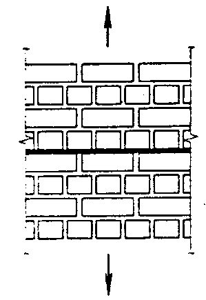
6. 19 Расчетные сопротивления кладки из кирпича и камней правильной формы осевому растяжению Rt , растяжению при изгибе Rtb , срезу Rsq и главным растягивающим напряжениям при изгибе Rtw при расчете кладки по перевязанному сечению, проходящему по кирпичу или камню, приведены в таблице 6.1 2 .
Таблица 6.1 2
| Вид напряженного состояния | Обозна - чение | Расчетные сопротивления R , МПа, кладки из кирпича и камней правильной формы осевому растяжению, растяжению при изгибе, срезу и главным растягивающим напряжениям при изгибе при расчете кладки по перевязанному сечению, проходящему по кирпичу или камню, при марке изделия | Расчетные сопротивления R , МПа, кладки из кирпича и камней правильной формы осевому растяжению, растяжению при изгибе, срезу и главным растягивающим напряжениям при изгибе при расчете кладки по перевязанному сечению, проходящему по кирпичу или камню, при марке изделия | Расчетные сопротивления R , МПа, кладки из кирпича и камней правильной формы осевому растяжению, растяжению при изгибе, срезу и главным растягивающим напряжениям при изгибе при расчете кладки по перевязанному сечению, проходящему по кирпичу или камню, при марке изделия | Расчетные сопротивления R , МПа, кладки из кирпича и камней правильной формы осевому растяжению, растяжению при изгибе, срезу и главным растягивающим напряжениям при изгибе при расчете кладки по перевязанному сечению, проходящему по кирпичу или камню, при марке изделия | Расчетные сопротивления R , МПа, кладки из кирпича и камней правильной формы осевому растяжению, растяжению при изгибе, срезу и главным растягивающим напряжениям при изгибе при расчете кладки по перевязанному сечению, проходящему по кирпичу или камню, при марке изделия | Расчетные сопротивления R , МПа, кладки из кирпича и камней правильной формы осевому растяжению, растяжению при изгибе, срезу и главным растягивающим напряжениям при изгибе при расчете кладки по перевязанному сечению, проходящему по кирпичу или камню, при марке изделия | Расчетные сопротивления R , МПа, кладки из кирпича и камней правильной формы осевому растяжению, растяжению при изгибе, срезу и главным растягивающим напряжениям при изгибе при расчете кладки по перевязанному сечению, проходящему по кирпичу или камню, при марке изделия | Расчетные сопротивления R , МПа, кладки из кирпича и камней правильной формы осевому растяжению, растяжению при изгибе, срезу и главным растягивающим напряжениям при изгибе при расчете кладки по перевязанному сечению, проходящему по кирпичу или камню, при марке изделия | Расчетные сопротивления R , МПа, кладки из кирпича и камней правильной формы осевому растяжению, растяжению при изгибе, срезу и главным растягивающим напряжениям при изгибе при расчете кладки по перевязанному сечению, проходящему по кирпичу или камню, при марке изделия |
|---|---|---|---|---|---|---|---|---|---|---|
| 200 | 150 | 100 | 75 | 50 | 35 | 25 | 15 | 10 | ||
| 1 Осевое растяжение | R t | 0,25 | 0,2 | 0,18 | 0,13 | 0,1 | 0,08 | 0,06 | 0,05 | 0,03 |
| 2 Растяжение при изгибе и главные растягивающие напряжения | R tb ( R tw ) | 0,4 | 0,3 | 0,25 | 0,2 | 0,16 | 0,12 | 0,1 | 0,07 | 0,05 |
| 3 Срез | R sq | 1,0 | 0,8 | 0,65 | 0,55 | 0,4 | 0,3 | 0,2 | 0,14 | 0,09 |
Примечания
- 1 Расчетные сопротивления осевому растяжению Rt , растяжению при изгибе Rtb и главным растягивающим напряжениям Rtw отнесены ко всему сечению разрыва кладки.
- 2 Расчетные сопротивления срезу по перевязанному сечению Rsq отнесены только к площади сечения кирпича или камня (площади сечения нетто) за вычетом площади сечения вертикальных швов.
- 3 Расчетные сопротивления кладки из крупноформатных поризованных камней и полистиролбетонных блоков определяются по экспериментальным данным. 4. При определении расчетного сопротивления осевому растяжению, растяжению при изгибе, срезу и главным растягивающим напряжениям при изгибе при расчете кладки по перевязанному сечению, проходящему по кирпичу или камню, марки керамических камней и кирпича пластического формования принимаются по результатам испытаний образцов с выравниванием их опорных поверхностей раствором. При других методах выравнивания поверхности марка кирпича или камня, приведенная в настоящей таблице, принимается с учетом коэффициента перехода K в соответствии с ГОСТ 8462.
6. 20 Расчетные сопротивления бутобетона осевому растяжению Rt , главным растягивающим напряжениям Rtw и растяжению при изгибе Rtb приведены в таблице 6.1 3 .
Таблица 6.13
| Вид напряженного состояния | Обозначение | Расчетное сопротивление R , МПа, бутобетона осевому растяжению, главным растягивающим напряжениям и растяжению при изгибе при классе бетона | Расчетное сопротивление R , МПа, бутобетона осевому растяжению, главным растягивающим напряжениям и растяжению при изгибе при классе бетона | Расчетное сопротивление R , МПа, бутобетона осевому растяжению, главным растягивающим напряжениям и растяжению при изгибе при классе бетона | Расчетное сопротивление R , МПа, бутобетона осевому растяжению, главным растягивающим напряжениям и растяжению при изгибе при классе бетона | Расчетное сопротивление R , МПа, бутобетона осевому растяжению, главным растягивающим напряжениям и растяжению при изгибе при классе бетона | Расчетное сопротивление R , МПа, бутобетона осевому растяжению, главным растягивающим напряжениям и растяжению при изгибе при классе бетона |
|---|---|---|---|---|---|---|---|
| В15 | В12,5 | В7,5 | В5 | В3,5 | В2,5 | ||
| 1 Осевое растяжение и главные растягивающие напряжения | R t R tw | 0,2 | 0,18 | 0,16 | 0,14 | 0,12 | 0,1 |
| 2 Растяжение при изгибе | R tb | 0,27 | 0,25 | 0,23 | 0,2 | 0,18 | 0,16 |
6. 21 Расчетные сопротивления кладки из природного камня для всех видов напряженного состояния допускается уточнять по специальным указаниям, составленным на основе экспериментальных исследований и утвержденным в установленном порядке.
6. 22 Расчетные сопротивления стальной арматуры Rs , принимаемые в соответствии с СП 63.13330, следует умножать в зависимости от вида армирования конструкций на коэффициенты условий работы γ cs , приведенные в таблице 6.14.
Таблица 6.14
| Вид армирования конструкций | Коэффициенты условий работы γ cs для арматуры классов | Коэффициенты условий работы γ cs для арматуры классов | Коэффициенты условий работы γ cs для арматуры классов |
|---|---|---|---|
| А240 | А300 | В500 | |
| 1 Сетчатое армирование | 0,75 | - | 0,6 |
| 2 Продольная арматура в кладке: а) продольная арматура растянутая | 0,8 | 0,9 | 0,7 |
| б) то же, сжатая | 0,85 | 0,7 | 0,6 |
| в) отогнутая арматура и хомуты | 0,8 | 0,8 | 0,6 |
| 3 Анкеры и связи в кладке: а) на растворе марки 25 и выше | 0,9 | 0,9 | 0,8 |
| б) на растворе марки 10 и ниже | 0,5 | 0,5 | 0,6 |
Примечания
1 При применении других видов арматурных сталей расчетные сопротивления принимаются не выше, чем для арматуры классов А300 или соответственно В500.
2 При расчете зимней кладки, выполненной способом замораживания, расчетные сопротивления арматуры при сетчатом армировании следует принимать с дополнительным коэффициентом условий работы γ cs1 , приведенным в таблице 10.1.
6.23 Временное сопротивление (средний предел прочности) кладки Ru определяется по формуле
) где k -коэффициент, принимаемый по таблице 6.15 ;
R -расчетные сопротивления кладки, принимаемые по таблицам 6.1 -6. 13 с учетом коэффициентов, приведенных в примечаниях к этим таблицам, а также в 6.1 -6.1 7 .
СП 15.13330.2020
Таблица 6.15
| Коэффициент k | Коэффициент k | |
|---|---|---|
| Вид кладки | При сжатии | При растяжении, растяжении с изгибом и срезе |
| 1 Для стен толщиной более 20 см из кирпича и камней всех видов, из крупных блоков, кирпичная вибрированная при проценте пустот не более 55%, рваного бута и бутобетона | 2,0 | 2,25 |
| 2 Для стен толщиной более 20 см из кирпича и камней всех видов, из крупных блоков при проценте пустот более 55% | 2,3 | 2,4 |
| 3 Для стен из кирпича, камней, блоков толщиной 20 см, но не менее 8,5 см | 2,3 | по неперевязанному сечению: 4,0* по перевязанному сечению: |
| 4 Из крупных и мелких блоков из ячеистых бетонов | 2,2 | 2,25 |
Модули упругости и деформаций кладки при кратковременной и длительной нагрузке, упругие характеристики кладки, деформации усадки, коэффициенты линейного расширения и трения
6. 2 4 Модуль упругости (начальный модуль деформаций) кладки Е 0 при кратковременной нагрузке должен приниматься равным: для неармированной кладки
для кладки с продольным армированием
В формулах (6. 2 ) и ( 6. 3 ) α -упругая характеристика кладки, принимается по таблице 6.16.
Модуль упругости кладки с сетчатым армированием принимается таким же, как для неармированной кладки.
Для кладки с продольным армированием упругую характеристику следует принимать такой же, как для неармированной кладки;
Ru -временное сопротивление (средний предел прочности) сжатию кладки, определяемое по 6.2 3 .
Упругую характеристику кладки с сетчатым армированием следует определять по формуле
В формулах (6. 3 ) и (6.4) Rsku -временное сопротивление (средний предел прочности) сжатию армированной кладки из кирпича или камней при высоте ряда не более 150 мм, определяемое по формулам: для кладки с продольной арматурой
для кладки с сетчатой арматурой
µ -процент армирования кладки; для кладки с продольной арматурой
где As и Ak -соответственно площади сечения арматуры и кладки, для кладки с сетчатой арматурой µ определяется по 7. 31;
Rsn -нормативные сопротивления арматуры в армированной кладке, принимаемые для сталей классов А240 и А400 в соответствии с СП 63.13330, а для стали класса В500 -с коэффициентом условий работы 0,6 по СП 63.13330.
Таблица 6.16
| Упругая характеристика α | Упругая характеристика α | Упругая характеристика α | Упругая характеристика α | Упругая характеристика α | |
|---|---|---|---|---|---|
| Вид кладки | при марках раствора | при марках раствора | при марках раствора | при прочности раствора | при прочности раствора |
| 25 -200 | 10 | 4 | 0,2 | нулевой | |
| 1 Из крупных блоков, изготовленных из тяжелого и крупнопористого бетона на тяжелых заполнителях и из тяжелого природного камня ( γ ≥ 1800 кг/м³ ) | 1500 | 1000 | 750 | 750 | 500 |
| 2 Из камней, изготовленных из тяжелого бетона, тяжелых природных камней и бута | 1500 | 1000 | 750 | 500 | 350 |
| 3 Из крупных блоков, изготовленных из бетона на пористых заполнителях и поризованного, крупнопористого бетона на легких заполнителях, плотного силикатного бетона и из легкого природного камня | 1000 | 750 | 500 | 500 | 350 |
| 4 Из крупных блоков, изготовленных из ячеистых бетонов: | |||||
| автоклавных | 750 | 750 | 500 | 500 | 350 |
| неавтоклавных | 500 | 500 | 350 | 350 | 350 |
| 5 Из камней, изготовленных из ячеистых бетонов: автоклавных | 750 | 500 | 350 | 350 | 200 |
| неавтоклавных | 500 | 350 | 200 | 200 | 200 |
| 6 Из керамических камней (кроме крупноформатных) | 1200 | 1000 | 750 | 500 | 350 |
| 7 Из кирпича керамического пластического прессования полнотелого и пустотелого, из пустотелых силикатных камней, из камней, изготовленных из бетона на пористых заполнителях и поризованного, из легких природных камней | 1000 | 750 | 500 | 350 | 200 |
| 8 Из кирпича силикатного полнотелого и пустотелого | 750 | 500 | 350 | 350 | 200 |
| 9 Из кирпича керамического полусухого прессования полнотелого и пустотелого | 500 | 500 | 350 | 350 | 200 |
Примечания
- 1 При определении коэффициентов продольного изгиба для элементов с гибкостью l 0 / i ≤ 28 или отношением l 0 / h ≤ 8 (см. 7.2) допускается принимать величины упругой характеристики кладки из кирпича всех видов как из кирпича пластического прессования.
- 2 Приведенные в настоящей таблице (пункты 7 9) значения упругой характеристики α для кирпичной кладки распространяются на виброкирпичные панели и блоки.
- 3 Упругая характеристика бутобетона принимается равной α = 2000.
- 4 Для кладки на легких растворах значения упругой характеристики α следует принимать по настоящей таблице с коэффициентом 0,7.
- 5 Упругие характеристики кладки из природных камней, полистиролбетонных блоков, а также кладки на клеевых растворах и клеях, допускается уточнять по специальным указаниям, составленным на основе результатов экспериментальных исследований и утвержденным в установленном порядке.
- 6 Для кладки из крупноформатных камней α следует принимать как для керамических камней с коэффициентом 0,7.
6.25Модуль деформаций кладки Е должен приниматься:
- а) при расчете конструкций по прочности для определения усилий в кладке при знакопеременных и малоцикловых нагружениях (для определения усилий в затяжках сводов, в слоях сжатых многослойных сечений, усилий, вызываемых температурными деформациями, при расчете кладки над рандбалками или под распределительными поясами) по формуле
где Е 0 -модуль упругости (начальный модуль деформаций) кладки, определяемый по формулам (6.2) и (6.3).
- б) при определении деформаций кладки от продольных или поперечных сил, усилий в статически неопределимых рамных системах, в которых элементы конструкций из кладки работают совместно с элементами из других материалов, периода колебаний каменных конструкций, жесткости конструкций по формуле
При зависимости между напряжениями и деформациями по формуле (6.9) тангенциальный модуль деформаций определяется по формуле
6. 27 Относительная деформация кладки с учетом ползучести определяется по формуле
где σ -напряжение, при котором определяется ε ; v -коэффициент, учитывающий влияние ползучести кладки: v = 1,8 -для кладки из керамических камней, в том числе крупноформатных, с вертикальными щелевидными пустотами (высота камня от 138 до 220 мм); v = 2,2 -для кладки из керамического кирпича пластического и полусухого прессования; v = 2,8 -для кладки из крупных блоков или камней, изготовленных
СП 15.13330.2020 из тяжелого бетона; v = 3,0 -для кладки из силикатного кирпича и камней полнотелых и пустотелых, а также из камней, изготовленных из бетона на пористых заполнителях или поризованного и силикатных крупных блоков; v = 3,5 -для кладки из мелких и крупных блоков или камней, изготовленных из автоклавных ячеистых бетонов; и
- v = 4,0 -то же, из неавтоклавных ячеистых бетонов полистиролбетонов. 6. 28 Модуль упругости кладки Е 0 при постоянной и длительной нагрузках с учетом ползучести следует уменьшать делением его на коэффициент ползучести v . 6. 29 Модуль упругости и деформаций кладки из природных камней допускается принимать на основе результатов экспериментальных исследований, утвержденных в установленном порядке. 6. 30 Деформации усадки кладки из керамического кирпича и керамических камней, в том числе крупноформатных, не учитываются.
Деформации усадки следует принимать для кладок: из кирпича, камней, мелких и крупных блоков, изготовленных на силикатном или цементном вяжущем, - 3 ⋅ 10 4 ; из камней и блоков, изготовленных из автоклавных ячеистых бетонов на песке и вторичных продуктах обогащения различных руд, -4 ⋅ 10 4 ; то же, из автоклавных бетонов на золе -6 ⋅ 10 4 .
6. 31 Модуль сдвига кладки следует принимать равным G = 0,4 Е 0 , где Е 0 -модуль упругости при сжатии. 6. 32 Значения коэффициентов линейного расширения кладки следует принимать по таблице 6.1 7 .
Таблица 6.1 7
| Материал кладки | Коэффициент линейного расширения кладки α t , град. -1 |
|---|---|
| 1 Кирпич керамический полнотелый, пустотелый и керамические камни | 0,000005 |
| 2 Кирпич силикатный, камни и блоки бетонные и бутобетон | 0,00001 |
| 3 Природные камни, камни и блоки из ячеистых бетонов | 0,000008 |
| Примечание - Значения коэффициентов линейного расширения для полистиролбетонов и других материалов допускается принимать по опытным данным. | кладки из |
6. 33 Коэффициент трения µ тр следует принимать по таблице 6.1 8 .
Таблица 6.1 8
| Материал | Коэффициент трения µ тр при состоянии поверхности | Коэффициент трения µ тр при состоянии поверхности |
|---|---|---|
| сухом | влажном | |
| 1 Кладка по кладке или бетону | 0,7 | 0,6 |
| 2 Дерево по кладке или бетону | 0,6 | 0,5 |
| 3 Сталь по кладке или бетону | 0,45 | 0,35 |
| 4 Кладка и бетон по песку или гравию | 0,6 | 0,5 |
| 5 То же, по суглинку | 0,55 | 0,4 |
| 6 » , по глине | 0,5 | 0,3 |
7Расчет элементов конструкций по предельным состояниям первой группы (по несущей способности)
Центрально -сжатые элементы
где N - расчетная продольная сила;
R - расчетное сопротивление сжатию кладки, определяемое по таблицам 6.1 - 6. 10; ϕ - коэффициент продольного изгиба, определяемый по 7.2;
А - площадь сечения элемента; mg - коэффициент, учитывающий влияние длительной нагрузки и определяемый по формуле (7.7) при e 0 g = 0.
Если меньший из двух размеров прямоугольного поперечного сечения элемента ≥ 30 см (или меньший радиус инерции элемента любого сечения i ≥ 8,7 см), коэффициент mg следует принимать равным единице.
или прямоугольного сплошного сечения при отношении
и упругой характеристики кладки α , принимаемой по таблице 6.16, а для кладки с сетчатым армированием -по формуле (6.4).
В формулах (7.2) и (7.3): l 0 -расчетная высота (длина) элемента, определяемая согласно указаниям 7.3;
- i -наименьший радиус инерции сечения элемента;
- h -меньший размер прямоугольного сечения.
Таблица 7.1
| Гибкость | Гибкость | Коэффициент продольного изгиба ϕ при упругих характеристиках кладки α | Коэффициент продольного изгиба ϕ при упругих характеристиках кладки α | Коэффициент продольного изгиба ϕ при упругих характеристиках кладки α | Коэффициент продольного изгиба ϕ при упругих характеристиках кладки α | Коэффициент продольного изгиба ϕ при упругих характеристиках кладки α | Коэффициент продольного изгиба ϕ при упругих характеристиках кладки α | Коэффициент продольного изгиба ϕ при упругих характеристиках кладки α |
|---|---|---|---|---|---|---|---|---|
| λ h | λ i | 1500 | 1000 | 750 | 500 | 350 | 200 | 100 |
| 4 | 14 | 1 | 1 | 1 | 0,98 | 0,94 | 0,9 | 0,82 |
| 6 | 21 | 0,98 | 0,96 | 0,95 | 0,91 | 0,88 | 0,81 | 0,68 |
| 8 | 28 | 0,95 | 0,92 | 0,9 | 0,85 | 0,8 | 0,7 | 0,54 |
| 10 | 35 | 0,92 | 0,88 | 0,84 | 0,79 | 0,72 | 0,6 | 0,43 |
| 12 | 42 | 0,88 | 0,84 | 0,79 | 0,72 | 0,64 | 0,51 | 0,34 |
| 14 | 49 | 0,85 | 0,79 | 0,73 | 0,66 | 0,57 | 0,43 | 0,28 |
| 16 | 56 | 0,81 | 0,74 | 0,68 | 0,59 | 0,5 | 0,37 | 0,23 |
| 18 | 63 | 0,77 | 0,7 | 0,63 | 0,53 | 0,45 | 0,32 | - |
| 22 | 76 | 0,69 | 0,61 | 0,53 | 0,43 | 0,35 | 0,24 | - |
| 26 | 90 | 0,61 | 0,52 | 0,45 | 0,36 | 0,29 | 0,2 | - |
| 30 | 104 | 0,53 | 0,45 | 0,39 | 0,32 | 0,25 | 0,17 | - |
| 34 | 118 | 0,44 | 0,38 | 0,32 | 0,26 | 0,21 | 0,14 | - |
| 38 | 132 | 0,36 | 0,31 | 0,26 | 0,21 | 0,17 | 0,12 | - |
| 42 | 146 | 0,29 | 0,25 | 0,21 | 0,17 | 0,14 | 0,09 | - |
| 46 | 160 | 0,21 | 0,18 | 0,16 | 0,13 | 0,1 | 0,07 | - |
| 50 | 173 | 0,17 | 0,15 | 0,13 | 0,1 | 0,08 | 0,05 | - |
| 54 | 187 | 0,13 | 0,12 | 0,1 | 0,08 | 0,06 | 0,04 | - |
Примечания
1 Коэффициент ϕ при промежуточных значениях гибкостей определяется интерполяцией.
- 2 Коэффициенты ϕ для отношений λ h , превышающих предельные (9.20 -9.24), применяются при определении ϕ с (7.7) в случае расчета на внецентренное сжатие с большими эксцентриситетами.
3 Для кладки с сетчатым армированием значения упругих характеристик, определяемые по формуле (6.4), могут быть менее 200.
- 7 .3 Расчетные высоты стен и столбов l 0 при определении коэффициентов продольного изгиба ϕ в зависимости от условий опирания их на горизонтальные опоры следует принимать:
- а) при неподвижных шарнирных опорах l 0 = Н (рисунок 7.1, а );
- б) при упругой верхней опоре и жестком защемлении в нижней опоре: для однопролетных зданий l 0 = 1,5 H , для многопролетных зданий l 0 = 1,25 H (рисунок 7.1, б );
- в) для свободно стоящих конструкций l 0 = 2 Н (рисунок 7.1, в );
- г) для конструкций с частично защемленными опорными сечениями -с учетом фактической степени защемления, но не менее l 0 = 0,8 Н , где Н -расстояние между перекрытиями или другими горизонтальными опорами, при железобетонных горизонтальных опорах -расстояние между ними в свету ;
- д) при жестких опорах (см. 9.11) и заделке в стены сборных железобетонных перекрытий принимается l 0 = 0,9 H , а при монолитных железобетонных перекрытиях, опираемых на стены по четырем сторонам, l 0 = 0,8 H ;
- е) если нагрузкой является только собственная масса элемента в пределах рассчитываемого участка, то расчетную высоту l 0 сжатых элементов, указанную в настоящем пункте, следует уменьшать умножением на коэффициент 0,75. а -шарнирно опертых на неподвижные опоры; б -защемленных внизу и имеющих верхнюю упругую опору; в -свободно стоящих
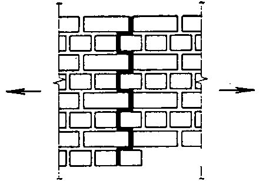
Рисунок 7.1 -Коэффициенты ϕ и mg по высоте сжатых стен и столбов
Для стен и столбов, имеющих нижнюю защемленную и верхнюю упругую опоры, при расчете сечений нижней части стены или столба до высоты 0,7 H принимаются расчетные значения ϕ и mg , а при расчете сечений верхней части стены или столба значения ϕ и mg для этих сечений увеличиваются до единицы по линейному закону (рисунок 7.1, б ).
Для свободно стоящих стен и столбов при расчете сечений в их нижней части (до высоты 0,5 Н ) принимаются расчетные значения ϕ и mg , a в верхней половине значения ϕ и mg увеличиваются до единицы по линейному закону (рисунок 7.1, в ).
В месте пересечения продольной и поперечной стен, при условии их надежного взаимного соединения, коэффициенты ϕ и mg разрешается принимать равными единице. На расстоянии Н от пересечения стен коэффициенты ϕ и mg определяются по 7.1 -7.3. Для промежуточных вертикальных участков коэффициенты ϕ и mg принимаются интерполяцией.
Для узких простенков, ширина которых меньше толщины стены, выполняется также расчет простенка в плоскости стены, при этом расчетная высота простенка принимается равной высоте проема.
- а) при опирании стен (столбов) на неподвижные шарнирные опоры -по высоте l 0 = H ( H -высота стены или столба согласно 7.3) и наименьшему сечению, расположенному в средней трети высоты H ;
- б) при упругой верхней опоре или при ее отсутствии -по расчетной высоте l 0 , определенной согласно 7.3, и сечению у нижней опоры, а при расчете верхнего участка стены (столба) высотой Н 1 -по расчетной высоте l 01 и поперечному сечению этого участка; l 01 определяется так же, как l 0 , но при Н = Н 1 .
Внецентренно сжатые элементы
где Ас -площадь сжатой части сечения при прямоугольной эпюре напряжений (рисунок 7.2), определяемая из условия, что ее центр тяжести совпадает с точкой приложения расчетной продольной силы N. Положение границы площади Ас определяется из условия равенства нулю статического момента этой площади относительно ее центра тяжести для прямоугольного сечения
В формулах (7.4) -(7.6):
R -расчетное сопротивление кладки сжатию;
А -площадь сечения элемента; h -высота сечения в плоскости действия изгибающего момента; е 0 -эксцентриситет расчетной силы N относительно центра тяжести сечения;
- ϕ -коэффициент продольного изгиба для всего сечения в плоскости действия изгибающего момента, определяемый по расчетной высоте элемента l 0 (см. 7.2, 7.3), по таблице 7.1 ;
- ϕ с -коэффициент продольного изгиба для сжатой части сечения, определяемый по фактической высоте элемента Н по таблице 7.1 в плоскости действия изгибающего момента при отношении
где hc и i с -высота и радиус инерции сжатой части поперечного сечения Ас в плоскости действия изгибающего момента.
Для прямоугольного сечения hc = h - 2 e 0 .
Для таврового сечения (при е 0 > 0,45 y ) допускается приближенно принимать Ас = 2( у -е 0 ) b и hc = 2( у -е 0 ), где у -расстояние от центра тяжести сечения элемента до его края в сторону эксцентриситета; b -ширина сжатой полки или толщина стенки таврового сечения в зависимости от направления эксцентриситета.
Рисунок 7.2 -Внецентренное сжатие
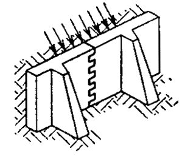
Рисунок 7.3 -Знакопеременная эпюра изгибающего момента для сжатого элемента, нагруженного поперечной нагрузкой
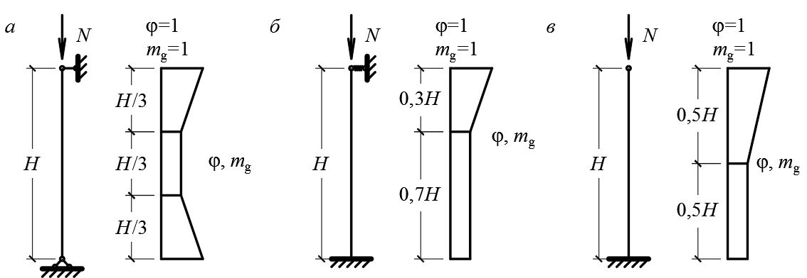
При знакопеременной эпюре изгибающего момента по высоте элемента (рисунок 7.3) расчет по прочности следует выполнять в сечениях с максимальными изгибающими моментами различных знаков. или гибкости
Коэффициент продольного изгиба ϕ с следует определять по высоте части элемента в пределах однозначной эпюры изгибающего момента при отношениях или гибкостях
где Н 1 и Н 2 -высоты частей элемента с однозначной эпюрой изгибающего момента; h с 1 ; i с 1 и h с 2 ; i с 2 -высоты и радиусы инерции сжатой части элементов в сечениях с максимальными изгибающими моментами; ω -коэффициент, определяемый по формулам, приведенным в таблице 7.2 ; т g -коэффициент, определяемый по формуле
где η -коэффициент, принимаемый по таблице 7.3;
Ng -расчетная продольная сила от длительных нагрузок; е 0 g -эксцентриситет от действия длительных нагрузок.
Таблица 7.2
| Вид кладки | Значение ω для сечения | Значение ω для сечения |
|---|---|---|
| произвольной формы | прямоугольного | |
| 1 Кладка всех видов, кроме указанных в пункте 2 2 Кладка из керамических кирпича, камней и блоков пустотностью более 25 %; из камней и крупных блоков, изготовленных из ячеистых, полистиролбетонов и крупнопористых бетонов; из природных камней (включая бут) | 0 1 1,45 2 е у + ≤ 1 | 0 1 1,45 е h + ≤ 1 |
Примечание -Если 2 у < h , то при определении коэффициента ω вместо 2 у следует принимать h .
Таблица 7.3
| Гибкость | Гибкость | Коэффициент η для кладки | Коэффициент η для кладки | Коэффициент η для кладки | Коэффициент η для кладки |
|---|---|---|---|---|---|
| λ h | λ i | из керамических кирпича и камней; из камней и крупных блоков из тяжелого бетона; из природных камней всех видов | из керамических кирпича и камней; из камней и крупных блоков из тяжелого бетона; из природных камней всех видов | из силикатного кирпича и силикатных камней; камней из бетона на пористых заполнителях; крупных блоков из ячеистого бетона | из силикатного кирпича и силикатных камней; камней из бетона на пористых заполнителях; крупных блоков из ячеистого бетона |
| при проценте продольного армирования | при проценте продольного армирования | при проценте продольного армирования | при проценте продольного армирования | ||
| 0,1 и менее | 0,3 и более | 0,1 и менее | 0,3 и более | ||
| ≤ 10 | ≤ 35 | 0 | 0 | 0 | 0 |
| 12 | 42 | 0,04 | 0,03 | 0,05 | 0,03 |
| 14 | 49 | 0,08 | 0,07 | 0,09 | 0,08 |
| 16 | 56 | 0,12 | 0,09 | 0,14 | 0,11 |
| 18 | 63 | 0,15 | 0,13 | 0,19 | 0,15 |
| 20 | 70 | 0,20 | 0,16 | 0,24 | 0,19 |
| 22 | 76 | 0,24 | 0,20 | 0,29 | 0,22 |
| 24 | 83 | 0,27 | 0,23 | 0,33 | 0,26 |
| 26 | 90 | 0,31 | 0,26 | 0,38 | 0,30 |
Примечание -Для неармированной кладки значения коэффициента η следует принимать как для кладки с армированием -0,1 % и менее. При проценте армирования более 0,1 и менее 0,3 коэффициент η определяется интерполяцией.
При h ≥ 30 см или i ≥ 8,7 см коэффициент т g следует принимать равным единице.
- 7 .8 При е 0 > 0,7у , кроме расчета внецентренно сжатых элементов по формуле (7.4), следует проводить расчет по раскрытию трещин в швах кладки согласно указаниям 8.3.
Величину случайного эксцентриситета следует принимать равной: для несущих стен -2 см; для самонесущих стен, а также для отдельных слоев трехслойных несущих стен -1 см; для перегородок и ненесущих стен, а также для заполнений фахверковых стен случайный эксцентриситет допускается не учитывать.
Косое внецентренное сжатие
В случаях сложного по форме сечения для упрощения расчета допускается принимать прямоугольную часть сечения без учета участков, усложняющих его форму (рисунок 7.5).
Рисунок 7.4 -Расчетная схема прямоугольного сечения при косом внецентренном сжатии
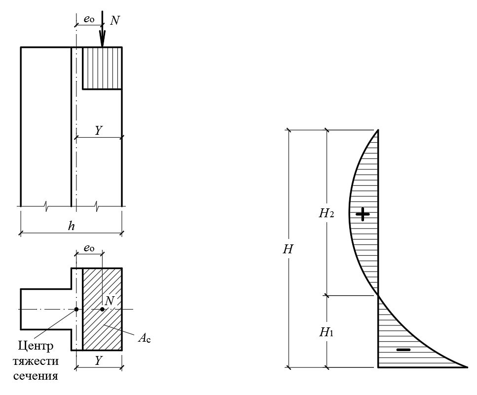
Рисунок 7.5 -Расчетная схема сложного сечения при косом внецентренном сжатии; площади А 1 и А 2 в расчете не учитываются
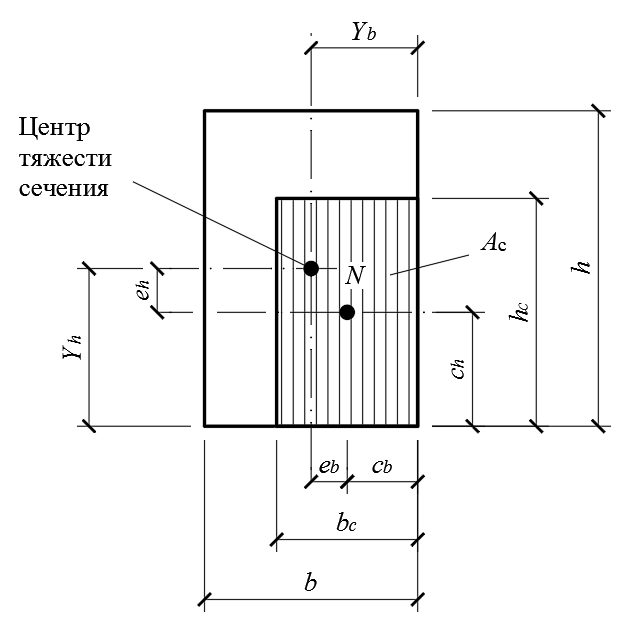
Значения ω , ϕ 1 и т g определяются дважды:
- а) при высоте сечения h или радиусе инерции i h и эксцентриситете е h в направлении h ;
- б) при высоте сечения b или радиусе инерции i b и эксцентриситете е b в направлении b .
За расчетную несущую способность принимается меньшее из двух значений, вычисленных по формуле (7.4) при двух значениях ω , ϕ 1 и т g .
Если е b > 0,7 с b или eh > 0,7 ch , то кроме расчета по несущей способности должен проводиться расчет по раскрытию трещин в соответствующем направлении по указаниям 8.3.
Смятие (местное сжатие)
Nc -продольная сжимающая сила от местной нагрузки;
Rc -расчетное сопротивление кладки на смятие, определяемое согласно указаниям 7.14; площадь смятия, на которую передается нагрузка;
Ас - d = 1,5 -0,5 Ψ -для кирпичной и виброкирпичной кладки, а также кладки из сплошных камней или блоков, изготовленных из тяжелого и легкого бетонов; d = 1 -для кладки из пустотелых бетонных или сплошных камней и блоков из крупнопористого и ячеистого бетонов; крупноформатных керамических камней;
- Ψ -коэффициент полноты эпюры давления от местной нагрузки.
При равномерном распределении давления Ψ = 1, п ри треугольной эпюре давления Ψ = 0,5.
Если под опорами изгибаемых элементов не требуется установка распределительных плит, то допускается принимать Ψ d = 0,75 -для кладок из материалов, указанных в пунктах 1 и 2 таблицы 7.4, и Ψ d = 0,5 -для кладок из материалов, указанных в пунктах 3 и 4 таблицы 7.4 и в таблице 7.5.
где
- где А -расчетная площадь сечения, определяемая согласно указаниям 7.16;
- ξ 1 -коэффициент, зависящий от материала кладки и места приложения нагрузки, определяется по таблицам 7.4 и 7.5.
Таблица 7.4
| ξ 1 , для нагрузок по схеме | ξ 1 , для нагрузок по схеме | ξ 1 , для нагрузок по схеме | ξ 1 , для нагрузок по схеме | |
|---|---|---|---|---|
| Рисунок 7.6, а, в, в 1 , д,ж | Рисунок 7.6, а, в, в 1 , д,ж | Рисунок 7.6, б, г, е, и | Рисунок 7.6, б, г, е, и | |
| Материал кладки | местная нагрузка | сумма местной и основной нагрузок | местная нагрузка | сумма местной и основной нагрузок |
| 1 Полнотелый кирпич, сплошные камни и крупные блоки из тяжелого бетона или бетона на пористых заполнителях класса В3,5 и выше | 2 | 2 | 1 | 1,2 |
| 2 Керамические кирпич и камни с пустотами (кроме крупноформатных), бутобетон | 1,5 | 2 | 1 | 1,2 |
| 3 Пустотелые бетонные камни и блоки. Сплошные камни и блоки из бетона М35. Камни и блоки из ячеистого бетона и природного камня | 1,2 | 1,5 | 1 | 1 |
| 4 Для всех типов кладки при растворе марки < М10 | 1 | 1 | 1 | 1 |
Примечания
1 Для кладок всех видов на неотвердевшем растворе или на замороженном растворе в период его оттаивания при зимней кладке, выполненной способом замораживания, принимаются значения ξ 1 , указанные в пункте 3 настоящей таблицы.
- 2 Для кирпича, камней и блоков, кроме керамических, пустотностью более 27 % значение коэффициента ξ 1 принимается равным единице. 3. Для керамического кирпича и камней с пустотностью более 27 % значение коэффициента ξ 1 допускается принимать по таблице 7.5.
- 4 Для полистиролбетонных блоков значение ξ 1 , принимается по экспериментальным данным.
Таблица 7.5
| ξ 1 , для нагрузок по схеме | ξ 1 , для нагрузок по схеме | ξ 1 , для нагрузок по схеме | ξ 1 , для нагрузок по схеме | ξ 1 , для нагрузок по схеме | ξ 1 , для нагрузок по схеме | |
|---|---|---|---|---|---|---|
| Рисунок 7.6, а, д, ж | Рисунок 7.6, а, д, ж | Рисунок 7.6, б, г, е, и | Рисунок 7.6, б, г, е, и | Рисунок 7.6, в, в 1 | Рисунок 7.6, в, в 1 | |
| Материал кладки | местная нагрузка | сумма местной и основной нагрузок | местная нагрузка | сумма местной и основной нагрузок | местная нагрузка | сумма местной и основной нагрузок |
| Керамический крупноформатный камень пустотностью от 40 %до 55% | 1,1 | 1,2 | 1,0 | 1,0 | 1,1 | 1,2 |
Примечания
1 Глубина опирания балок на кладку (рисунок 7.6, в, и 7.6, в1) должна быть не менее 380 мм. При меньшей глубине опирания необходимо применять распределительные плиты.
- 2 При большей пустотности камня во всех случаях коэффициент ξ 1 принимается равным единице.
3 В схемах г, е, и применяется к ладка из камней 2,1 НФ и кирпича 1 НФ с заполнением швов раствором (или применяются распределительные плиты).
При расчете на смятие кладки с сетчатым армированием расчетное сопротивление кладки Rc принимается в формуле (7.8) большим из двух значений: R с , определяемого по формуле (7.9) для неармированной кладки, или Rc = Rsk , где Rsk -расчетное сопротивление кладки с сетчатым армированием при осевом сжатии, определяемое по формуле (7.2 3 ) или (7.24).
В кладке из камней и блоков пустотностью 48 % и более при опирании перекрытий и балок на глубину 25 см и менее следует проводить дополнительный расчет кладки на скалывание и срез в соответствии с пунктом Ж. 13 приложения Ж, или предусматривать выполнение конструктивных мероприятий в соответствии с пунктом Ж.3. а -и -Различные случаи местного сжатия
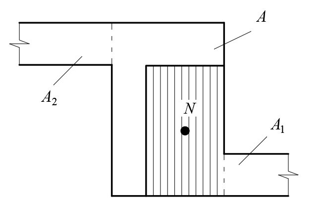
СП 15.13330.2020
Рисунок 7.6 -Определение расчетных площадей сечений при смятии (местном сжатии)
При расчете на сумму местной и основной нагрузок разрешается учитывать только ту часть местной нагрузки, которая будет приложена до загружения площади смятия основной нагрузкой.
Примечание -В случае, когда площадь сечения достаточна для восприятия одной лишь местной нагрузки, но недостаточна для восприятия суммы местной и основной нагрузок, допускается устранять передачу основной нагрузки на площадь смятия путем устройства промежутка или укладки мягкой прокладки над опорным концом прогона, балки или перемычки.
- а) при площади смятия, включающей всю толщину стены, в расчетную площадь смятия включаются участки длиной не более толщины стены в каждую сторону от границы местной нагрузки (см. рисунок 7.6, а );
- б) при площади смятия, расположенной на краю стены по всей ее толщине, расчетная площадь равна площади смятия, а при расчете на сумму местной и основной нагрузок принимается также расчетная площадь, указанная на рисунке 7.6, б пунктиром;
- в) при опирании на стену концов прогонов и балок в расчетную площадь смятия включается площадь сечения стены шириной, равной глубине заделки опорного участка прогона или балки, и длиной не более расстояния между осями двух соседних пролетов между балками (рисунок 7.6, в ); если расстояние между балками превышает двойную толщину стены, длина расчетной площади сечения определяется как сумма ширины балки b с и удвоенной толщины стены h (рисунок 7.6, в 1 );
- г) при смятии под краевой нагрузкой, приложенной к угловому участку стены, расчетная площадь равна площади смятия, а при расчете на сумму местной и основной нагрузок принимается расчетная площадь, ограниченная на рисунке 7.6, г пунктиром;
- д) при площади смятия, расположенной на части длины и ширины сечения, расчетная площадь принимается согласно рисунку 7.6, д. Если площадь смятия расположена вблизи от края сечения, то при расчете на сумму местной и основной нагрузок принимается расчетная площадь сечения, не меньшая, чем определяемая по рисунку 7.6, г , при приложении той же нагрузки к угловому участку стены;
- е) при площади смятия, расположенной в пределах пилястры, расчетная площадь равна площади смятия, а при расчете на сумму местной и основной нагрузок принимается расчетная площадь, ограниченная на рисунке 7.6, е пунктиром; ж) при площади смятия, расположенной в пределах пилястры и части стены или простенка, увеличение расчетной площади по сравнению с площадью смятия следует учитывать только для нагрузки, равнодействующая которой приложена в пределах полки (стены) или же в пределах ребра (пилястры) с эксцентриситетом е 0 > 1/6 L в сторону стены (где L -длина площади смятия, е 0 -эксцентриситет по отношению к оси площади смятия). В этих случаях в расчетную площадь сечения включается кроме площади смятия часть площади сечения полки шириной С , равной глубине заделки опорной плиты в кладку стены и длиной в каждую сторону от края плиты не более толщины стены (рисунок 7.6, ж ); и) если сечение имеет сложную форму, не допускается учитывать при определении расчетной площади сечения участки, связь которых с загруженным участком недостаточна для перераспределения давления (участки 1 и 2 на рисунке 7.6, и ).
Примечание -Во всех случаях, приведенных на рисунке 7.6, в расчетную площадь сечения А включается площадь смятия А c .
Указания настоящего пункта не распространяются на расчет опор висячих стен, который выполняется согласно 7.13 и 9. 9 .
Примечания
1 При необходимости увеличения площади смятия под опорными плитами следует укладывать на них стальные прокладки, фиксирующие положение опорного давления.
2 Конструктивные требования к участкам кладки, загруженным местными нагрузками, приводятся в 9.46 -9.4 9 .
Изгибаемые элементы
где М -расчетный изгибающий момент;
Rtb -расчетное сопротивление кладки растяжению при изгибе (см. таблицы 6.1 1 6.1 3 ) ;
- W -момент сопротивления сечения кладки при упругой ее работе.
(7.11)
Расчет изгибаемых неармированных элементов на поперечную силу следует выполнять по формуле
где Rtw -расчетное сопротивление кладки главным растягивающим напряжениям при изгибе, по таблицам 6.1 1 6.1 3;
- b -ширина сечения; плечо внутренней пары сил, для прямоугольного сечения,
Примечание -Проектирование элементов каменных конструкций, работающих на изгиб по неперевязанному сечению, допускается только в случае проверки прочности нормального сцепления кирпича (камня, блока) с кладочным раствором непосредственно на объекте в соответствии с ГОСТ 24992.
Центрально -растянутые элементы
где N -расчетная осевая сила при растяжении;
- Rt -расчетное сопротивление кладки растяжению, принимаемое по таблицам 6. 11 -6. 13 по перевязанному сечению;
- А -расчетная площадь сечения.
Примечание -Проектирование элементов каменных конструкций, работающих на осевое растяжение по неперевязанному сечению, не допускается.
Срез
где Rsq -расчетное сопротивление срезу (см. таблицу 6.1 1 ); µ -коэффициент трения по шву кладки, принимаемый для кладки из кирпича и камней правильной формы равным 0,7;
- σ 0 -среднее напряжение сжатия при наименьшей расчетной нагрузке, определяемой с коэффициентом надежности по нагрузке 0,9;
- п -коэффициент, принимаемый равным 1,0 для кладки из полнотелого кирпича и камней и равным 0,5 для кладки из пустотелого кирпича и камней с вертикальными пустотами, а также для кладки из рваного бутового камня;
- А -расчетная площадь сечения.
Расчет кладки на срез по перевязанному сечению (по кирпичу или камню) следует выполнять по формуле (7.14) без учета обжатия (2 -й член формулы 7.14). Расчетные сопротивления кладки должны приниматься по таблице 6.1 2 .
При внецентренном сжатии с эксцентриситетами, выходящими за пределы ядра сечения (для прямоугольных сечений е 0 > 0,17 h ), в расчетную площадь сечения включается только площадь сжатой части сечения Ас.
Многослойные стены с облицовкой каменными кладочными материалами
- 7 .22 Жесткими являются связи:
- а) при любом теплоизоляционном слое и расстояниях между осями вертикальных диафрагм из тычковых рядов кирпичей или камней не более 10 h и не более 120 см, где h -толщина более тонкого конструктивного слоя; б) при теплоизоляционном слое из монолитного бетона с пределом прочности на сжатие не менее 0,7 МПа или кладке из камней марки не ниже М25 при тычковых горизонтальных прокладных рядах, расположенных на расстояниях между осями рядов по высоте кладки не более 5 h;
- в) при соблюдении требований по перевязке слоев в соответствии с 9. 7 .
- 7 .23 Расчет многослойных стен с жесткими связями следует выполнять:
- а) при центральном сжатии по формуле (7.1); б) при внецентренном сжатии по формуле (7.4), при этом коэффициент ω для кладки с вертикальными диафрагмами принимается равным 1,0. В формулах (7.1) и (7.4) принимаются: площадь приведенного сечения Ared , площадь сжатой части приведенного сечения Acred и расчетное сопротивление слоя, к которому приводится сечение, с учетом коэффициента использования его прочности mR . Коэффициенты продольного изгиба ϕ , ϕ 1 и коэффициент т g следует определять по указаниям 7.2 -7.7 для материала слоя, к которому приводится сечение.
При приведении сечения стены к одному материалу толщина слоев должна приниматься фактической, а ширина слоев (по длине стены) изменяться пропорционально отношению расчетных сопротивлений и коэффициентов использования прочности слоев по формуле
где bred -приведенная ширина слоя; b -фактическая ширина слоя;
R ; т -расчетное сопротивление и коэффициент использования прочности слоя, к которому приводится сечение;
Ri ; mi -расчетное сопротивление и коэффициент использования прочности любого другого слоя стены. Коэффициенты использования прочности слоев в многослойных стенах т и mi приведены в таблице 7.6.
Таблица 7.6
| Коэффициенты использования прочности слоев | Коэффициенты использования прочности слоев | Коэффициенты использования прочности слоев | Коэффициенты использования прочности слоев | Коэффициенты использования прочности слоев | Коэффициенты использования прочности слоев | Коэффициенты использования прочности слоев | Коэффициенты использования прочности слоев | Коэффициенты использования прочности слоев |
|---|---|---|---|---|---|---|---|---|
| из материалов | из материалов | кирпич силикатный | кирпич силикатный | кирпич керамический полусухого прессования | кирпич керамический полусухого прессования | |||
| m | m i | m | m i | m | m i | m | m i | |
| Камни марок М25 и выше из бетонов на пористых заполнителях и из поризованных бетонов | 0,8 | 1 | 0,9 | 1 | 1 | 0,9 | 1 | 0,85 |
| Камни марок М25 и выше из автоклавных ячеистых бетонов | - | - | 0,85 | 1 | 1 | 0,8 | 1 | 0,8 |
| Камни марок М25 и выше из неавтоклавных ячеистых бетонов | 0,7 | 1 | 0,8 | 1 | 0,9 | 1,0 |
7 .24 При расчете многослойных стен с гибкими связями коэффициенты ϕ , ϕ 1 и т g следует определять по 7.2 -7.7 для условной толщины, равной сумме толщин двух конструктивных слоев, умноженной на коэффициент 0,7, но не меньше полученной отдельно для основного слоя.
При различном материале слоев принимается приведенная упругая характеристика кладки α red , определяемая по формуле
где α 1 и α 2 -упругие характеристики слоев; h 1 и h 2 -толщина слоев.
7 .25 Многослойные стены с утеплителями с пределом прочности на сжатие 1,5 МПа и ниже следует рассчитывать по сечению кладки без учета несущей способности утеплителя.
7 .26 В двухслойных стенах при жесткой связи слоев эксцентриситет продольной силы, направленной в сторону термоизоляционного слоя относительно оси, проходящей через центр тяжести приведенного сечения, должен быть не больше 0,5 у.
7 .27 Сечение стен с облицовкой следует приводить к материалу основного несущего слоя стены. Расчет по раскрытию швов облицовки на растянутой стороне сечения при эксцентриситете в сторону кладки, превышающем 0, 7у относительно оси приведенного сечения, следует проводить по указаниям 8.3. Коэффициенты использования прочности слоев в стенах с облицовками m и mi приведены в таблице 7.7.
Таблица 7.7
| Материал стены т | Материал стены т | Материал стены т | Материал стены т | Материал стены т | Материал стены т | Материал стены т | Материал стены т | |
|---|---|---|---|---|---|---|---|---|
| Материал облицовочного слоя m i | керамические камни | керамические камни | керамический кирпич пластического прессования | керамический кирпич пластического прессования | силикатный кирпич | силикатный кирпич | керамический кирпич полусухого прессования | керамический кирпич полусухого прессования |
| m i | m | m i | m | m i | m | m i | m | |
| Лицевой кирпич пластического прессования высотой 65 мм | 0,8 | 1 | 1 | 0,9 | 1 | 0,6 | 1 | 0,65 |
| Лицевые керамические камни со щелевидными пустотами высотой 140 мм | 1 | 0,9 | 1 | 0,8 | 0,85 | 0,6 | 1 | 0,5 |
| Крупноразмерные плиты из силикатного бетона | 0,6 | 0,8 | 0,6 | 0,7 | 0,7 | 0,6 | 0,9 | 0,6 |
| Силикатный кирпич | 0,6 | 0,85 | 0,6 | 1 | 1 | 1 | 1 | 0,8 |
| Силикатные камни высотой 138 мм | 0,9 | 1 | 0,8 | 1 | 1 | 0,8 | 1 | 0,7 |
| Крупноразмерные плиты из тяжелого цементного бетона | 1 | 0,9 | 1 | 0,9 | 1 | 0,75 | 1 | 0,65 |
Вертикальные перемещения наружного и внутреннего слоев многослойной кладки определяются по приложению В.
Стены с вертикальными диафрагмами
7 .29 Кладка вертикальных кирпичных диафрагм, соединяющих слои кладки, проверяется на срез
где τ -касательные напряжения, действующие в вертикальной плоскости, проходящей через диафрагму и возникающие от совместного действия вертикальной нагрузки и температурно -влажностных деформаций;
Rsq -расчетное сопротивление кладки диафрагм срезу, определяемое по 7.20.
При расчете на центральное и внецентренное сжатие рассматривается фрагмент стены двутаврового сечения (рисунок 7.7). Изгибающие моменты от внецентренного приложения нагрузки учитываются только от нагрузок, приложенных в пределах рассматриваемого этажа. Помимо вертикальных усилий следует учитывать изгибающие моменты, возникающие от температурных воздействий.
Коэффициенты продольного изгиба ϕ , ϕ 1 и коэффициент mg следует определять для сечения, проходящего по диафрагме.
В формулах (7.1) и (7.4) принимаются: площадь приведенного сечения Ared , площадь сжатой части приведенного сечения Acred и расчетное сопротивление слоя, к которому приводится сечение, с учетом коэффициента использования его прочности mR .
Коэффициенты продольного изгиба ϕ , ϕ 1 и коэффициент mg следует определять по указаниям 7.2 -7.7 для материала слоя, к которому приводится сечение, для сечения, проходящего по диафрагме.
Рисунок 7.7 -Приведенное сечение рассчитываемого фрагмента стены
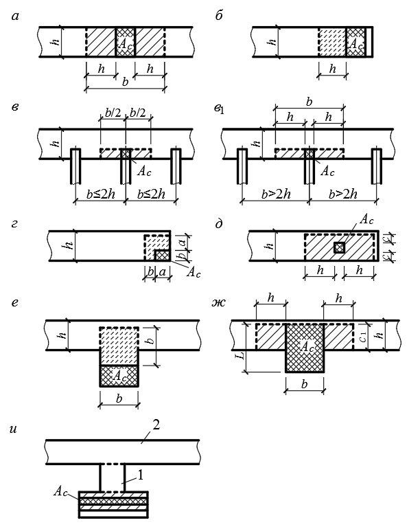
Приведенная площадь горизонтального сечения рассчитываемого участка стены определяется по формуле
где А вс -площадь горизонтального сечения внутреннего слоя, к которому приводится сечение;
Ared , н c -приведенная площадь горизонтального сечения наружного слоя;
Ared , д -приведенная площадь горизонтального сечения диафрагмы; h нс - толщина наружного слоя; h д -толщина диафрагмы (расстояние в свету между наружным и внутренним слоями).
Приведение материала наружного слоя и диафрагмы к материалу внутреннего слоя выполняется по 7.23.
Высота сжатой зоны определяется из условия равенства нулю суммы статических моментов эпюры вертикальных напряжений относительно оси приложения вертикального усилия. При этом принимается, что в предельном состоянии эпюра вертикальных напряжений является прямоугольной. Для многослойной кладки с вертикальными диафрагмами принимается приведенная упругая характеристика кладки, определяемая по формуле
где α вс ; α нс ; α д -упругие характеристики, соответственно, внутреннего, наружного слоев и диафрагмы.
Многослойные стены с гибкими связями с поэтажным опиранием лицевого слоя
7. 30 Расчет неармированной кладки по перевязанному (вертикальному) сечению при действии растягивающих усилий в плоскости стены проводят из условий
где N ( t ) -горизонтальное растягивающее усилие от температурных воздействий, действующее в основании лицевого слоя, определяемое в соответствии с СП 327.1325800 ;
Rt -расчетное сопротивление кладки растяжению по перевязанному сечению, принимаемое таблице 6.12;
A -площадь вертикального сечения кладки.
Проверка неармированной кладки на возможность образования вертикальных трещин от температурных воздействий выполняется из условия
γ r -коэффициент условий работы кладки при расчете на растяжение по предельным состояниям второй группы, назначаемый равным 1,5 для зданий с предполагаемым сроком службы 100 лет, 2,0 со сроком службы 50 лет и 3,0 со сроком службы 25 лет. где
Расчет армированной кладки проводят в соответствии с СП 327.1325800.
Для кладки лицевого слоя с конструктивным армированием расстояния между вертикальными деформационными швами определяются по таблице 9.8.
Расстояния между вертикальными деформационными швами в армированной кладке лицевого слоя вычисляют по формулам СП 327.1325800.
Армокаменные конструкции
7. 31 Элементы с сетчатым армированием выполняются на растворах марки не ниже 50 при высоте ряда кладки не более 150 мм. Прочностные характеристики кладки с сетчатым армированием при высоте ряда кладки более 150 мм определяются по экспериментальным данным.
Расчет элементов с сетчатым армированием (рисунок 7.8) при центральном сжатии следует выполнять по формуле
где N -расчетная продольная сила;
Rsk ≤ 2 R -расчетное сопротивление при центральном сжатии, определяемое для армированной кладки из кирпича всех видов и керамических камней со щелевидными вертикальными пустотами по формуле
p -коэффициент, принимаемый при пустотности кирпича (камня) до 20 % включительно равным 2, 0; при пустотности от 20 %, до 30 % включительно -равным 1,5 ; при пустотности выше 30 % -равным 1,0. где
При прочности раствора менее 2,5 МПа при проверке прочности кладки в процессе ее возведения для кирпича всех видов и керамических камней со щелевидными вертикальными пустотами расчетное сопротивление при центральном сжатии определяется по формуле
где R 1 -расчетное сопротивление неармированной кладки в рассматриваемый срок твердения раствора;
R 25 -расчетное сопротивление кладки при марке раствора 25;
100 s k V V µ = -процент армирования по объему. Для сеток с квадратными ячейками из арматуры сечением Ast с размером ячейки С при расстоянии между сетками S
mg -коэффициент, определяемый по формуле (7.7);
Vs и Vk -соответственно объемы арматуры и кладки; ϕ -коэффициент продольного изгиба, определяемый по таблице
7.1для λ h или λ i при упругой характеристике кладки с сетчатым армированием α sk , определяемой по формуле (6.4).
Примечание -Процент армирования кладки сетчатой арматурой, учитываемый в расчете на центральное сжатие, должен быть не более определяемого по формуле
Rs -расчетное сопротивление арматуры.
При армировании меньше 0,1 % сечение рассчитывается как неармированное.
1 -арматурная сетка; 2 -выпуск арматурной сетки для контроля ее укладки
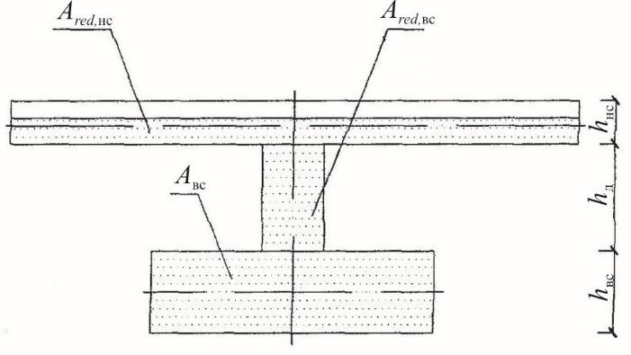
Рисунок 7.8 -Поперечное (сетчатое) армирование каменных конструкций
При прочности раствора более 2,5 МПа отношение 1 25 R R принимается равным единице.
7. 32 Расчет внецентренно сжатых элементов с сетчатым армированием при малых эксцентриситетах, не выходящих за пределы ядра сечения (для прямоугольного сечения е 0 ≤ 0,17 h ), следует проводить по формуле
или для прямоугольного сечения
где Rskb ≤ 2 R -расчетное сопротивление армированной кладки при внецентренном сжатии, определяемое для армированной кладки из кирпича всех видов и керамических камней со щелевидными вертикальными пустотами при марке раствора М50 и выше по формуле
а при марке раствора менее 25 (при проверке прочности кладки в процессе ее возведения) для кирпича всех видов и керамических камней со щелевидными вертикальными пустотами по формуле
Остальные величины -см. 7.1. и 7.7.
Примечания
- 1 При эксцентриситетах, выходящих за пределы ядра сечения (для прямоугольных сечений е 0 > 0,17 h ), а также при λ h > 15 или λ i > 53 применять сетчатое армирование не следует.
- 2 Процент армирования кладки сетчатой арматурой при внецентренном сжатии должен быть не более определяемого по формуле
При армировании меньше 0,1 % сечение рассчитывается как неармированное.
8Расчет элементов конструкций по предельным состояниям второй группы (по образованию и раскрытию трещин и по деформациям)
- а) внецентренно сжатые неармированные элементы при е 0 > 0,7 у ;
- б) смежные, работающие совместно конструктивные элементы кладки из материалов различной деформативности (с различными модулями упругости, ползучестью, усадкой) или при значительной разнице в напряжениях, возникающих в этих элементах;
- в) самонесущие стены, связанные с каркасами и работающие на поперечный изгиб, если несущая способность стен недостаточна для самостоятельного (без каркаса) восприятия нагрузок;
- г) стеновые заполнения каркасов -на перекос в плоскости стен; д) продольно армированные изгибаемые, внецентренно сжатые и растянутые элементы, эксплуатируемые в условиях среды, агрессивной для арматуры; е) продольно армированные емкости при наличии требований непроницаемости штукатурных или плиточных изоляционных покрытий; ж) другие элементы зданий и сооружений, в которых образование трещин не допускается или же раскрытие трещин должно быть ограничено по условиям эксплуатации.
Расчет следует выполнять по формуле
где yr -коэффициент условий работы кладки при расчете по раскрытию трещин, принимаемый по таблице 8.1;
Rtb -расчетное сопротивление кладки растяжению при изгибе по неперевязанному сечению (см. таблицу 6.11); у -расстояние от центра тяжести сечения до сжатого его края;
I -момент инерции сечения в плоскости действия изгибающего момента.
Остальные обозначения величин -см. 7.7.
Таблица 8.1
| Характеристика и условия работы кладки | Коэффициент условий работы γ r при предполагаемом сроке службы конструкций, лет | Коэффициент условий работы γ r при предполагаемом сроке службы конструкций, лет | Коэффициент условий работы γ r при предполагаемом сроке службы конструкций, лет |
|---|---|---|---|
| 100 | 50 | 25 | |
| 1 Неармированная внецентренно нагруженная и растянутая кладка | 1,5 | 2,0 | 3,0 |
| 2 То же, с декоративной отделкой для конструкций с повышенными архитектурными требованиями | 1,2 | 1,2 | - |
СП 15.13330.2020
| 3 Неармированная внецентренно нагруженная кладка с гидроизоляционной штукатуркой для конструкций, работающих на гидростатическое давление жидкости | 1,2 | 1,5 | - |
|---|---|---|---|
| 4 То же, с кислотоупорной штукатуркой или облицовкой на замазке на жидком стекле | 0,8 | 1,0 | 1,0 |
| Примечание - Коэффициент условий работы γ r при расчете продольно армированной кладки на внецентренное сжатие, изгиб, осевое и внецентренное растяжение и главные растягивающие напряжения принимается по настоящей таблице с коэффициентами: | Примечание - Коэффициент условий работы γ r при расчете продольно армированной кладки на внецентренное сжатие, изгиб, осевое и внецентренное растяжение и главные растягивающие напряжения принимается по настоящей таблице с коэффициентами: | Примечание - Коэффициент условий работы γ r при расчете продольно армированной кладки на внецентренное сжатие, изгиб, осевое и внецентренное растяжение и главные растягивающие напряжения принимается по настоящей таблице с коэффициентами: | Примечание - Коэффициент условий работы γ r при расчете продольно армированной кладки на внецентренное сжатие, изгиб, осевое и внецентренное растяжение и главные растягивающие напряжения принимается по настоящей таблице с коэффициентами: |
Таблица 8.2
| Вид и назначение покрытий | ε u |
|---|---|
| Гидроизоляционная цементная штукатурка для конструкций, подверженных гидростатическому давлению жидкостей | 0,8 ⋅ 10 - 4 |
| Кислотоупорная штукатурка на жидком стекле или однослойное покрытие из плиток каменного литья (диабаз, базальт) на кислотоупорной замазке | 0,5 ⋅ 10 - 4 |
| Двух - и трехслойные покрытия из прямоугольных плиток каменного литья на кислотоупорной замазке: а) вдоль длинной стороны плиток | 1 ⋅ 10 - 4 |
| б) то же, вдоль короткой стороны плиток | 0,8 ⋅ 10 - 4 |
| Примечание - При продольном армировании конструкций, а также при оштукатуривании неармированных конструкций по сетке предельные относительные деформации ε u допускается увеличивать на 25 %. | Примечание - При продольном армировании конструкций, а также при оштукатуривании неармированных конструкций по сетке предельные относительные деформации ε u допускается увеличивать на 25 %. |
при изгибе при внецентренном сжатии
В формулах (8.2) -(8.5):
- N и М -продольная сила и момент от нормативных нагрузок, которые будут приложены после нанесения на поверхность кладки штукатурных или плиточных покрытий;
- ε u -предельные относительные деформации, принимаемые по таблице 8.2 ;
- ( h -у) -расстояние от центра тяжести сечения кладки до наиболее удаленной растянутой грани покрытия;
- I -момент инерции сечения;
- Е -модуль деформаций кладки, определяемый по формуле (6.8).
9Проектирование конструкций
Общие указания
Допускается применение указанных материалов для стен помещений с мокрым режимом при условии нанесения на их внутренние поверхности гидроизоляционного слоя.
Примечание -В проекте должны быть предусмотрены мероприятия по сохранности гидроизоляционного слоя как на этапах строительства и сдачи здания в эксплуатацию, так и в последующее время при проведении ремонтных работ.
при внецентренном растяжении
СП 15.13330.2020
Применение изделий на основе гипса, в том числе гипсобетонных, для стен помещений с влажным и мокрым режимом, а также для стен подвалов, цоколей, фундаментов не допускается. 9. 2 Полнотелые силикатные блоки для возведения фундаментов и наружных стен подвалов применяются при соблюдении требований 9. 71 . Силикатный кирпич, перегородочные блоки и плиты в санузлах, душевых, ванных применяются при условии вертикальной гидроизоляции или облицовки плиткой внутренней поверхности стен (при «сдаче» зданий без отделки -только наружных стен). 9. 3 Трехслойная кладка с эффективным утеплителем для наружных стен помещений с влажным режимом эксплуатации применяется при условии нанесения на их внутренние поверхности пароизоляционного покрытия. Применение такой кладки для наружных стен помещений с мокрым режимом эксплуатации, а также для наружных стен подвалов не допускается. 9.4 При проверке прочности и устойчивости стен, столбов, карнизов и других элементов в период возведения зданий следует учитывать, что элементы перекрытий (балки, плиты и пр.) укладываются по ходу кладки. Возможно опирание элементов на свежую кладку. 9.5 Для повышения сопротивления теплопередаче стен из сплошной кладки, возводимой из кирпича, камня и мелких блоков, кладку стен допускается выполнять с уширенным швом шириной не более 50 мм между лицевым и основным слоями кладки, заполняемым эффективным утеплителем. При недостаточном сопротивлении теплопередаче наружных стен, проектируемых из керамического крупноформатного камня, следует предусматривать возведение кладки с применением сеток из композитных материалов в каждом ряду, которые препятствуют попаданию раствора в пустоты камня, или другие методы повышения сопротивления теплопередаче стены. 9.6 Крупноразмерные элементы конструкций (панели, крупные блоки и т. п.) должны быть проверены расчетом для стадий их изготовления, транспортирования и монтажа. Собственный вес элементов сборных конструкций следует принимать в расчете с учетом коэффициента динамичности, значение которого принимается равным: при транспортировании -1,8; при подъеме и монтаже -1,5; при этом коэффициент перегрузки к собственному весу элемента не вводится. Допускается уменьшение указанных выше коэффициентов динамичности, если это подтверждено длительным опытом применения таких элементов, но не ниже 1,25.
9. 7 Для сплошной кладки из кирпича и камней правильной формы, за исключением кирпичных панелей, необходимо предусматривать следующие минимальные требования к перевязке: а) для кладки из полнотелого кирпича толщиной 65 мм -один тычковый ряд на шесть рядов кладки, а из кирпича толщиной 88 мм и пустотелого кирпича толщиной 65 мм -один тычковый ряд на четыре ряда кладки; б) для кладки из камней правильной формы при высоте ряда до 200 мм -один тычковый ряд на три ряда кладки; в) для кладки из крупноформатных камней высотой до 260 мм, толщиной до 250 мм и длиной до 510 мм на толщину стены перевязку следует осуществлять в полкамня в каждом ряду. Минимальная величина перевязки швов должна быть 0,4 h .
9. 8 Необходимо предусматривать защиту стен и столбов от увлажнения со стороны фундаментов, а также со стороны примыкающих тротуаров и отмосток устройством гидроизоляционного слоя выше уровня тротуара или верха отмостки. Гидроизоляционный слой следует устраивать также ниже пола подвала.
Для подоконников, поясков, парапетов и тому подобных выступающих, особо подверженных увлажнению частей стен следует предусматривать защитные покрытия из цементного раствора, кровельной стали и др. Выступающие части стен должны иметь уклоны, обеспечивающие сток атмосферной влаги.
Таблица 9.1
| Группа кладки | Группа кладки | Группа кладки | Группа кладки | |
|---|---|---|---|---|
| Вид кладки | I | II | III | IV |
| 1 Сплошная кладка из кирпича или камней марки 50 и выше | На растворе марки 10 и выше | На растворе марки 4 | - | - |
| 2 То же, марок 35 и 25 | - | На растворе марки 10 и выше | На растворе марки 4 | - |
| 3 То же, марок 15, 10 и 7 | - | - | На любом растворе | На любом растворе |
| Группа кладки | Группа кладки | Группа кладки | Группа кладки | |
|---|---|---|---|---|
| Вид кладки | I | II | III | IV |
| 4 Крупные блоки из кирпича или камней, в том числе крупноформатных (вибрированные и невибрированные) | На растворе марки 25 и выше | - | - | - |
| 5 Кладка из грунтовых материалов (грунтоблоки и сырцовый кирпич) | - | - | На известковом растворе | На глиняном растворе |
| 6 Облегченная кладка из кирпича, в т.ч. крупноформатных или бетонных камней с перевязкой горизонтальными тычковыми рядами или скобами | На растворе марки 50 и выше с заполнением бетоном не ниже класса В2 или вкладышами марок 25 и | На растворе марки 25 с заполнением бетоном или вкладышами марки 15 | На растворе марки 10 и с заполнением засыпкой | - |
| 7 Облегченная кладка из кирпича или камней колодцевая (с перевязкой вертикальными диафрагмами) | На растворе марки 50 и выше с заполнением теплоизоля - ционными плитами или засыпкой | На растворе марки 25 с заполнением теплоизоля - ционными плитами или засыпкой | - | - |
| 8 Кладка из постелистого бута | - | На растворе марки 25 и выше | На растворе марок 10 и 4 | На глиняном растворе |
| 9 Кладка из рваного бута | - | На растворе марки 50 и выше | На растворе марок 25 и 10 | На растворе марки 4 |
| 10 Бутобетон | На бетоне класса В7,5 и выше | На бетоне классов В5 и В3,5 | На бетоне класса В2,5 | - |
- 9 .10 Каменные стены в зависимости от конструктивной схемы здания подразделяются на:
- несущие, воспринимающие кроме нагрузок от собственного веса и ветра, нагрузки от покрытий, перекрытий, кранов и т. п.;
- самонесущие, воспринимающие нагрузку только от собственного веса стен всех вышележащих этажей зданий и ветровую нагрузку;
- ненесущие (в том числе навесные, стены с лицевым слоем, опирающимся на перекрытие или стальные кронштейны), воспринимающие нагрузку только от собственного веса и ветра в пределах одного этажа при высоте этажа не более 6 м; при большей высоте этажа эти стены относятся к самонесущим;
- перегородки -внутренние стены, воспринимающие нагрузки только от собственного веса и ветра (при открытых оконных проемах) в пределах одного этажа при высоте его не более 6 м; при большей высоте этажа стены этого типа условно относятся к самонесущим. В зданиях с самонесущими и ненесущими наружными стенами нагрузки от покрытий, перекрытий и т. п. передаются на каркас или другие несущие конструкции зданий. 9 . 11 Каменные стены и столбы зданий при расчете на горизонтальные нагрузки, внецентренное и центральное сжатие следует принимать опертыми в горизонтальном направлении на междуэтажные перекрытия, покрытия и поперечные стены и другие несущие конструкции здания. Эти опоры делятся на жесткие (несмещаемые) и упругие. За жесткие опоры следует принимать: а) поперечные каменные и бетонные стены толщиной не менее 12 см, железобетонные толщиной не менее 6 см, контрфорсы, поперечные рамы с жесткими узлами, участки поперечных стен и другие конструкции, рассчитанные на восприятие горизонтальной нагрузки (приложение Б) ; б) покрытия и междуэтажные перекрытия при расстоянии между поперечными, жесткими конструкциями не более указанных в таблице 9.2 ; в) ветровые пояса, фермы, ветровые связи и железобетонные обвязки, рассчитанные по прочности и по деформациям на восприятие горизонтальной нагрузки, передающейся от стен (приложение Д). перекрытия при расстояниях между поперечными конструкциями, превышающих указанные в таблице
За упругие опоры следует принимать покрытия и междуэтажные жесткими 9.2, при отсутствии ветровых связей, указанных в подпункте «в».
СП 15.13330.2020 Таблица 9.2
| Тип покрытий и перекрытий | Расстояние между поперечными жесткими конструкциями, м, при группе кладки | Расстояние между поперечными жесткими конструкциями, м, при группе кладки | Расстояние между поперечными жесткими конструкциями, м, при группе кладки | Расстояние между поперечными жесткими конструкциями, м, при группе кладки |
|---|---|---|---|---|
| I | II | III | IV | |
| А Железобетонные сборные замоноличенные (см. примечание 2) и монолитные | 54 | 42 | 30 | - |
| Б Из сборных железобетонных настилов (см. примечание 3) и из железобетонных или стальных балок с настилом из плит или камней | 42 | 36 | 24 | - |
| В Деревянные | 30 | 24 | 18 | 12 |
Примечания
1 Указанные в настоящей таблице предельные расстояния должны быть уменьшены в следующих случаях:
- а) при скоростных напорах ветра 70, 85 и 100 кгс/м² соответственно на 15 %, 20 % и 25 %;
- б) при высоте здания 22 -32 м -на 10 %; 33 -48 м -на 20 % и более 48 м -на 25 %;
- в) для узких зданий при ширине b менее двойной высоты этажа Н -пропорционально отношению b/ 2 Н.
- 2 В сборных замоноличенных перекрытиях типа А стыки между плитами должны быть усилены для передачи через них растягивающих усилий (путем сварки выпусков арматуры, прокладки в швах дополнительной арматуры с заливкой швов раствором марки не ниже М100 -при плитах из тяжелого бетона и марки не ниже М 50 -при плитах из легкого бетона или другими способами замоноличивания).
- 3 В перекрытиях типа Б швы между плитами или камнями, а также между элементами заполнения и балками должны быть тщательно заполнены раствором марки не ниже М50.
- 4 Перекрытия типа В быть с двойным деревянным настилом или настилом, накатом и подшивкой (СП 64.13330).
Стены и столбы, не имеющие связи с перекрытиями (при устройстве катковых опор и т. п.), следует рассчитывать как свободно стоящие.
9. 12 При упругих опорах проводится расчет рамной системы, стойками которой являются стены и столбы (железобетонные, кирпичные и др.), а ригелями -перекрытия и покрытия. При этом следует принимать, что стойки жестко защемлены в опорных сечениях.
При статических расчетах рам жесткость стен или столбов, выполненных из кирпичной или каменной кладки, допускается определять при модуле упругости кладки Е = 0,8 Е 0 и моменте инерции сечения без учета раскрытия швов, а перекрытия и покрытия следует принимать как жесткие ригели (распорки), шарнирно связанные со стенами.
9. 13 В стенах с пилястрами или без пилястр ширину стены при расчете следует принимать: 2. а) если конструкция покрытия обеспечивает равномерную передачу давления по всей длине опирания покрытия на стену, ширину стены следует принимать равной ширине между проемами, а в стенах без проемов равной ширине участка стены между осями пролетов; б) если боковое давление от стены на покрытие передается в местах опирания на стены ферм или прогонов, то стена с пилястрой рассматривается как стойка рамы с постоянным по высоте сечением, при этом ширина полки принимается равной 1/3 Н в каждую сторону от края пилястры, но не более 6 h и ширины стены между проемами ( H -высота стены от уровня заделки, h -толщина стены). При отсутствии пилястр и передаче на стены сосредоточенных нагрузок ширина участка 1/3 Н принимается в каждую сторону от края распределительной плиты, установленной под опорами ферм или прогонов. 9.14 Стены и столбы, имеющие в плоскостях междуэтажных перекрытий опоры, рассматриваемые согласно 9. 11 как жесткие, рассчитываются на внецентренную нагрузку как вертикальные неразрезные балки. Допускается стены или столбы считать расчлененными по высоте на однопролетные балки с расположением опорных шарниров в плоскостях опирания перекрытий. При этом нагрузку от верхних этажей следует принимать приложенной в центре тяжести сечения стены или столба вышележащего этажа; нагрузки в пределах рассчитываемого этажа принимают приложенными с фактическими эксцентриситетами относительно центра тяжести сечения стены или столба с учетом изменения сечения в пределах этажа и ослабления горизонтальными и наклонными бороздами. При отсутствии специальных опор, фиксирующих положение опорного давления, допускается принимать расстояние от точки приложения опорной реакции прогонов, балок или настила до внутренней грани стены или опорной плиты равным одной трети глубины заделки, но не более 7 см. Изгибающие моменты от ветровой нагрузки следует определять в пределах каждого этажа как для балки с заделанными концами, за исключением верхнего этажа, в котором верхняя опора принимается шарнирной. 9.15 При расчете стен (или их отдельных вертикальных участков) на вертикальные и горизонтальные нагрузки должны быть проверены: а) горизонтальные сечения на центральное или внецентренное сжатие; б) наклонные сечения на главные растягивающие напряжения при изгибе в плоскости стены; в) раскрытие трещин от вертикальной нагрузки в зоне примыкания связанных между собой участков стен различной жесткости или разнонагруженных участков стен. При учете совместной работы поперечных и продольных стен при действии горизонтальной нагрузки должно быть обеспечено восприятие сдвигающих усилий в местах их взаимного примыкания, определяемых по формуле где
В формулах (9.2) и (9.3):
- Q -расчетная поперечная сила от горизонтальной нагрузки в середине высоты этажа ;
Т -сдвигающее усилие в пределах одного этажа;
- Q -расчетная поперечная сила от горизонтальной нагрузки в середине высоты этажа;
- у -расстояние от оси продольной стены до оси, проходящей через центр тяжести сечения стен в плане (рисунок 9.1);
- А -площадь сечения полки (участка продольной стены, учитываемого в расчете);
- I -момент инерции сечения стен относительно оси, проходящей через центр тяжести сечения стен в плане; h -толщина поперечной стены;
H -высота этажа;
Rsq -расчетное сопротивление кладки срезу по вертикальному перевязанному сечению (см. 7.20).
При определении площади сечения полки А и момента инерции сечения стен следует учитывать указания, приведенные в 9. 13 .
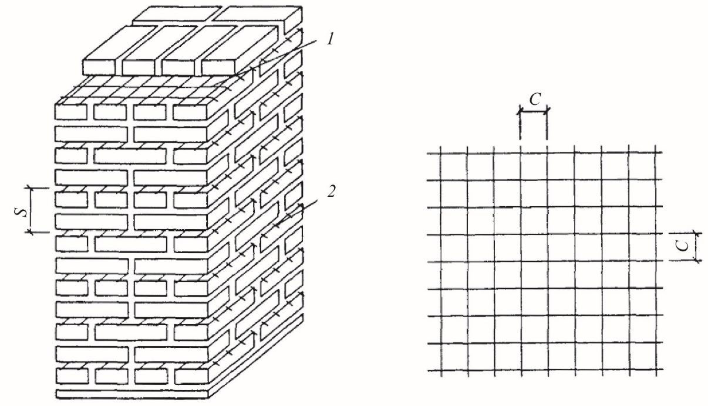
1 - простенок продольной стены; 2 - поперечная стена
Рисунок 9.1 -План поперечной стены и простенков продольных стен
при наличии в стене растянутой части сечения -по формуле
Rtw -расчетное сопротивление главным растягивающим напряжениям по швам кладки (таблица 6.1 1 );
Rtq -расчетное сопротивление скалыванию кладки, обжатой расчетной силой N , определяемой с коэффициентом надежности по нагрузке 0,9;
При наличии в стене растянутой части сечения принимается
где А -площадь сечения поперечной стены с учетом (или без учета) участков продольной стены (см. рисунок 9.1);
- Ас -площадь только сжатой части сечения стены при эксцентриситетах, выходящих за пределы ядра сечения;
- h -толщина поперечной стены на участке, где эта толщина наименьшая, при условии, если длина этого участка превышает 1/4 высоты этажа или же 1/4 длины стены; при наличии в стене каналов их ширина из толщины стены исключается;
- l -длина поперечной стены в плане, если в сечение входят полки в виде отрезков наружных стен, то l -расстояние между осями этих полок;
0 S l I ν = -коэффициент неравномерности касательных напряжений в сечении. Значения v допускается принимать: для двутавровых сечений v = 1,15; для тавровых сечений v = 1,35; для прямоугольных сечений (без учета работы продольных стен) v = 1,5;
- S 0 -статический момент части сечения, находящейся по одну сторону от оси, проходящей через центр тяжести сечения;
- I -момент инерции всего сечения относительно оси, проходящей через центр тяжести сечения. 9. 17 При недостаточном сопротивлении кладки скалыванию, определяемому по формулам (9.2), (9.3), допускается армирование ее продольной арматурой в горизонтальных швах. Расчетное сопротивление скалыванию армированной кладки Rstq следует определять по формуле
где µ -процент армирования, определяемый по вертикальному где
сечению стены.
9. 18 При расчете поперечных стен здания на горизонтальные нагрузки, действующие в их плоскости, перемычки, перекрывающие проемы в стенах, рассматриваются как шарнирные вставки между вертикальными участками стен.
Если прочность поперечных стен с проемами при действии горизонтальных нагрузок обеспечивается только с учетом жесткости перемычек, то перемычки должны воспринимать возникающие в них перерезывающие силы T , определяемые по формуле
Q -расчетная поперечная сила от горизонтальной нагрузки, воспринимаемая поперечной стеной в уровне перекрытия, примыкающего к рассчитываемым перемычкам;
Н -высота этажа; l -длина поперечной стены в плане (9.16); v -принимается по 9.16.
9. 19 Расчет перемычек на перерезывающую силу от горизонтальной нагрузки, определяемую по формуле (9.8), выполняется на скалывание и на изгиб по формулам (9.9) и (9.10), окончательно принимается меньшое из двух полученных значений:
где h и l -высота и пролет перемычки (в свету);
Т -см. формулу (9.8);
А -поперечное сечение перемычки;
Rtw и Rtb -см. таблицу 6.1 1 .
Если прочность перемычек недостаточна, то они должны быть усилены продольным армированием или железобетонными балками, рассчитываемыми на изгиб и скалывание на момент
и поперечную силу Т, формула (9.8), в соответствии с СП 63.13330. Расчет заделки концов балок (перемычек) в кладке выполняется по указаниям 9.52.
Допустимые отношения высот стен и столбов к их толщинам
9. 20 Отношение высоты стены или столба к толщине независимо от результатов расчета не должно превышать указанных в 9. 21 -9.24.
9. 21 Отношение β = H/h (где Н -высота этажа, h -толщина стены или меньшая сторона прямоугольного сечения столба) для стен без проемов, несущих нагрузки от перекрытий или покрытий, при свободной длине стены l ≤ 2,5 H не должно превышать значений, приведенных в таблице 9.3 (для кладки из каменных материалов правильной формы).
Для стен с пилястрами и столбов сложного сечения вместо h принимается условная толщина hred = 3,5 i , где i = / I A . Для столбов круглого и многоугольного сечения, вписанного в окружность, hred = 0,85 d , где d -диаметр сечения столба.
Примечание -При высоте этажа Н, большей свободной длины стены l , отношение l / h должно быть не больше значения 1,2 β по таблице 9.3.
9. 22 Отношения β для стен и перегородок при условиях, отличающихся от указанных в 9. 21 , следует принимать с поправочным коэффициентом k , приведенным в таблице 9.4.
Предельные отношения β для столбов принимаются по таблице 9.3 с коэффициентами, приведенными в таблице 9.5.
9. 23 Отношения β , приведенные в таблице 9.3 и умноженные на коэффициент k по таблице 9.4 для стен и перегородок, могут быть увеличены: при конструктивном продольном армировании кладки (при µ = 0,05 %) в одном направлении (в горизонтальных швах кладки) -на 20 %.
При расстояниях между связанными со стенами поперечными устойчивыми конструкциями l ≤ k β h высота стен H не ограничивается и определяется расчетом на прочность. При свободной длине l , равной или большей H , но не более 2 H (где H -высота этажа) должно соблюдаться условие
(9.12)
Таблица 9.3
| Отношения β при группе кладки (см. таблицу 9.1) | Отношения β при группе кладки (см. таблицу 9.1) | Отношения β при группе кладки (см. таблицу 9.1) | Отношения β при группе кладки (см. таблицу 9.1) | |
|---|---|---|---|---|
| Марка раствора | I | II | III | IV |
| 50 и выше | 25 | 22 | - | - |
| 25 | 22 | 20 | 17 | - |
| 10 | 20 | 17 | 15 | 14 |
| 4 | - | 15 | 14 | 13 |
Таблица 9.4
| Характеристика стен и перегородок | Коэффициент k |
|---|---|
| 1 Стены и перегородки, не несущие нагрузки от перекрытий или покрытий при толщине, см: | |
| 25 и более | 1,2 |
| 10 и менее | 1,8 |
| 2 Стены с проемами | n A |
| b A | |
| 3 Перегородки с проемами | 0,9 |
| 4 Стены и перегородки при свободной их длине между примыкающими поперечными стенами или колоннами от 2,5 до 3,5 H | 0,9 |
| 5 То же, при l > 3,5 H | 0,8 |
| 6 Стены из бутовых кладок и бутобетона | 0,8 |
Примечания
- 1 Общий коэффициент снижения отношений β , определяемый путем умножения отдельных коэффициентов снижения k (таблица 9.4), принимается не ниже коэффициента снижения kp , указанного в таблице 9.5 для столбов.
- 2 При толщине ненесущих стен и перегородок более 10 и менее 25 см значение поправочного коэффициента k определяется интерполяцией.
- 3 Значения Ап -площадь нетто и А b -площадь брутто определяются по горизонтальному сечению стены.
Таблица 9.5
| Коэффициент k p для столбов | Коэффициент k p для столбов | |
|---|---|---|
| Меньший размер поперечного сечения столба, см | из кирпича и камней правильной формы | из бутовой кладки и бутобетона |
| 90 и более | 0,75 | 0,6 |
| 70 - 89 | 0,7 | 0,55 |
| 50 - 69 | 0,65 | 0,5 |
| Менее 50 | 0,6 | 0,45 |
Стены из панелей и крупных блоков
Примечание -В панелях из пустотелых керамических камней, изготовленных без применения вибрации, должна быть соблюдена перевязка вертикальных швов кладки, что должно быть указано в проекте.
9. 27 Кирпичные панели наружных стен следует проектировать двухслойными или трехслойными. Двухслойные панели следует выполнять толщиной в полкирпича или более с утеплителем из жестких теплоизоляционных плит, расположенных с наружной или внутренней стороны панелей и защищенных отделочным армированным слоем из раствора марки не ниже 50, толщиной не менее 40 мм.
Трехслойные панели следует выполнять с наружными слоями толщиной в четверть или в полкирпича и средним слоем из жестких или полужестких теплоизоляционных плит.
Каркасы в панелях наружных стен должны устанавливаться в ребрах или швах, расположенных по периметру панелей и по контуру проемов в пределах всей толщины панелей. Ширина ребер, в которые устанавливаются каркасы, должна быть не более 30 мм.
При проектировании панелей наружных стен следует учитывать, что в зависимости от архитектурных требований наружный слой панелей можно выполнять с открытой фактурой кирпича и камней или с отделочным слоем из раствора.
9. 28 Кирпичные панели внутренних стен и перегородок следует проектировать однослойными толщиной: в четверть кирпича (8,5 см), в полкирпича (14 см) и в кирпич (27 см) , и двухслойными -из двух слоев толщиной по четверти кирпича (18 см).
Каркасы в панелях внутренних стен должны устанавливаться по периметру панелей и по контуру проемов в соответствии с расчетом.
Примечания
1 Толщины панелей указаны с учетом наружных и внутреннего растворных слоев.
2 Панели толщиной в четверть кирпича следует проектировать только для перегородок.
СП 15.13330.2020
9. 29 Кирпичные и керамические стеновые панели следует рассчитывать на внецентренное сжатие по указаниям 7.7 и 7.8 при действии вертикальной и ветровой нагрузок, а также на усилия, возникающие при транспортировании и монтаже (см. 9.6). Если требуемая прочность панели обеспечивается без учета арматуры, то площадь сечения продольных стержней каркасов должна определяться из условия, чтобы она составляла не менее 0,25 см² на 1 м горизонтального и вертикального сечений панели. Если арматура должна учитываться при определении несущей способности панели, то расчет ее должен выполняться как для армокаменной конструкции. При расчете панелей толщиной 27 см и менее следует учитывать случайный эксцентриситет, величина которого принимается равной 1 см -для несущих однослойных панелей; 0,5 см -для самонесущих панелей, а также для отдельных слоев трехслойных несущих панелей; для ненесущих панелей и перегородок случайный эксцентриситет не учитывается. 9. 30 Панели с армированными ребрами при различном материале несущих слоев рассчитываются как многослойные стены с жестким соединением слоев согласно 7.22 -7.24. 9. 31 Соединения панелей наружных и внутренних стен, а также панелей наружных стен с панелями перекрытий следует проектировать из стальных связей, приваренных к закладным деталям или к пластинам каркасов. Связи между панелями должны быть установлены в углублениях, расположенных в углах панелей, и покрыты слоем раствора толщиной не менее 10 мм. При выполнении закладных деталей и соединительных стержней из обычной стали они должны быть защищены от коррозии. Марку раствора для монтажных швов стен из панелей следует принимать по расчету, но не менее М50. 9. 32 Крупные блоки для наружных и внутренних стен следует проектировать из цементных и силикатных тяжелых бетонов, бетонов на пористых заполнителях, ячеистых бетонов и природного камня, а также из кладки, выполняемой из кирпича, керамических, бетонных и природных камней. Расчетное сопротивление кладки из крупных блоков принимают по 6.5, а для блоков, изготовленных из кирпича или камней без вибрации, -по 6.1, 6.6 и 6. 10 . Марку раствора для монтажных швов кладки блоков из кирпича или камней следует принимать на одну ступень выше марки раствора блоков. 9. 33 В крупноблочных зданиях высотой до 5 этажей включительно при высоте этажа до 3 м связь между продольными и поперечными стенами
- следует осуществлять:
- а) в наружных углах -перевязкой кладки специальными угловыми блоками (не менее одного ряда блоков на этаж); б) в местах примыкания внутренних поперечных стен к продольным, а также средней продольной стены к торцевым -закладкой Т -образных анкеров из полосовой стали или арматурных сеток в одном горизонтальном шве в каждом этаже в уровне перекрытий. Для крупноблочных зданий высотой более 5 этажей и для зданий с высотой этажей более 3 м должны быть предусмотрены жесткие связи между стенами как в углах, так и в местах примыкания внутренних стен к наружным. Связи следует проектировать в виде закладных деталей в блоках, соединяемых сваркой с накладками. к ограждающим конструкциям следует выполнять с помощью скоб из рованной полосы коррозионностойкой стали по ГОСТ 5632, закладываемых в каждый
Крепление перегородок из силикатных перегородочных плит оцинкованной стали или с помощью плоских анкеров из перфори -шов кладки.
Многослойные стены (стены облегченной кладки и с облицовкой из кирпича)
В соответствии с ГОСТ Р 54923 при эксплуатации в условиях холодного климата с температурой наиболее холодной пятидневки от минус 40 °С до минус 60 °С в расчет прочностных характеристик следует вводить понижающий коэффициент условий работы (хрупкости), равный 0,7. В качестве утеплителя в облегченной кладке должны использоваться материалы, прошедшие экспертизу в организациях соответствующего профиля. При использовании одиночных гибких связей и связевых сеток между лицевым и внутренним слоями стен, устанавливаемых в растворных швах кладки, высота ряда кладки облицовочного слоя должна быть кратной высоте ряда основного (внутреннего) слоя кладки. Допускается применять кладочные изделия без учета кратности высоты ряда при использовании гибких связей, монтируемых в толщу кладочных изделий основного слоя кладки или регулируемых по высоте. 9.35 Проектирование двухслойных стен следует выполнять с учетом изложенных ниже требований. При различии в прочности и деформационных свойствах слоев расчет стен с жесткими связями проводится в соответствии с 7.21 -7.29. Перевязка облицовки, жестко связанной с кладкой тычковыми рядами, выполняется согласно указаниям 9. 7 . 9.36 Проектирование трехслойных стен с гибкими связями со средним слоем из эффективного утеплителя следует выполнять с учетом требований, изложенных в 9.37. 9. 37 Для лицевого слоя толщиной 85 -120 мм включительно следует применять полнотелый кирпич (в том числе пустотностью до 13 %), пустотелый кирпич с утолщенной наружной стенкой не менее 20 мм, а также пустотелый кирпич с несквозными пустотами. Форма растворного шва в кладке принимается произвольной для кладки из полнотелого кирпича при соблюдении требований СП 70.13330, в кладке из пустотелого кирпича заглубленные швы не допускаются. Допускается применение пустотелого кирпича марки по морозостойкости на одну марку выше приведенной в таблице 5.1 со сквозными пустотами с толщиной наружной стенки 12 20 мм (при условии, что заглубленные швы не допускаются) при выполнении одного из следующих мероприятий: -кладка одного или более рядов, находящихся непосредственно под горизонтальным деформационным швом, должна выполняться из полнотелого кирпича (в том числе пустотностью до 13 %), пустотелого кирпича с утолщенной наружной стенкой не менее 20 мм, кирпича с
- горизонтальными пустотами;
- горизонтальный деформационный шов защищен сверху выступающим из плоскости стены не менее чем на 50 мм козырьком из металлопластика, или выступающей на 50 мм плитой перекрытия в соответствии с СП 327.1325800 ; -крайние пустоты верхнего ряда кирпичей заполняются раствором и выполняется обмазочная гидроизоляция верхней поверхности кирпича перед его укладкой. При толщине лицевого слоя менее 85 мм конструкция стены должна выполняться по системе навесного фасада. Опирание лицевого слоя кладки на междуэтажные железобетонные перекрытия, консольные балки выполняют заподлицо с их торцом. Допускается опирание кладки лицевого слоя на детали заводского изготовления из железобетона при высоте здания до 50 м или коррозионно -стойкой стали при высоте здания до 36 м в соответствии с СП 327.1325800. Свес лицевого слоя кладки со стальных опорных элементов должен быть не больше 10 мм. Конструкция деталей и узлов их крепления к плите перекрытия должны проходить экспериментальную проверку и выпускаться по специально разработанным и утвержденным в установленном порядке техническим условиям. Внутренний слой кладки наружных стен с гибкими связями должен обеспечивать восприятие ветровых нагрузок, которые могут передаваться от лицевого слоя стены и заполнения проемов. Закрепление плит утеплителя к основанию должно выполняться с плотным прилеганием к основанию. При устройстве воздушного вентилируемого зазора в конструкции стены в лицевом слое кладки следует устраивать вентиляционные отверстия, площадь которых назначается по расчету. Не допускается в построечных условиях наносить на наружный торец плиты перекрытия декоративные элементы, проводить выравнивание торца штукатуркой. Устройство декоративной отделки, например из керамической плитки, следует выполнять до заливки плиты бетоном с заведением в плиту анкеров. Крепление к лицевому слою стен с гибкими связями растяжек, вентиляционного и другого оборудования не допускается. 9. 38 Требования к конструкции лицевого слоя в двухслойных стенах с горизонтальными деформационными швами аналогичны приведенным в
9. 37 для трехслойных стен.
Требования по армированию кладки лицевого слоя
9. 39 Армирование кладки лицевого слоя с гибкими связями и поэтажным опиранием на высоту 1 м от опоры выполняется сетками, располагаемыми с шагом по высоте не более 40 см. Для армирования следует преимущественно применять сетки из полимерных композитных материалов. Расчет продольного армирования выполняется по СП 327.1325800.
Выше 1 м от опоры армирование выполняется конструктивно сетками с шагом по высоте не более 60 см.
На углах каждый из слоев кладки должен быть армирован Г -образными сетками на длину не менее 1 м от угла или до вертикального деформационного шва, если он расположен ближе, с шагом по высоте не более 60 см.
На прямолинейных участках допускается укладывать сетки внахлест, длина перехлеста должна составлять не менее 25 см.
Армирование каждого из слоев стены с соединением слоев вертикальными кирпичными диафрагмами осуществляется сетками, располагаемыми по высоте не реже, чем через 1 м. Диафрагмы армируются сетками из арматуры диаметром не менее 3 мм или Z -образными стержнями диаметром не менее 5 мм с шагом по высоте не более 60 см.
Требования по устройству гибких связей для крепления кладки лицевого слоя к внутреннему слою
Материалом связей могут служить стальная арматура, полимерные композитные материалы.
Одиночные связи следует устанавливать в шахматном порядке не менее 5 шт./м² .
Шаг связевых сеток по высоте должен быть не более 60 см.
По периметру проемов, на углах здания и вблизи температурных вертикальных швов необходимо устанавливать дополнительные связи с шагом по вертикали и горизонтали не более 25 см.
К связям, выполненным из стальной арматуры, дополнительно предъявляются следующие требования.
Диаметр одиночных стальных связей, закрепленных в растворном шве с помощью загнутого конца (Z -, Г -образные), должен быть не менее 5 мм. Одиночные связи в виде сеток, а также связи, крепящиеся сваркой к расположенным в горизонтальных швах сеткам или стержням, могут выполняться из стали диаметром 3 мм.
Одиночные связи должны отстоять от вертикальных растворных швов не менее чем на 2 см.
Связевые сетки должны выполняться из стальной арматуры диаметром 3 5 мм. Требования к изготовлению сеток приведены в ГОСТ 23279.
К связям, выполненным из полимерных композитных материалов, предъявляются следующие дополнительные требования. Связи должны изготовляться по технической документации, утвержденной в установленном порядке. К числу рекомендуемых относятся связи, приведенные в ГОСТ Р 54923.
Прочность кладочного раствора при установке связей из композитных материалов должна соответствовать марке не ниже M100.
Глубина заделки одиночных связей в горизонтальный растворный шов зависит от конструкции связи и толщины кладки.
При назначении глубины заделки в трехслойных стенах и двухслойных с воздушным зазором следует учитывать надежность анкеровки связи в обоих направлениях.
При связях, жесткость и прочность которых обеспечена только при работе на растяжение, следует устанавливать распорки в зазоры между слоями.
Сетки из полимерных композитных материалов заводят на всю толщину лицевого слоя кладки.
При соблюдении этих требований и разрезке лицевого слоя стены вертикальными деформационными швами на плоские фрагменты установка связей выполняется конструктивно в соответствии с приведенными выше положениями.
Другие конструкции связей из стальной арматуры и полимерных композитных материалов, в том числе регулируемые по высоте, должны пройти экспериментальную проверку по прочности и жесткости. При этом максимальное значение горизонтального перемещения связей всех типов должно быть не более 1 мм при действии расчетной нагрузки с учетом деформаций, как самой связи, так и обоих анкерных узлов.
Требования по устойчивости связей к коррозии приведены в 9.34 и ГОСТ Р 54923.
Для фрагментов стен, у которых в лицевом слое на углах отсутствуют вертикальные деформационные швы, связи, расположенные на углах стен, подбираются по результатам расчетов связей и узлов их анкеровки на растяжение от суммарного действия температурно -влажностных деформаций и ветровой нагрузки в соответствии с СП 327.1325800 при соблюдении приведенных выше конструктивных требований.
При несовпадении рядов внутреннего и наружного слоев кладки в уровне расположения связей более чем на 5 мм допускается применение в кладке гибких связей, монтируемых в толщу камней основного слоя кладки или регулируемых по высоте.
Анкеровка стен и столбов
- а) при расстоянии между анкерами более 3 м;
- б) при несимметричном изменении толщины столба или стены;
- в) для простенков при общей величине нормальной силы N более 1000 кН (100 т).
Расчетное усилие Ns в анкере определяется по формуле
где М -изгибающий момент от расчетных нагрузок в уровне перекрытия или покрытия (см. 9.14) в местах опирания их на стену на ширине, равной расстоянию между анкерами (рисунок 9.2) ;
Н -высота этажа;
N -расчетная нормальная сила в уровне расположения анкера на ширине, равной расстоянию между анкерами.
Примечание -Требования настоящего пункта не распространяются на стены из виброкирпичных панелей.
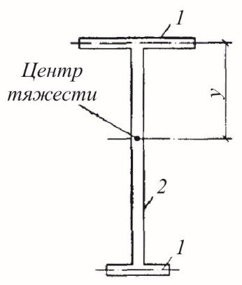
Рисунок 9.2 -Определение усилия в анкере от изгибающего момента в уровне перекрытия
Опирание элементов конструкций на кладку
Рисунок 9.3 -Железобетонные распределительные плиты
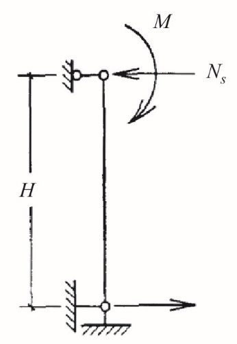
При передаче местных нагрузок на пилястры участок кладки, расположенный в пределах 1 м ниже распределительной плиты, следует армировать через три ряда кладки сетками, указанными в настоящем пункте. Сетки должны соединять опорные участки пилястр с основной частью стены и заделываться в стену на глубину не менее 120 мм.
Расчет узлов опирания элементов на кирпичную кладку
Расчет опорного узла при центральном сжатии следует проводить по формуле
где g -коэффициент, зависящий от величины площади опирания железобетонных элементов в узле;
- р -коэффициент, зависящий от типа пустот в железобетонном элементе;
- R -расчетное сопротивление кладки сжатию;
- А -суммарная площадь сечения кладки и железобетонных элементов в опорном узле в пределах контура стены или столба, на которые уложены элементы.
Коэффициент g при опирании всех видов железобетонных элементов (прогонов, балок, перемычек, поясов, настилов) принимается:
где А b -суммарная площадь опирания железобетонных элементов в узле.
При промежуточных значениях А b коэффициент g определяется интерполяцией.
Если железобетонные элементы (балки, настилы и др.), опертые на кладку с различных сторон, одинаковой высоты и площадь их опирания в узле А b > 0,8 А , разрешается проводить расчет без учета коэффициента g , принимая в формуле (9.14) А = А b .
Коэффициент р принимается равным: при сплошных элементах и настилах с круглыми пустотами -1 ,0 ; при настилах с овальными пустотами и наличии хомутов на опорных участках -0,5.
где Rb -расчетное сопротивление бетона осевому сжатию, принимается в соответствии с СП 63.13330;
- Ап -площадь горизонтального сечения настила, ослабленная пустотами, на длине опирания настила на кладку (суммарная площадь сечения ребер);
R -расчетное сопротивление кладки сжатию;
Ak -площадь сечения кладки в пределах опорного узла (без учета части сечения, занимаемой участками настилов);
- n =1,25 -для тяжелых бетонов и n = 1,1 для бетонов на пористых заполнителях.
где Q -расчетная нагрузка от веса балки и приложенных к ней нагрузок;
Rc -расчетное сопротивление кладки при смятии; а -глубина заделки балки в кладку; b -ширина полок балки; е 0 -эксцентриситет расчетной силы относительно середины заделки
с -расстояние силы Q от плоскости стены.
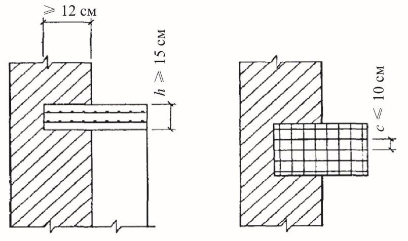
а -без распределительных подкладок; б -с распределительными подкладками
Рисунок 9.4 -Расчетные схемы заделки консольных балок
Необходимую глубину заделки следует определять по формуле
Если заделка конца балки не удовлетворяет расчету по формуле (9.16), то следует увеличивать глубину заделки или укладывать распределительные подкладки под балкой и над ней.
Если эксцентриситет нагрузки относительно центра площади заделки превышает более чем в 2 раза глубину заделки ( е 0 > 2 а ), напряжения от сжатия могут не учитываться: расчет в этом случае проводится по формуле
При применении распределительных подкладок в виде узких балок шириной не более 1/3 глубины заделки допускается принимать под ними прямоугольную эпюру напряжений (рисунок 9.4, б ).
Перемычки и висячие стены
Примечания
1 Допускается, при наличии соответствующих конструктивных мероприятий (выступы в сборных перемычках, выпуски арматуры и т.п.), учитывать совместную работу кладки с перемычкой.
- 2 Нагрузки на перемычки от балок и настилов перекрытий не учитываются, если они расположены выше квадрата кладки со стороной, равной пролету перемычки, а при оттаивающей кладке, выполненной способом замораживания, -выше прямоугольника кладки с высотой, равной удвоенному пролету перемычки в свету. При оттаивании кладки перемычки допускается усиливать постановкой временных стоек на клиньях на период оттаивания и первоначального твердения кладки.
- 3 В вертикальных швах между брусковыми перемычками, в случаях когда не обеспечивается требуемое сопротивление их теплопередаче, следует предусматривать укладку утеплителя.
где Е b -начальный модуль упругости бетона;
I red -момент инерции приведенного сечения рандбалки, принимаемый в соответствии с СП 63.13330 ;
Е -модуль деформации кладки, определяемый по формуле (6.7); h -толщина висячей стены.
Жесткость стальных рандбалок определяется как произведение
где Es и I s -модуль упругости стали и момент инерции сечения рандбалки.
при трапециевидной эпюре давления (3 s > а > 2 s )
где а -длина опоры (ширина простенка);
N -опорная реакция рандбалки от нагрузок, расположенных в пределах ее пролета и длины опоры, за вычетом собственного веса рандбалки; s = 1,57 H 0 -длина участка эпюры распределения давления в каждую сторону от грани опоры; h -толщина стены.
Если а > 3 s , то в формуле (9.21) вместо а следует принимать расчетную длину опоры, равную a 1 = 3 s , состоящую из двух участков длиной по 1,5 s с каждой стороны простенка (рисунок 9.5, в ). а -на средних опорах неразрезных балок при а ≤ 2 s ; б -то же, при 3 s ≥ а > 2 s ; в -то же, при а > 3 s ; г -на крайних опорах неразрезных балок и на опорах однопролетных рандбалок
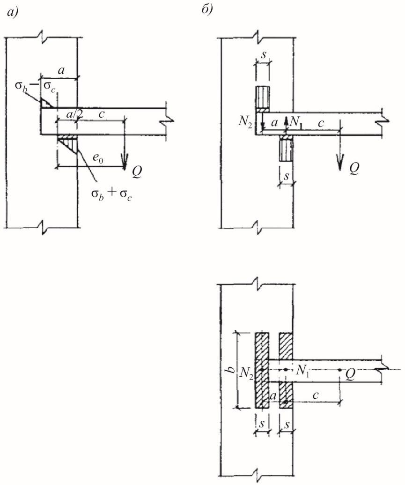
Рисунок 9.5 -Распределение давления в кладке над опорами висячих стен
где s 1 = 0,9 Н 0 -длина участка распределения давления от грани опоры; а 1 -длина опорного участка рандбалки, но не более 1,5 H ( H -высота рандбалки).
Максимальное напряжение над опорой рандбалки
Расчет на местное сжатие кладки под опорами неразрезных рандбалок следует выполнять для участка, расположенного в пределах опоры длиной не более 3 H от ее края ( H -высота рандбалки) и длиной не более 1,5 H для однопролетных рандбалок и крайних опор неразрезных рандбалок.
Если рассчитываемое сечение расположено на высоте H 1 над верхней гранью рандбалки, то при определении длины участков s и s 1 следует принимать высоту пояса кладки H 01 = H 0 + H 1 .
Расчетную площадь сечения А при расчете висячих стен на местное сжатие следует принимать: в зоне, расположенной над промежуточными опорами неразрезных рандбалок, как для кладки, загруженной местной нагрузкой в средней части сечения; в зоне над опорами однопролетных рандбалок или крайними опорами неразрезных рандбалок, а также при расчете кладки под опорами рандбалок как для кладки, загруженной на краю сечения.
- а) на нагрузки, действующие в период возведения стен. При кладке стен из кирпича, керамических камней или обыкновенных бетонных камней должна приниматься нагрузка от собственного веса неотвердевшей кладки высотой, равной 1/3 пролета для кладки в летних условиях и целому пролету -для кладки в зимних условиях (в стадии оттаивания при выполнении кладки способом замораживания, см. 10.1).
Рисунок 9.6 -Эпюра распределения давления в кладке висячих стен при наличии проема
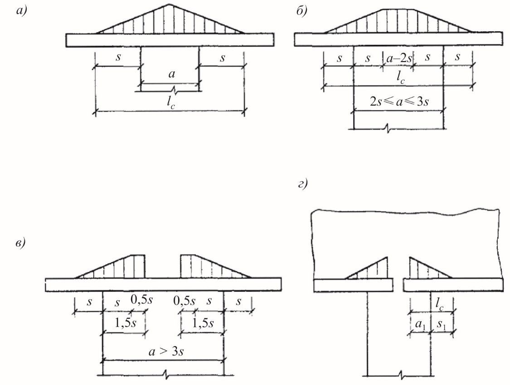
При кладке стен из крупных блоков (бетонных или кирпичных) высоту пояса кладки, на нагрузку от которого должны быть рассчитаны рандбалки, следует принимать равной 1/2 пролета, но не менее высоты одного ряда блоков. При наличии проемов и высоте пояса кладки от верха рандбалок до подоконников менее 1/3 пролета следует учитывать также вес кладки стен до верхней грани железобетонных или стальных перемычек (рисунок 9.7). При рядовых, клинчатых и арочных перемычках должен учитываться вес кладки стен до отметки, превышающей отметку верха проема на 1/3 его ширины;
- б) на нагрузки, действующие в законченном здании. Эти нагрузки следует определять исходя из приведенных выше эпюр давлений, передающихся на балки от опор и поддерживаемых балками стен.
Количество и расположение арматуры в балках устанавливают по максимальным значениям изгибающих моментов и поперечных сил, определенных по двум указанным выше случаям расчета.
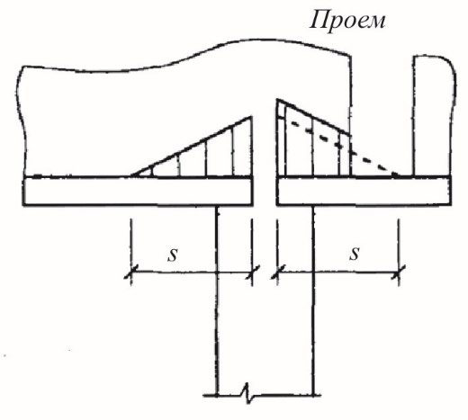
1 -нагрузка на рандбалку; 2 -железобетонная перемычка
Рисунок 9.7 -Схема нагрузки на рандбалку при наличии проема в стене
Карнизы и парапеты
- для незаконченного здания, когда отсутствуют крыша и чердачное перекрытие;
- для законченного здания.
- расчетная нагрузка от собственного веса карниза и опалубки (для монолитных железобетонных и армированных каменных карнизов), если она поддерживается консолями или подкосами, укрепленными в кладке;
- временная расчетная нагрузка по краю карниза 100 кг на 1 м карниза или на один элемент сборного карниза, если его длина менее 1 м;
- нормативная ветровая нагрузка на внутреннюю сторону стены.
Примечания
- 1 Если по проекту концы анкеров, обеспечивающих устойчивость карниза, заделываются под чердачным перекрытием, то при расчете должно учитываться наличие чердачного перекрытия (полностью или частично).
- 2 Расчетом должна быть также проверена устойчивость карниза при неотвердевшей кладке.
СП 15.13330.2020
- а) вес всех элементов здания, как создающих опрокидывающий момент относительно наружной грани стены, так и повышающих устойчивость стены, при этом вес крыши принимается уменьшенным на величину отсоса от ветровой нагрузки;
- б) расчетная нагрузка на край карниза 150 кг на 1 м или на один элемент сборного карниза длиной менее 1 м;
- в) половина расчетной ветровой нагрузки.
Примечание -Снеговая нагрузка при расчете карнизов не учитывается.
Устройство кирпичных карнизов в трехслойных стенах, образованных напуском рядов, не допускается.
Расстояние между анкерами должно быть не более 2 м, если концы анкеров закрепляются отдельными шайбами. При закреплении концов анкеров за балку или за концы прогонов расстояние между анкерами может быть увеличено до 4 м. Заделка анкеров должна располагаться не менее чем на 150 мм ниже того сечения, где они требуются по расчету.
При железобетонных чердачных перекрытиях концы анкеров следует заделывать под ними.
При сборных карнизах из железобетонных элементов в процессе возведения должна быть обеспечена устойчивость каждого элемента.
При кладке на растворах марки 10 и ниже анкеры должны закладываться в борозды с последующей заделкой их бетоном.
где М -наибольший изгибающий момент от расчетных нагрузок; h 0 -расстояние от сжатого края сечения стены до оси анкера (расчетная высота сечения).
Во всех случаях должны быть проверены расчетом все узлы передачи усилий (места заделки анкеров, анкерных балок и т. п.).
Фундаменты и стены подвалов
9. 71 Фундаменты, стены подвалов и цоколи, возводимые из кладочных стеновых материалов, следует проектировать из крупных и мелких бетонных блоков и камней, природных камней правильной и неправильной формы, монолитного бетона и бутобетона, полнотелого керамического кирпича пластического формования. Пустотелый клинкерный кирпич допускается применять во внутренних стенах и перегородках подвалов и для облицовки наружных стен подвалов.
Полнотелые силикатные блоки прочностью 20,0 МПа и более и морозостойкостью F 100 и выше применяются для возведения фундаментов и наружных стен подвалов в зданиях пониженного уровня ответственности при соблюдении следующих требований:
- наличие горизонтальной и вертикальной оклеечной гидроизоляции (не менее двух слоев);
- заполнение раствором вертикальных швов кладки;
- применение теплоизоляции при возведении стен подвалов;
- отсутствие кислых грунтовых вод и агрессивных сульфато -содержащих грунтов и грунтовых вод;
- кладка фундаментов должна выполняться на тяжелых растворах марки М100 и выше.
Требования к морозостойкости силикатных блоков не относятся к кладке утепленных стен подвалов и фундаментов, находящихся ниже уровня промерзания грунта, для которых этот параметр не нормируется.
При расчете стены подвала или фундаментной стены в случае, когда толщина ее меньше толщины стены, расположенной непосредственно над ней, следует учитывать случайный эксцентриситет е = 40 мм, значение этого эксцентриситета должно суммироваться со значением эксцентриситета равнодействующей продольных сил. Толщина стены первого этажа не должна превышать толщину фундаментной стены более чем на 200 мм. Участок стены первого этажа, расположенный непосредственно над обрезом, должен быть армирован сетками (см. 9.40).
9. 72 Переход от одной глубины заложения фундамента к другой следует выполнять уступами. При плотных грунтах отношение высоты уступа к его длине должно быть не более 1 : 1 и высота уступа -не более 1 м. При неплотных грунтах отношение высоты уступа к его длине должно быть не более 1 : 2 и высота уступа -не более 0,6 м.
Уширение бутобетонных и бутовых фундаментов к подошве выполняется уступами. Высота уступа принимается для бутобетона не менее 300 мм, а для бутовой кладки -в два ряда кладки (350 -600 мм). Минимальные отношения высоты уступов к их ширине для бутобетонных и бутовых фундаментов должны быть не менее указанных в таблице 9.6.
Таблица 9.6
| Класс бетона | Марка раствора | Минимальное отношение высоты уступов к их ширине при расчетной нагрузке, МПа (кгс/см² ) | Минимальное отношение высоты уступов к их ширине при расчетной нагрузке, МПа (кгс/см² ) |
|---|---|---|---|
| Класс бетона | Марка раствора | σ ≤ 0,2 (2,0) | σ > 0,25 (2,5) |
| В3,5 - В7,5 | 50 - 100 | 1,25 | 1,5 |
| В1 - В2 | 10 - 25 | 1,5 | 1,75 |
| - | 4 | 1,75 | 2,0 |
| Примечание - Проверка уступов на изгиб и срез не требуется. | Примечание - Проверка уступов на изгиб и срез не требуется. | Примечание - Проверка уступов на изгиб и срез не требуется. | Примечание - Проверка уступов на изгиб и срез не требуется. |
9. 73 В фундаментах и стенах подвалов:
- а) из бутобетона -толщина стен принимается не менее 350 мм и размеры сечения столбов не менее 400 мм;
- б) из бутовой кладки -толщина стен принимается не менее 500 мм и размеры сечения столбов не менее 600 мм.
Для кладки сводов двоякой кривизны следует применять:
- кирпич керамический (полнотелый и пустотелый) или силикатный марки не ниже 75 при пролете сводов до 18 м и не ниже 100 при больших пролетах;
- камни из тяжелого бетона, бетона на пористых заполнителях, автоклавного ячеистого бетона, а также природные камни марки не ниже 50.
Примечание -При пролете сводов до 12 м допускается применение камней марки не ниже 25, при этом толщина сводов должна быть не менее 90 мм.
9. 77 Расчет сводов двоякой кривизны должен проводиться на внецентренное сжатие по условной расчетной схеме как плоских двухшарнирных арок. Рассчитывается одна волна сводчатого покрытия в сечениях с максимальными изгибающими моментами.
Расчетные сопротивления кладки сводов толщиной в 1/4 кирпича должны приниматься по 6.1 с коэффициентом 1,25.
9. 78 Величина эксцентриситета приложения нормальной силы в поперечных сечениях сводов и в верхних частях стен при основных сочетаниях нагрузок должна быть не более 0,7 у, где у -расстояние от оси поперечного сечения свода или стены до края сечения в сторону эксцентриситета. В сводах с затяжками для уменьшения расчетного изгибающего момента от внецентренного расположения затяжек должны устраиваться выносные пяты с внутренней стороны стен.
9. 79 Расчетные изгибающие моменты, вызываемые удлинением затяжек, обжатием свода и смещением пят, следует учитывать только от нагрузок, действующих на свод после его раскружаливания (вес утеплителя, кровли, фонарей, снеговой нагрузки и т. п.).
9. 80 Модуль деформаций кладки сводов E при определении усилий в затяжках следует принимать по формуле (6.7).
Конструктивные требования к армированной кладке
9. 81 Сетчатое армирование горизонтальных швов кладки допускается применять только в случаях, когда повышение марок кирпича, камней и растворов не обеспечивает требуемой прочности кладки и площадь поперечного сечения элемента не может быть увеличена.
Количество сетчатой арматуры, учитываемой в расчете столбов и простенков, должно составлять не менее 0,1 % объема кладки (см. 7.3 1 ).
9. 82 Арматурные сетки следует укладывать не реже чем через пять рядов кирпичной кладки из одинарного керамического полнотелого кирпича, через четыре ряда кладки из утолщенного кирпича и через три ряда кладки из керамических камней.
Длина перехлеста сеток в местах их стыковки должна составлять не менее 150 мм.
9. 83 Диаметр сетчатой арматуры должен быть не менее 3 мм.
Диаметр арматуры в горизонтальных швах кладки должен быть, не более: при пересечении арматуры в швах -6 мм; без пересечения арматуры в швах -8 мм.
Расстояние между поперечными стержнями сетки должно быть не более 120 мм и не менее 30 мм.
Толщина швов кладки армокаменных конструкций должна быть не более 16 мм и превышать диаметр арматуры не менее чем на 4 мм.
Вертикальные деформационные швы в зданиях с однослойными стенами и стенами с облицовкой при жестком соединении слоев
- а) для надземных каменных и крупноблочных стен отапливаемых зданий при длине армированных бетонных и стальных включений (перемычки, балки и т. п.) не более 3,5 м и ширине простенков не менее 0,8 м -по таблице 9.7; при длине включений более 3,5 м участки кладки по концам включений должны проверяться расчетом по прочности и раскрытию трещин;
- б) то же, для стен из бутобетона -по таблице 9.7 как для кладки из бетонных камней на растворах марки 50 с коэффициентом 0,5;
- в) то же, для многослойных стен с жестким соединением слоев -по таблице 9.7 для материала основного конструктивного слоя стен;
- г) для стен неотапливаемых каменных зданий и сооружений для условий, указанных в перечислении а), -по таблице 9.7 с умножением на коэффициенты: для закрытых зданий и сооружений -0,7; для открытых сооружений -0,6;
- д) для каменных и крупноблочных стен подземных сооружений и фундаментов зданий, расположенных в зоне сезонного промерзания грунта, -по таблице 9.7 с увеличением в два раза; для стен, расположенных ниже границы сезонного промерзания грунта, а также в зоне вечной мерзлоты, -без ограничения длины.
Таблица 9.7
| Расстояние между температурными швами, м, при однослойной кладке или при кладке с облицовкой с жестким соединением слоев | Расстояние между температурными швами, м, при однослойной кладке или при кладке с облицовкой с жестким соединением слоев | Расстояние между температурными швами, м, при однослойной кладке или при кладке с облицовкой с жестким соединением слоев | Расстояние между температурными швами, м, при однослойной кладке или при кладке с облицовкой с жестким соединением слоев | |
|---|---|---|---|---|
| Средняя температура наружного воздуха наиболее холодной пятидневки | из керамического кирпича и камней в т. ч. крупноформатных, природных камней, крупных блоков из бетона или керамического кирпича | из керамического кирпича и камней в т. ч. крупноформатных, природных камней, крупных блоков из бетона или керамического кирпича | из силикатного кирпича, бетонных камней, крупных блоков из силикатного бетона и силикатного кирпича | из силикатного кирпича, бетонных камней, крупных блоков из силикатного бетона и силикатного кирпича |
| на растворах марок | на растворах марок | на растворах марок | на растворах марок | |
| 50 и более | 25 и менее | 50 и более | 25 и менее | |
| Минус 40 °С и ниже | 50 | 60 | 35 | 40 |
| » 30 °С | 70 | 90 | 50 | 60 |
| » 20 °С и выше | 100 | 120 | 70 | 80 |
Примечания
- 1 Для промежуточных значений расчетных температур расстояния между температурными швами допускается определять интерполяцией.
- 2 Расстояния между температурно -усадочными швами крупнопанельных зданий из кирпичных панелей назначаются в соответствии с СП 335.1325800. 3. Для стен с облицовкой расстояния между температурными швами принимаются по материалу с наибольшими температурно -влажностными деформациями.
9. 88 Деформационные и осадочные швы следует проектировать со шпунтом или четвертью, заполненными упругими прокладками, исключающими возможность продувания швов.
Горизонтальные деформационные швы в ненесущих наружных стенах
9. 89 Горизонтальные швы в ненесущих стенах устраиваются в уровне низа перекрытий по всей толщине стены во внутреннем и наружном слоях.
Высота швов назначается из условия исключения передачи нагрузки на стену от кладки вышележащего этажа и перекрытия и должна быть не менее 30 мм.
Плиты перекрытий и их консольные выступы должны рассчитываться на дополнительную нагрузку от опирания стен.
Указания по устройству горизонтальных деформационных швов приведены в 9.37 и СП 327.1325800.
Горизонтальные деформационные швы в несущих и самонесущих наружных стенах
9. 90 В несущих и самонесущих двухслойных и трехслойных стенах с гибкими связями, двухслойных стенах при жестком соединении слоев в случае, если не выполняется условие по обеспечению совместной работы слоев при расчете на центральное и внецентренное сжатие по 7.23, следует выполнять поэтажные деформационные горизонтальные швы в лицевом слое кладки.
9. 91 Требования по устройству горизонтального деформационного шва аналогичны приведенным в 9.8 9 .
Опирание лицевого слоя в этом случае проводится на торец плиты перекрытия, защемленную в основном слое железобетонную балку или стальные кронштейны.
При расчете на центральное и внецентренное сжатие по формулам (7.1) и (7.4) работа лицевого слоя в этом случае не учитывается.
Вертикальные деформационные швы в лицевом слое кладки трехслойных наружных стен
9. 92 Расстояния между вертикальными деформационными швами в лицевом слое трехслойных стен с горизонтальными деформационными швами с конструктивным армированием назначаются в соответствии с таблицей 9.8.
Таблица 9.8
| Изменение температур Δ t с , °С, | Максимальное значение расстояния между вертикальными деформационными швами в лицевом (наружном) слое кладки наружных стен, м | Максимальное значение расстояния между вертикальными деформационными швами в лицевом (наружном) слое кладки наружных стен, м | Максимальное значение расстояния между вертикальными деформационными швами в лицевом (наружном) слое кладки наружных стен, м | Максимальное значение расстояния между вертикальными деформационными швами в лицевом (наружном) слое кладки наружных стен, м |
|---|---|---|---|---|
| по СП 20.13330 | Форма участка стены из керамического кирпича, керамических и природных камней | Форма участка стены из керамического кирпича, керамических и природных камней | Форма участка стены из силикатного кирпича, бетонных, ячеистобетонных камней | Форма участка стены из силикатного кирпича, бетонных, ячеистобетонных камней |
| Прямолинейная | L - образная | Прямолинейная | L - образная | |
| 80 | 6,0 | 3,0 | 4,0 | 2,0 |
| 60 | 7,0 | 3,5 | 4,6 | 2,3 |
| 40 | 8,0 | 4,0 | 5,4 | 2,7 |
Примечания:
- 1 Расстояния между вертикальными деформационными швами назначены для случая конструктивного армирования кладки и установки гибких связей и угловых связевых сеток согласно 9.3 9 и 9.40 и расстояния между горизонтальными деформационными швами не более 3,5 м.
- 2 В случае дополнительного армирования кладки расстояния между вертикальными швами назначаются по результатам расчета в соответствии с СП 327132.5800.
- 3 Расстояния между вертикальными швами приведены в настоящей таблице для лицевого слоя толщиной 12 см. При толщине лицевого слоя 19 -25 см эти значения принимаются с коэффициентом 1,5, при толщине более 25 см -по таблице 9.7.
При толщине лицевого слоя менее 12 см (но не менее 8,5 см) расстояние между деформационными швами определяется по результатам специальных расчетов.
- 4 Изменение температуры Δ t с определяют в соответствии с СП 327.132580 с коэффициентом надежности по нагрузке γ f = 1 ,0 при допущении трещин с шириной раскрытия до 0,5 мм в местах концентрации напряжений. В остальных случаях принимается γ f =1,1 и приведенные в таблице значения умножают на коэффициент условий работы γ cr = 0,8.
Для оптимизации расхода арматуры на армирование кладки лицевого слоя, устройства гибких связей, мест расположения и расстояний между вертикальными деформационными швами, назначение последних возможно провести на основании расчетов стен на температурно -влажностные воздействия в соответствии с СП 327.132580.
Независимо от результатов расчетов при назначении мест расположения вертикальных температурных швов следует придерживаться изложенных ниже правил: рекомендуется разбивка вертикальными деформационными швами ломаных в плане стеновых конструкций на линейные фрагменты; не рекомендуются Z -образные в плане фрагменты, особенно при длине средней стены менее 2 м; швы предпочтительно располагать на углах, в местах пересечений стен, перепадах высот, вблизи проемов; при разбивке Z -образных в плане фрагментов деформационный шов рекомендуется назначать в наиболее длинной стене в месте пересечения со средней стеной фрагмента; вертикальные швы рекомендуется выполнять в остекленных лоджиях и балконах по границам оконных и дверных проемов; толщину шва следует принимать не менее 10 мм, в заполнении шва следует предусматривать упругие прокладки и атмосферостойкие мастики.
10Указания по проектированию конструкций, возводимых в зимнее время
Таблица 10.1
| Коэффициенты условий работы | Коэффициенты условий работы | |
|---|---|---|
| Вид напряженного состояния зимней кладки | кладки γ с 1 | сетчатой арматуры γ cs 1 |
| 1 Сжатие отвердевшей (после оттаивания) кладки из кирпича | 1,0 | - |
| 2 То же, бутовой кладки из постелистого камня | 0,8 | - |
| 3 Растяжение, изгиб, срез отвердевшей кладки всех видов по растворным швам | 0,5 | - |
| 4 Сжатие кладки с сетчатым армированием, возводимой способом замораживания в стадии оттаивания | - | 0,5 |
| 5 То же, отвердевшей (после оттаивания) | - | 0,7 |
| 6 » , возводимой на растворах с противоморозными добавками при твердении на морозе и прочности раствора не менее 1,5 МПа (15 кгс/см² ) в момент оттаивания | - | 1,0 |
При расчете в стадии оттаивания должно учитываться влияние пониженного сцепления раствора с камнем и арматурой введением в расчетные формулы дополнительных коэффициентов условий работы γ с 1 и γ cs 1 , приведенных в таблице 10.1.
Отогревание конструкций допускается только после проверки расчетом их достаточной несущей способности в период искусственного оттаивания кладки.
- а) из бутобетона и рваного бута; б) подвергающихся в стадии оттаивания вибрации или значительным динамическим нагрузкам;
- в) подвергающихся в стадии оттаивания поперечным нагрузкам, величина которых превышает 10 % продольных; г) с эксцентриситетами в стадии оттаивания, превышающими 0,25 y для конструкций, не имеющих верхней опоры, и 0,7 у при наличии верхней опоры; д) с отношением высот стен (столбов) к их толщинам, превышающим в стадии оттаивания значения β , установленные для кладок IV группы (см. 9. 21 -9. 23 ).
Для конструкций, не имеющих верхней опоры (см. 9.24), предельные отношения следует уменьшать в два раза и принимать не более β = 6. В случаях превышения предельно допускаемой гибкости, конструкции при их возведении следует усиливать временными креплениями, обеспечивающими их устойчивость в период оттаивания.
10. 11 При проектировании каменных стен с облицовками из плит, устанавливаемых одновременно с кладкой в зимних условиях, необходимо учитывать различную деформативность облицовочных слоев и кладки стен и в проекте указывать мероприятия, исключающие возможность образования трещин и отслоений облицовки от основной кладки стен.
10. 12 В рабочих чертежах зданий или сооружений, каменные конструкции которых будут возводиться способом замораживания, дополнительно к мероприятиям, приведенным в 10.4, необходимо указывать:
- предельные высоты стен, которые могут быть допущены в период оттаивания раствора;
- в необходимых случаях, временные крепления конструкций, устанавливаемые до возведения вышележащих этажей, на период их оттаивания и твердения раствора кладки.
АПриложение А. Основные буквенные обозначения величин
- As -
- площадь сечения арматуры;
- А k -площадь сечения кладки;
- А -
- расчетная площадь сечения элемента; площадь сечения полки (участка продольной учитываемого в расчете);
- стены, поперечное сечение перемычки;
- суммарная площадь сечения кладки и железобетонных элементов в опорном узле в пределах контура стены или
- столба, на которые уложены элементы;
- Ас -площадь сжатой части сечения при прямоугольной эпюре напряжений; площадь смятия, на которую передается нагрузка;
- Ап -расчетная площадь сечения нетто; площадь нетто горизонтального сечения стены; площадь горизонтального сечения настила, ослабленная пустотами, на длине опирания настила на кладку (суммарная площадь сечения ребер);
- Ared -площадь приведенного сечения;
- Ас, red -площадь сжатой части приведенного сечения;
- А b -площадь брутто горизонтального сечения стены; суммарная площадь опирания железобетонных элементов в узле;
- Е 0 -модуль упругости (начальный модуль кладки;
- Е -
- Е -
- модуль деформаций кладки;
- b начальный модуль упругости бетона;
- Es -модуль упругости стали;
- G -
- модуль сдвига кладки;
- Н -расстояние между перекрытиями или другими горизонтальными опорами; высота этажа;
- H 1 -высота верхнего участка стены;
- расстояние над верхней гранью рандбалки;
- Н 0 -высота эквивалентного по жесткости рандбалке условного пояса кладки;
- I -момент инерции сечения стен относительно оси, проходящей через центр тяжести сечения стен в плане;
- I s -момент инерции сечения стальной рандбалки;
- деформаций)
- L -размер сечения элементов при расчете на смятие;
- М -расчетный изгибающий момент; наибольший изгибающий момент от расчетных нагрузок; момент от нормативных нагрузок, который будет приложен после нанесения на поверхность кладки штукатурных или плиточных покрытий; изгибающий момент от расчетных нагрузок в уровне перекрытия или покрытия в местах опирания их на стену на ширине, равной расстоянию между анкерами; расчетная продольная сила; расчетная осевая сила при растяжении; продольная сила от нормативных нагрузок, которая будет приложена после нанесения на поверхность кладки штукатурных или плиточных покрытий; расчетная нормальная сила в уровне расположения анкера на ширине, равной расстоянию между анкерами; опорная реакция рандбалки от нагрузок, расположенных в вычетом
N - пределах ее пролета и длины опоры, за собственного веса рандбалки;
- Ng -расчетная продольная сила от длительных нагрузок;
Nc -продольная сжимающая сила от местных нагрузок;
Ncc -расчетная несущая способность;
Ns -расчетное усилие в анкере;
- Nt -несущая способность неармированной кладки на растяжение;
Nt , a -прочность узла анкеровки связи;
Nt , s -прочность на растяжение гибких связей;
- Nt , sh -суммарная прочность на растяжение продольных стержней Г -образных связевых сеток высотой на один этаж;
- Q -расчетная поперечная сила; расчетная поперечная сила от горизонтальной нагрузки в середине высоты этажа; расчетная поперечная сила от горизонтальной нагрузки, воспринимаемая поперечной стеной в уровне перекрытия, примыкающего к рассматриваемым перемычкам; расчетная нагрузка от веса балки и приложенных к ней нагрузок;
R -расчетное сопротивление сжатию кладки;
- Rk -расчетное сопротивление сжатию виброкирпичной кладки на тяжелых растворах;
- Rtb -расчетное сопротивление растяжению при изгибе кладки;
- Rtw -расчетное сопротивление кладки главным растягивающим напряжениям;
- Rsq -расчетное сопротивление при срезе кладки;
- Rs -расчетное сопротивление арматуры;
- Ru -временное сопротивление (средний предел прочности) сжатию кладки;
- Rsku -временное сопротивление (средний предел прочности) сжатию армированной кладки из кирпича или камней;
- Rsn -нормативное сопротивление арматуры в армированной кладке;
- Rc -расчетное сопротивление кладки при смятии;
- Ri -расчетное сопротивление любого другого слоя стены;
- Rsk -расчетное сопротивление кладки с сетчатым армированием при осевом, центральном сжатии;
- R 1 -расчетное сопротивление сжатию неармированной кладки в рассматриваемый срок твердения раствора;
- R 25 -расчетное сопротивление кладки при растворе марки 25;
- Rskb -расчетное сопротивление армированной кладки при внецентренном c жатии;
- Rstq -расчетное сопротивление скалыванию кладки, армированной продольной арматурой в горизонтальных швах;
- Rb -расчетное сопротивление бетона осевому сжатию;
- Rt -расчетное сопротивление кладки растяжению по перевязанному сечению;
- S 0 -статический момент части сечения, находящейся по одну сторону от оси, проходящей через центр тяжести сечения;
- S -длина участка эпюры распределения давления в каждую сторону от грани опоры;
- S 1 -длина участка распределения треугольной эпюры давления над крайними опорными рандбалками, а также над опорами однопролетных рандбалок от грани опоры;
- Т -сдвигающее усилие в пределах одного этажа;
- Vs -объем арматуры;
- Vk -объем кладки;
- W -момент сопротивления сечения кладки при упругой ее работе;
- a , b , с , с 1 , h -геометрические размеры сечения элементов при расчете на смятие (местном сжатии) в соответствии со схемами рисунка 7.6 ;
- а -глубина заделки балки в кладку; длина опоры (ширина простенка);
- а 1 -длина опорного участка рандбалки;
- b -ширина сжатой полки или толщина стенки таврового сечения в зависимости от направления эксцентриситета; фактическая ширина слоя при расчете многослойных стен; ширина сечения элемента; ширина полок балки; b с -ширина балки;
- bred -приведенная ширина слоя;
- с -размер квадратной ячейки сетки; расстояние от точки приложения силы Q до плоскости стены;
- cb ,с h -расстояния от точки приложения силы Q до ближайших границ прямоугольного сечения элемента;
- е 0 -эксцентриситет действия расчетной нагрузки; эксцентриситет расчетной силы относительно середины заделки;
E 0 g эксцентриситет действия длительных нагрузок;
- eb , eh -эксцентриситеты при косом внецентренном сжатии прямоугольного сечения элемента соответственно сторонам;
- g -коэффициент, зависящий от величины площади опирания железобетонных элементов в узле;
- h -меньший размер прямоугольного сечения: меньшая сторона прямоугольного сечения столба: толщина стены; высота сечения; толщина поперечной стены; высота перемычки в свету;
- hc 1 , hc 2 -высоты сжатой части элементов в сечениях с максимальными изгибающими моментами; hred -условная толщина стен, столбов сложного сечения;
- h 0 -расстояние от сжатого края сечения стены до оси анкера (расчетная высота сечения);
- hc -высота сжатой части поперечного сечения Ас в плоскости действия изгибающего момента;
- i -наименьший радиус инерции сечения элемента; радиус инерции стен, столбов сложного сечения;
- i c -радиус инерции сжатой части поперечного сечения Ас в
- плоскости действия изгибающего момента;
- i b , i h -радиусы инерции при косом внецентренном сжатии прямоугольного сечения элемента соответственно сторонам;
- i c 1 , i c 2 -радиусы инерции сжатой части элементов в сечениях с максимальными изгибающими моментами;
- k -коэффициент, принимаемый по таблице 6.15 ; поправочные коэффициенты;
- k р -коэффициент для столбов;
- l 0 -расчетная высота (длина) стен и столбов;
- l 01 -расчетная высота верхнего участка стены;
- l -длина поперечной стены в плане; пролет перемычки в свету; свободная длина стены;
- 1 c -основание треугольной эпюры распределения над крайними опорами рандбалок, а также над опорами однопролетных рандбалок;
- т -коэффициент использования прочности слоя, к которому приводится сечение при расчете многослойной стены;
- mg -коэффициент, учитывающий влияние длительного воздействия нагрузки;
- mi -коэффициент использования прочности любого другого слоя стены;
- п -эмпирический коэффициент, используемый при расчете на срез;
- р -коэффициент, зависящий от типа пустот в железобетонном элементе;
- р 1 -коэффициент, зависящий от пустотности кирпича (камня) при определении расчетного сопротивления армированной кладки;
- s -расстояние между сетками по высоте;
- ν -коэффициент неравномерности касательных напряжений в сечении;
- у -расстояние от центра тяжести сечения элемента в сторону эксцентриситета до сжатого его края; расстояние от оси продольной стены до оси, проходящей
- через центр тяжести сечения стен в плане;
- yb , yh -расстояния от центра тяжести элемента прямоугольного сечения до его края в сторону эксцентриситета, соответственно сторонам, при косом внецентренном сжатии;
- z -плечо внутренней пары сил.
- α -упругая характеристика кладки;
- α red -приведенная упругая характеристика кладки;
- α sk -упругая характеристика кладки с сетчатым армированием;
- α t -коэффициент линейного расширения кладки;
- α 1 , α 2 -упругие характеристики слоев кладки в многослойной стене и соответственно их толщины;
- β -отношение высоты этажа к толщине стены или меньшей стороне прямоугольного сечения столба;
- γ с -коэффициент условий работы кладки; γ с 1 -коэффициент условий работы для зимней кладки; коэффициент условий работы кладки в стадии оттаивания; γ с s -коэффициент условий работы арматуры;
- γ -плотность;
- γ r -коэффициент условий работы кладки при расчете по раскрытию трещин;
- γ с s 1 -коэффициент условий работы сетчатой арматуры при расчете кладки в стадии оттаивания;
- ε -относительная деформация кладки;
- ε и -предельная относительная деформация;
- η -коэффициент, принимаемый по таблице 7.3 ;
- λ h , λ i -гибкость элементов соответственно прямоугольного сечения и сечения произвольной формы;
- λ h 1 c , λ h 2 c -гибкости сжатой части элементов в сечениях с максимальными изгибающими моментами;
- µ -процент армирования сетчатой арматурой кладки по объему; процент армирования по вертикальному сечению стены;
- µ тр -коэффициент трения;
- ν -коэффициент, учитывающий влияние ползучести кладки;
- ξ 1 -коэффициент, зависящий от материала кладки и места приложения нагрузки, определяется по таблицам 7.4 и 7.5 ;
- σ -напряжение в кладке, при котором определяется ε ;
- σ 0 -среднее напряжение сжатия при наименьшей расчетной нагрузке, определяемой с коэффициентом перегрузки 0,9;
- σ с -максимальное напряжение над опорой рандбалки;
- ϕ -коэффициент продольного изгиба;
- ϕ с -коэффициент продольного изгиба сжатой части сечения элемента;
- ϕ 1 -коэффициент продольного изгиба при внецентренном сжатии элемента;
- ψ -коэффициент полноты эпюры давления от местной нагрузки;
- ω -коэффициент, принимаемый по таблице 7.2. где
БПриложение Б. Расчет стен зданий с жесткой конструктивной схемой
Б.1 Стены и столбы, имеющие в плоскостях междуэтажных перекрытий жесткие опоры, рассчитываются согласно указаниям 9.14 -9.18. Эпюры изгибающих моментов при расчете стен как неразрезных балок с шарнирными опорами приведены на рисунке Б.1, а . В запас прочности допускается выполнять расчет стен, как однопролетных балок Б.1, б . Величины эксцентриситетов, возникающих в стенах при действии вертикальных и горизонтальных (ветровых) нагрузок относительно оси, проходящей через центр тяжести сечения стены, определяются по формуле
М -изгибающий момент в сечении;
N -нормальная сила от вертикальной нагрузки.
Изгибающие моменты в стенах учитываются от нагрузок, приложенных в пределах рассматриваемого этажа, т. е. от перекрытия над этим этажом, балконов и т. п., а также от ветровой нагрузки. Моменты от нагрузок вышележащих этажей учитываются, если сечение стены изменяется в уровне перекрытия над этим этажом. При изменении сечения стены в пределах рассчитываемого этажа следует учитывать момент, вызванный смещением оси стены.
При отсутствии специальных опор, фиксирующих положение опорного давления, допускается принимать расстояние от точки приложения опорной реакции прогонов, балок или настила до внутренней грани стены или опорной плиты равным одной трети глубины заделки, но не более 7 см.
Изгибающие моменты от ветровой нагрузки следует определять в пределах каждого этажа как для балки с заделанными концами, за исключением верхнего этажа, в котором верхняя опора принимается шарнирной.
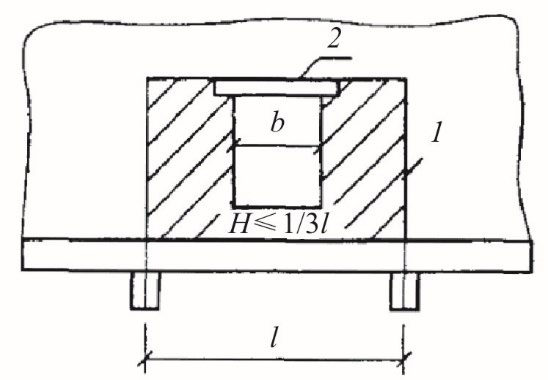
а -стена рассчитывается как неразрезная балка; б -стена рассчитывается в пределах каждого этажа как однопролетная балка
Рисунок Б.1 -Расчетные схемы и эпюры изгибающих моментов от вертикальных внецентренно приложенных нагрузок
Б.2 При расчете стен здания на ветровые нагрузки, направленные параллельно стенам, проводится распределение ветровой нагрузки между поперечными или продольными стенами, расположенными в направлении действия нагрузки.
- Б.3 Если стены взаимно перпендикулярного направления соединены перевязкой или другими достаточно жесткими и прочными связями, то следует учитывать совместную работу рассчитываемой стены и участков примыкающих к ней стен.
- Б.4 Поперечные стены, воспринимающие действующие в их плоскости горизонтальные (ветровые) нагрузки, должны быть рассчитаны на главные растягивающие напряжения по 9.16, 9. 17 . Если прочность поперечных стен с проемами обеспечивается только с учетом жесткости перемычек, то перемычки должны быть рассчитаны на возникающие в них перерезывающие силы.
Расчет стен зданий с упругой конструктивной схемой
Б.5 К зданиям с упругой конструктивной схемой относятся здания, в которых расстояния между поперечными стенами или другими жесткими опорами для перекрытий и покрытий превышают указанные в таблице 9.2. Независимо от расстояния между поперечными конструкциями к упругим опорам относятся покрытия из легких конструкций, опирающихся на металлические или железобетонные фермы, прогоны, балки.
Б.6 При упругих опорах выполняется расчет рамной системы, стойками которой являются стены и столбы (железобетонные, кирпичные и др.), а ригелями -перекрытия и покрытия, которые рассматриваются как жесткие распорки, шарнирно связанные со стенами. При упругих опорах принимается, что стойки заделаны в грунт в уровне пола здания (при наличии бетонного подстилающего слоя под полы и отмостки). Б.7 При статических расчетах рам жесткость стен или столбов, выполненных из кирпичной или каменной кладки, допускается определять при модуле упругости кладки Е = 0,8 Е 0 и моменте инерции сечения без учета раскрытия швов, а перекрытия и покрытия следует принимать как жесткие ригели (распорки), шарнирно связанные со стенами. Б.8 Если нагрузка от перекрытия или покрытия распределена равномерно по длине стены (например, при покрытии из железобетонного настила), за ширину полки стены с пилястрой может приниматься вся ширина простенка или же, при глухих стенах, -вся длина стены между осями примыкающих к пилястре пролетов. Если нагрузка от перекрытия сосредоточена на отдельных участках (опирание ферм, балок и пр.), при статическом расчете допускается принимать ширину полки тавра согласно следующим указаниям: не более 6 h и ширины стены между проемами (Н -высота стены от уровня заделки, h -толщина стены). При отсутствии пилястр и передаче на стены сосредоточенных нагрузок ширина участка 1/3 H принимается в каждую сторону от края распределительной плиты, установленной под опорами ферм или прогонов. Если толщина стены меньше 0,1 высоты сечения пилястры, то сечение рассматривается как прямоугольное без учета примыкающих участков стены. Б.9 Каждая поперечная рама, состоящая из вертикальных и горизонтальных элементов, расположенных на одной оси, рассчитывается, как правило, независимо от других рам, если нет специальных условий, при которых возможна существенная перегрузка какой -либо рамы при загрузке других пролетов. Расчет проводится на все нагрузки, расположенные между средними осями пролетов здания, примыкающих к рассчитываемой раме. Б.10 До установки перекрытий или покрытий стены и столбы рассчитываются на собственный вес стен, некоторые виды оборудования и другое, как свободно стоящие стойки, заделанные в грунт. На нагрузки, приложенные после устройства перекрытий, стены и столбы рассчитываются как элементы рам. Усилия, вычисленные при этих двух нагрузках, суммируются. стойки и
Опорные реакции в шарнирной верхней опоре каждой определяются последовательно от всех приложенных нагрузок, полученные значения суммируются. где
ВПриложение В. Вертикальные перемещения наружного и внутреннего слоев многослойной кладки
- В.1 Разность вертикальных перемещений слоев верхней точки стены ∆ е , определяемую с момента окончания ее возведения, вычисляют по формуле
∆ е ( N ) -разность вертикальных перемещений слоев стены от вертикальной нагрузки и собственного веса;
∆ е ( sh ) -разность вертикальных перемещений слоев стены от усадки кладки.
- В.2 Для вычисления деформаций кладки каждого из слоев применяют длительный модуль деформаций E дл, равный
η плз -коэффициент для определения деформаций ползучести, развившихся с момента окончания роста нагрузки, вычисляемый по формуле
возраст кладки на момент окончания ее возведения где где t 1 -(сут.); ψ -коэффициент, равный 1 /сут;
C -коэффициент, учитывающий деформационные характеристики, равный:
0,46 -для кладки из керамических камней;
0,7 -для кладки из керамического кирпича пластического прессования;
1,1 -для кладки из силикатного кирпича.
- В.З Деформации усадки ε ( sh ) кладки из силикатного кирпича и ячеистого бетона, развивающиеся во времени, допускается определять по формуле
t -возраст кладки (сут).
ГПриложение Г. Расчет стен многоэтажных зданий из каменной кладки на вертикальную нагрузку по раскрытию трещин при различной загрузке или разной жесткости смежных участков стен
При различии наружных и примыкающих к ним внутренних стен по степени загрузки или выполнении их из различных материалов участки стен, близкие к местам их взаимного примыкания, должны быть рассчитаны по образованию и раскрытию трещин.
При расчете условно принимается, что обе стены (или смежные участки одной и той же стены) не связаны друг с другом, и определяется свободная деформация каждой из двух стен отдельно при действии расчетных длительных нагрузок. Разность свободных деформаций этих стен должна удовлетворять условию
где δ 1 -абсолютная свободная деформация сжатия одной из стен (или участка стены); δ 2 -то же, второй стены; δ u -предельная допустимая разность деформаций, определяемая по таблице Г.1.
Таблица Г. 1
| Число этажей | 5 | 6 | 7 | 8 | 9 | 12 и более |
|---|---|---|---|---|---|---|
| Высота стены Н, м | 15 | 18 | 21 | 24 | 27 | 36 и более |
| δ u , мм | 7 | 8 | 9 | 10 | 12 | 15 |
Предельную допустимую разность деформаций стен допускается увеличивать в 1,5 раза в случае, когда свободная длина несущих стен до пересечения их с внутренними продольными ненесущими стенами или отрезками стен не превышает 7,5 м, и в 1,25 раза -при свободной длине более 7,5 м.
Величины свободных деформаций определяются как сумма деформаций кладки во всех этажах здания от уровня верха фундамента до верха стены по формулам:
где 1 i σ -напряжения в кладке первой свободно стоящей стены i -г o этажа ;
2 i σ -то же, второй стены;
1 i E -модули деформации кладки первой стены i -г o этажа ;
2 i E -то же, второй стены; hi -высота i -г o этажа;
1 sh δ и 2 sh δ -абсолютные деформации усадки первой и второй стены, вычисленные по относительным значениям усадок материалов стен, умноженным на высоту соответствующих участков стен;
- n -число этажей от пола подвала до верхнего или рассматриваемого промежуточного этажа.
Напряжения определяются в середине каждого этажа и вычисляются при расчетных значениях всех длительных нагрузок. Модули упругости Е i вычисляются по формуле
где Riu -средний предел прочности кладки первой или второй стены рассматриваемого этажа;
- α 1 i -характеристика деформаций, которая зависит от материала кладки и учитывает полные деформации кладки (без учета деформаций усадки).
Значение характеристики α , для кладки на растворе марки 25 и выше приведено в таблице Г. 2
Таблица Г. 2
| α 1 для кладки | α 1 для кладки | |
|---|---|---|
| Кладка | летней | зимней после затвердевания |
| Из кирпича: | ||
| керамического пластического прессования | 450 | 300 |
| силикатного и керамического полусухого прессования | 250 | 170 |
| из керамических камней высотой 140 - 220 мм | 650 | 430 |
Примечание -При зимней кладке, выполняемой на растворах с противоморозными химическими добавками, значения характеристики деформаций принимаются такими же, как для летней кладки.
ДПриложение Д. Общие положения по расчету наружных стен на ветровую нагрузку
Д.1 Напряженно -деформированное состояние кладки стен и усилия в гибких связях при действии ветровой нагрузки определяют с учетом совместной работы наружного и внутреннего слоев стены.
Д.2 При расчете по предельным усилиям принимают, что предельное состояние характеризуется достижением предельных усилий в кладке растянутой зоны. При расчете допускается образование трещин длиной не более 15 см на участках концентрации напряжений.
Расчетный изгибающий момент М простенков, не имеющих вертикальных опор, определяют из условия
где Rtb -расчетное сопротивление кладки растяжению при изгибе, учитывающее нелинейную работу кладки, определяемое по таблице 6. 11;
W упр -упругий момент сопротивления поперечного сечения простенка.
В остальных случаях следует соблюдать условие
где σ t -растягивающие напряжения.
Д. 3 При расчете кладки по образованию трещин при изгибе из плоскости по формуле (8.1) следует учитывать возможность концентрации растягивающих напряжений на отдельных участках стен (например, по концам надоконных перемычек, в углах проемов, местах установки связей и др.). В этой связи к полученным значениям краевых напряжений σ t следует вводить коэффициент учета возможной концентрации напряжений, принимаемый при отсутствии данных сравнительных расчетов равным 1,5.
Д.4 В случае невыполнения условий (Д.1) и (Д.2) значения изгибающих моментов, действующих в слоях кладки, могут быть снижены за счет таких конструктивных мероприятий, как увеличение количества гибких связей между слоями, в том числе в виде сеток, рациональное соотношение изгибных жесткостей лицевого и внутреннего слоев и др.
Д.5 Устойчивость простенка против опрокидывания в случае, когда равнодействующая всех сил выходит за пределы ядра сечения, определяют из условия
где M опр -суммарный опрокидывающий момент относительно оси возможного поворота опоры;
M удер -суммарный удерживающий момент относительно оси возможного поворота опоры; m удер -коэффициент условий работы при проверке устойчивости на сдвиг и опрокидывание.
Этот коэффициент принимают равным 0,9 при опирании кладки непосредственно на плиту перекрытия и 0, 8 при опирании на слой гидроизоляции, отлив из жести, металлопластика и т.п.
Д.6 Устойчивость простенка против сдвига определяют из условия
; где n удер -коэффициент надежности при проверке устойчивости
N сдв -соответственно сдвигающие горизонтальные нагрузки и
N удер удерживающие силы.
ЕПриложение Е. Расчет на вертикальную нагрузку каменных и армокаменных конструкций с использованием диаграмм деформирования
- Е.1 Расчет на вертикальную нагрузку кирпичных столбов в общем виде проводят с учетом сдерживания поперечных деформаций силами трения от уложенных по верху столба стальных распределительных пластин.
- Е.2 В качестве рабочих диаграмм деформирования кладки приняты двухлинейные диаграммы для стадий упругой работы и процесса трещинообразования до разрушения (рисунок Е. 1 , а) и определение момента образования трещин (рисунок Е. 1 , б). а -продольные деформации укорочения вдоль вектора сжимающего усилия ; б -поперечные деформации растяжения
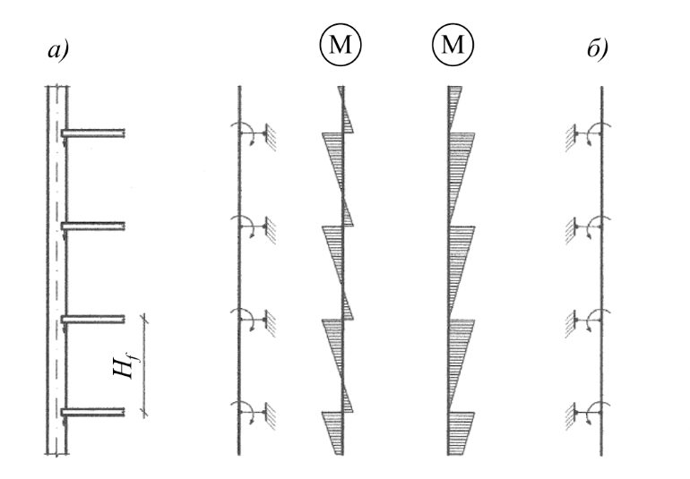
Рисунок Е.1 -Расчетные диаграммы деформирования
- Е.3 Координаты параметрических точек диаграмм определяют по формулам:
- напряжения σ 1 , соответствующие началу трещинобразования:
где k 1 = At /( A -Aef ) -характеристика соотношения площади отрыва и разности площадей поперечного сечения элемента и ядра сжатия;
Rt -расчетное сопротивление кладки растяжению по перевязанному сечению, определяемое по таблице 6.1 1; α sh -угол наклона поверхностей сдвига в приопорных зонах:
Ru -временное сопротивление кладки сжатию, определяемое по формуле (6. 1 );
At -суммарная площадь поверхностей отрыва, определяемая суммой At ,1 , At ,2 :
h 1 , h 2 -высоты сжато -растянутых зон с учетом возможного неравенства сторон поперечного сечения конструкции, h 1 = 2,5 а, h2 = 2,5 b ;
А -площадь поперечного сечения элемента;
Aef -площадь ядра сжатия:
- временное сопротивление кладки сжатию -σ ult :
площади площадей где k2 = A sh /(A -Aef ) -характеристика соотношения поверхностей сдвига и разности поперечного сечения элемента и ядра сжатия;
Ash -площадь поверхности сдвига в приопорной зоне:
Rsh -сопротивление кладки сдвигу, принимаемое в диапазоне (1,5 ÷ 2,5) Rt .
Величины напряжений σ с rc , σ ult являются параметрическими координатами диаграммы деформирования (рисунок Е. 1 , а). Соответствующие им относительные продольные деформации конструкции:
где α -упругая характеристика кладки, принимаемая по таблице 6.16 п. 6.24 ; n 1, n 2 -поправочные коэффициенты, принимаемые по таблице Е.1.
Таблица Е. 1 Значения поправочных коэффициентов
| Поправочный коэффициент | Поправочный коэффициент | ||
|---|---|---|---|
| Группа кладки | Описание | трещинообразование n 1 | разрушение n 2 |
| 1 | Кладки из полнотелых керамических и силикатных кирпичей 1НФ - 1,4НФ | 0,55 | 0,7 |
| 2 | Кладки из пустотных стеновых материалов 1НФ - 2,1НФ | 1,0 | 1,25 |
| 3 | Кладки из крупноформатных керамических, пено - , газо - , керамзитобетонных камней, в том числе пустотных | 1,75 | 1,5 |
Деформации поперечного расширения элемента в уровне средней сжато -растянутой зоны до образования трещин определяют по формуле
Расчет сжатых конструкций из каменных кладок с сетчатым армированием
Е.4 В качестве рабочих диаграмм деформирования кладки с сетчатым армированием, как и для неармированной кладки, приняты двухлинейные диаграммы для стадий упругой работы и процесса трещинообразования до разрушения (рисунок Е. 2 , а) и определение момента образования трещин (рисунок Е. 2 , б).
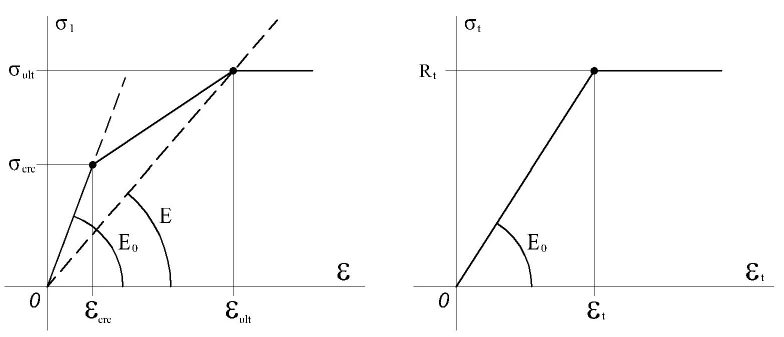
а -продольные деформации укорочения вдоль вектора сжимающего усилия ; б -поперечные деформации растяжения .
Рисунок Е.2 -Расчетные диаграммы деформирования
Е.5 Координаты параметрических точек диаграмм определяются по формулам
- напряжения σ 1 , соответствующие началу трещинобразования:
где k 1 = At /( A -Aef ) -характеристика соотношения площади поверхностей отрыва и разности площадей поперечного сечения элемента и ядра сжатия;
Rt * -приведенное сопротивление кладки растяжению:
где µ = As Σ / At -соотношение площадей сечения растянутой зоны и стержней сеток в пределах ее высоты; α sh -угол наклона поверхностей сдвига в приопорных зонах:
Ru -временное сопротивление кладки сжатию, определяемое по формуле (6. 1 );
At -суммарная площадь поверхностей отрыва, определяемая суммой At ,1 , At , 2
h 1 , h2 -высоты сжато -растянутых зон с учетом возможного не равенства сторон поперечного сечения конструкции, h 1 = 2,5 а , h 2 = 2,5 b ;
А -площадь поперечного сечения элемента;
Aef -площадь ядра сжатия:
- временное сопротивление кладки сжатию при реализации разрушения от разрыва стержней сеток σ ult , 1 : σ ult ,1 = k 1 * R s,n ( ht/S ) ctg α sh * + k2 Rsh * / sin α sh *, (Е.19) где k 1* = As /( A сеч -А ef ) -характеристика соотношения площади сечения стержней сеток в пределах А t и разности площадей поперечного сечения элемента и ядра сжатия; k2 = Ash /( A-Aef ) -характеристика соотношения площади поверхностей сдвига и разности площадей поперечного сечения элемента и ядра сжатия;
Ash -площадь поверхности сдвига в приопорной зоне:
Rsh * -
где
α sh* -угол наклона поверхностей сдвига с учетом обойменных напряжений, создаваемых сетками: где σ об
Вычисление значений σ об проводится из условия, что в предельном состоянии происходит разрыв стержней сеток:
Rs , n -нормативное сопротивление стали стержней сеток. При использовании композитных неметаллических сеток указывается временное сопротивление их материала растяжению;
- А s -площадь сечения стержней сеток в пределах растянутой зоны А t ;
- a , S -размер сечения сжатого элемента и шаг сеток в кладке по высоте.
Проверка условия возможности реализации компрессионного разрушения переармированной кладки
Временное сопротивление материала кладки в условиях трехосного сжатия:
Если σ ult ,1 < σ ult ,2 -компрессионное разрушение не произойдет и изменение параметров армирования не требуется.
Если σ ult ,1 ≥ σ ult ,2 -возможно компрессионное разрушение материала кладки и требуется снижение интенсивности армирования.
Величины напряжений σ с rc , σ ult являются параметрическими координатами диаграммы деформирования (рисунок Е. 2 , а). Соответствующие им относительные продольные деформации конструкции:
где α -упругая характеристика кладки, принимаемая по таблице 6.16 п. 6.24 ; n 1, n 2 -поправочные коэффициенты, принимаемые по таблице Е.2.
Таблица Е. 2 Значения поправочных коэффициентов
| Поправочный коэффициент | Поправочный коэффициент | |
|---|---|---|
| Кирпич | трещинообразование | разрушение n |
| n 1 | 2 | |
| Керамический | 0,7 | 0,7 |
| Силикатный | 0,7 | 1,0 |
Деформации поперечного расширения элемента в уровне средней сжато -растянутой зоны до образования трещин
При наступлении предельного состояния, описываемого (Е.8), сопровождаемого выравниванием эпюры растягивающих напряжений по длине стержней сеток и их разрывом, деформации стали и, соответственно, рассчитываемого элемента в средней зоне, равны:
Для определения значений модуля деформаций стали используются диаграммы, подобные приведенным в СП 63.13330 (рисунок Е.3).
Рисунок Е.3 -Расчетная диаграмма деформирования стали
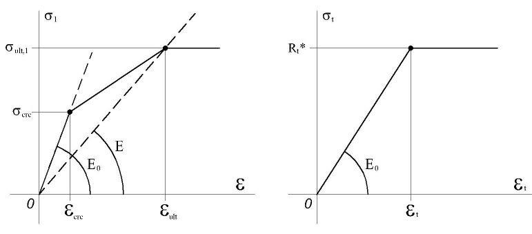
ЖПриложение Ж. Расчет на смятие (местное сжатие)
Ж.1 Расчет сечений при смятии (местном сжатии) следует проводить на нагрузки, приложенные к части площади сечения (при опирании на кладку ферм, балок, прогонов, перемычек, панелей перекрытий, колонн и другое).
Несущая способность кладки при смятии определяется с учетом характера распределения давления по площади смятия.
Расчет на смятие следует проводить с учетом возможного опирания конструктивных элементов (балок, лестничных маршей и др.) в процессе возведения здания на свежую или оттаивающую зимнюю кладку.
Ж. 2 Расчет сечений при смятии проводится по указаниям 7.13 -7.17. Конструктивные требования к участкам кладки, загруженным местными нагрузками, приведены в 9.46 -9.49.
Кроме расчета на смятие опорные узлы должны быть рассчитаны также на центральное сжатие по указаниям 9.50 и 9.51.
Ж.3 При необходимости повышения несущей способности опорного участка кладки при смятии могут применяться следующие конструктивные мероприятия:
- а) сетчатое армирование опорного участка кладки, см. 7.31 и 7.32 ;
- б) опорные распределительные плиты;
- в) распределительные пояса при покрытиях больших пролетов, особенно в зданиях с массовым скоплением людей (кинотеатры, залы клубов, спортзалы и т. п.);
- г) устройство пилястр;
- д) комплексные конструкции (железобетонные элементы, забетонированные в кирпичную или каменную кладку); е) выполнение из полнотелого кирпича верхних 4 -5 рядов кладки в местах опирания элементов на кладку.
Ж.4 При местных краевых нагрузках, превышающих 80 % расчетной несущей способности кладки при смятии, следует под элементом, создающим местную нагрузку, усиливать кладку сетчатым армированием. Сетки должны иметь ячейки размером не более 100 × 100 мм из стержней диаметром не менее 3 мм.
В местах приложения местных нагрузок, в случаях, когда усиление кладки сетчатым армированием является недостаточным, следует предусматривать укладку распределительных плит толщиной, кратной толщине рядов кладки, но не менее 14 см, армированных по расчету двумя сетками с общим количеством арматуры не менее 0,5 % в каждом направлении.
При краевом опорном давлении однопролетных балок, прогонов, ферм и т. п. более 100 кН укладка опорных распределительных плит (или поясов) является обязательной также и в том случае, если это не требуется по расчету. При таких нагрузках толщину распределительных плит следует принимать не менее 22 см.
Ж.5 Расчет кладки на смятие под опорами свободно лежащих изгибаемых элементов (балок, прогонов и т. п.), см. 7 .17, проводится в зависимости от фактической длины опоры а 1 , и полезной длины а 0 , рисунок Ж.1. Эпюра напряжений под концом балки принимается по трапеции (при а 1< а 0 ) или по треугольнику (при а 1 ≥ а 0 ). Допускается также приближенно принимать треугольную эпюру с основанием а 0= а 1 , если длина опорного конца балки меньше ее высоты.
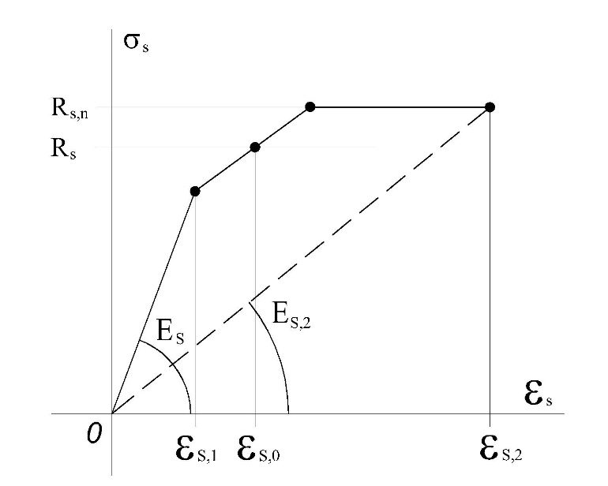
а -эпюра напряжений -трапеция (а 1< а 0 ); б - то же, треугольник (а 1 ≥ а 0 )
Рисунок Ж.1 -Распределение напряжений под концом балки
Полезная длина опоры определяется по формуле
Краевые напряжения при эпюре в виде в виде трапеции:
при эпюре в виде треугольника:
В формулах (Ж.1) -(Ж.6): а 0 -полезная длина опоры;
Q -опорная реакция балки; b -ширина опорного участка балки, плиты настила или распределительной плиты под концом балки; а 1 -длина опоры балки; с -коэффициент постели при смятии кладки под концом балки; α -угол наклона оси балки на опоре.
Коэффициент постели с определяется по формулам: для затвердевшей кладки где
где Ru -временное сопротивление (средний предел прочности) сжатию кладки, определяемое по формуле 6.1; для свежей кладки
где Ru 1 -временное сопротивление сжатию кладки на растворе марки 2.
При определении tg α принимается, что балка опирается на шарнир, расположенный посередине опорного конца. При неразрезных балках промежуточные опоры принимаются расположенными по оси соответствующих столбов или стен.
Для свободно лежащих балок при равномерной нагрузке
где l -пролет балки;
EI -жесткость балки.
В 7.13, формула (7.8) величины коэффициента полноты эпюры давления и площади Ас при эпюре напряжений под концом балки в виде трапеции определяются по формулам: где
При треугольной эпюре напряжений:
Если по расчету несущая способность опорного участка при свежей кладке недостаточна, рекомендуется установка временных стоек, поддерживающих концы балок.
Ж.6 При загружении кладки на смятие в двух направлениях учет ее работы проводится путем перемножения коэффициентов полноты эпюр напряжений, см. 7 .13.
Для нахождения формы распределения величины местных сжимающих напряжений под опорой перемычки в поперечном направлении определяется полезная ширина опоры b 0 из условия равенства нулю суммы моментов относительно середины ширины опорной площадки перемычки. Тангенс угла поворота перемычки вокруг продольной оси определяется из формулы (Ж.1), в которой a 0 заменяется на b 0 , а b на a 1 . Коэффициент полноты эпюры давления от местной нагрузки определяется из отношения объема эпюры давления к объему σ ma xAc .
Ж.7 Расчет кладки на смятие под опорами однопролетных балок или настилов с заделанными опорами проводится по 9.52, при этом величина эксцентриситета е 0 определяется по формуле
М -изгибающий момент в заделке;
Q -опорная реакция балки.
При равномерно распределенной нагрузке на балку или плиту настила изгибающий момент определяется по формуле
Ж.8 При расчете сечений кладки, расположенных под распределительной плитой, нагрузка на плиту от установленной на нее балки (фермы и т. п.) без фиксирующей прокладки принимается в виде сосредоточенной силы, равной опорной реакции опирающегося на плиту элемента. Точка приложения силы принимается на расстоянии l/3 l 1 , но не более 7 см от внутреннего края плиты (рисунок Ж.2, а).
При наличии прокладки, фиксирующей положение опорного давления, расстояние от точки приложения сосредоточенной силы до внутреннего края прокладки определяется по указаниям настоящего пункта, причем в этом случае l 1 -длина прокладки (рисунок Ж.2, б).
Распределительная плита должна быть рассчитана на местное сжатие, изгиб и скалывание при действии местной нагрузки, приложенной сверху, и реактивного давления кладки снизу. При расчете распределительной плиты сосредоточенная сила заменяется нагрузкой, равномерно распределенной по площади смятия, имеющей ширину b опорного участка опирающегося на плиту элемента, и длину, равную 2 ν, где ν -расстояние от внутреннего края плиты или фиксирующей прокладки до оси нагрузки (см. рисунок Ж.2).
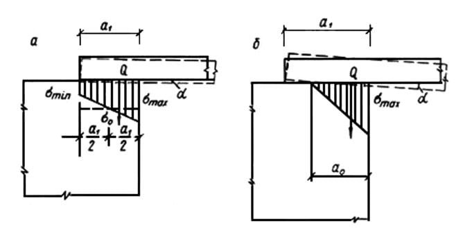
а -опирание балки без фиксирующей прокладки; б -опирание балки с прокладкой
Рисунок Ж.2 -Схема нагрузок и напряжения при расчете опорной плиты
Ж.9 Если нагрузка передается на кладку через распределительные устройства (например, через железобетонную или металлическую плиту), то эти устройства в расчетной схеме заменяются поясом кладки или столбом), имеющим размеры в плане те же, что и распределительные устройства с эквивалентной по жесткости высотой, вычисленной по формуле
где Ер -модуль упругости материала распределительного устройства (для железобетонных распределительных устройств Ер = 0,85 Е b , где Е b -начальный модуль упругости бетона);
I p -момент инерции распределительного устройства;
Е -модуль упругости кладки, принимаемый E =0,5 E 0 ; d -размер распределительного устройства в направлении, перпендикулярном к направлению распределения.
Ж.10 Напряжения в кладке под распределительными устройствами определяются по формулам, приведенным в таблице Ж.1.
В этих формулах s -радиус влияния местной нагрузки, определяемый по формуле
где Н -расстояние от уровня, в котором приложена местная нагрузка, до рассчитываемого сечения.
При расчете сечения под распределительным устройством Н = Н 0 , а в расположенных ниже сечениях Н = Н 0+ Н 1 , где H 1 -расстояние от нижней поверхности распределительного устройства до рассчитываемого сечения.
Ж.11 Если к распределительному устройству приложено несколько сосредоточенных и распределенных местных нагрузок, эпюры напряжений по его подошве могут быть определены как сумма эпюр, соответствующих каждой из этих нагрузок. Распределенные нагрузки могут заменяться несколькими эквивалентными по величине сосредоточенными силами.
Ж.12 Размеры распределительного устройства (или размеры основания конструкции, создающей местную нагрузку) должны выбираться такими, чтобы выполнялось условие
где ξ -определяется по формуле (7.10);
Ru -по формуле 6.1.
Длина распределительной плиты (если она не ограничена размерами сечения кладки) должна быть больше длины опорного конца балки l 1 , установленной на плиту без фиксирующей прокладки (рисунок Ж.3, a ). Для определения необходимой длины распределительной плиты l 1 принимается, что равнодействующая давления от конца балки на плиту приложена непосредственно на торце балки (рисунок Ж.3, б).
Таблица Ж.1
| Схема приложения нагрузки и распределения напряжений | Формулы применимы в сечениях, где | Напряжения σ 0 и σ i |
|---|---|---|
| 1 | 2 2 1 H s a и a π = > | Hd N ,64 0 = σ |
| 2 | a < s | ; + = 2 2 0 ,41 0 1 2 H a ad N σ - = 2 2 0 ,41 0 1 2 H a ad N σ |
| 3 | a 1 < s 2 2 1 a a ≥ | ; ( ) ( ) 1 2 1 0 1 2 1 2 1 2 2 a a a d a a a Na + - + = σ σ ( ) ( ) 2 2 1 0 2 2 1 2 2 2 2 a a a d a a a Na + - + = σ σ + = 2 2 0 0 0 ,41 0 1 2 H a d a N σ ( ) 3 3 4 2 1 0 ) ( a a a + + = |
| 4 | a 1 < s a 2,0 < a 2 2 2 1 a a < | ; ; a 0 =1,125 a 1 ; 2 1 8 a a + = 2 2 0 0 0 ,41 0 1 2 H a d a N σ ( ) 1 0 , 2 1 0 1 1 2 a a a d a N + - = σ σ 1 0 1 0 , 2 4 a d Na a - = σ |
| 5 | a 1 < s a 2 ≥ s 0 , s 0 < a 2 для затвердевшей кладки: u ≥ 12 см> H для свежей или оттаявшей кладки: u ≥ 24 см ≥ 2 H Нагрузка q погашает растягивающие напряжения под плитой 2 2 1 a a < | ; ; a 0 =0,15 s +0,85 a 1 ; s 0 =0,4 a 1 +0,6 s + = 2 2 0 0 0 ,41 0 1 2 H a d a N σ ( ) 1 0 1 0 1 1 2 a s a d a N + - = σ σ |
СП 15.13330.2020
Продолжение таблицы Ж.1
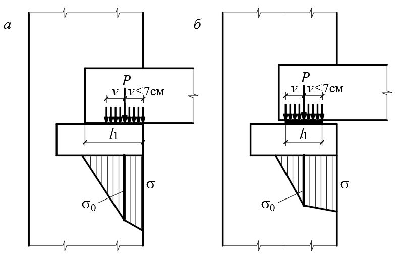
Этим учитывается возможность, например, неравномерной осадки опор. С учетом места расположения равнодействующей этого давления по формулам, приведенным в таблице Ж.1, определяется эпюра давления от распределительной плиты на кладку. При этом величина ординаты эпюры давления σ 1 (рисунок Ж.3, б) на краю распределительной плиты, примыкающей к незагруженной части кладки, не должна превышать расчетного сопротивления кладки сжатию R . Если по конструктивным соображениям длина опорной плиты не может быть увеличена, то необходимо увеличить ее ширину. а -нагрузка и напряжения при расчете кладки на местное сжатие под опорной плитой ; б -нагрузка и напряжения при определении длины опорной плиты
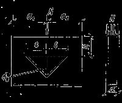
Рисунок Ж.3 -Расчетная схема узла опирания балки на кладку
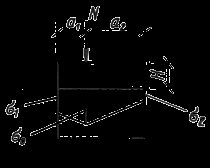
а -при отсутствии распределительной плиты; б -при установке распределительной плиты; 1 -распределительная плита; 2 -кладка
Рисунок Ж.4 -Распределение растягивающих напряжений в кладке при смятии
Ж.13 В зоне кладки, примыкающей к площади смятия, расположенной на краю стены, а также при установке распределительной плиты, под которой условно принимается равномерная эпюра напряжения, возникают горизонтальные растягивающие усилия. С точностью, достаточной для практических расчетов, эпюра растягивающих напряжений может быть представлена в виде треугольника с максимальной ординатой в уровне приложения местной нагрузки и подошвы плиты, см. рисунок Ж.4.
Высота растянутой зоны b определяется по формуле
где а -длина загруженного участка; ν = a/l ;
СП 15.13330.2020 l -длина элемента, включающая загруженный участок.
Наибольшая ордината эпюры растягивающих напряжений σ t , определяется по формуле max
где q -величина нагрузки, МПа (кгс/см² ), равномерно распределенной по площади местного сжатия.
При ν < 0,2 следует принимать этот коэффициент равным 0,2; при ν ≥ 0,8 растягивающие напряжения не учитываются.
Величина наибольшей ординаты эпюры растягивающих напряжений неармированной кладки должна удовлетворять условию
где Rtb , u -предел прочности кладки на растяжение при изгибе по перевязанному сечению, равный Rtb , u = kRtb ( k =2,25);
Rtb -расчетное сопротивление растяжению при изгибе.
Величины растягивающих напряжений σ t , max в пределах высоты растянутой зоны b при различных отношениях ν = а/ l можно определять по таблице Ж.2.
Таблица Ж.2
| ν = a/l | 0,2 | 0,3 | 0,4 | 0,5 | 0,6 | 0,7 |
|---|---|---|---|---|---|---|
| σ t, max | 0,383 q | 0,295 q | 0,216 q | 0,157 q | 0,116 q | 0,089 q |
| b | 0,770 а | 0,580 a | 0,430 а | 0,310 a | 0,230 a | 0,180 a |
Если условие (Ж.19) не удовлетворяется, то горизонтальное усилие 2 max , hb t ⋅ σ ( h -толщина стены) должно быть воспринято сетчатой арматурой, уложенной в горизонтальных швах кладки в пределах высоты растянутой зоны b . Длина арматурных сеток должна обеспечивать их достаточную анкеровку. Для этого сетки с одной стороны заводятся в пределы всей площади смятия и на такую же длину в противоположную сторону, при этом длина сеток должна ограничиваться краем стены.
При опирании элементов на кладку из камней и блоков пустотностью 55% и более помимо проверки сечения по формуле Ж.19 следует выполнять проверку сечения на срез в вертикальной плоскости
Rsq -расчетное сопротивление срезу по перевязанному сечению при опирании края элемента на камень.
Примечания:
1 Опирание края элемента на вертикальные швы между камнями или блоками, проходящими вдоль плоскости стены, без применения распределительных устройств, перекрывающих эти швы, не допускается.
2 При опирании балок и ферм на стены и столбы, изгиб или смещение которых в направлении продольной оси балки ограничены, расчет опор следует проводить с учетом температурно -влажностных деформаций этих балок и стен. При необходимости горизонтальные усилия должны быть восприняты арматурой.
Ж.14 Неразрезные распределительные устройства (например, железобетонные пояса) рассчитываются как балки на упругом основании.
Армирование железобетонных распределительных устройств проводится в соответствии с СП 63.13330.
Ж.15 В случае сложных узлов опирания (например, при опирании на стену или столб прогонов, балок и плит в нескольких направлениях, в одном или близких уровнях), расчет которых может быть выполнен лишь ориентировочно, должны применяться конструктивные мероприятия, повышающие надежность опорного узла, приведенные в Ж.4, или узел должен быть замоноличен.
Ж.16 При опирании ферм, балок покрытий, подкрановых балок и т. п. на пилястры следует предусматривать связь распределительных плит на опорном участке кладки с основной стеной по 9 .4 8 .
Выполнение кладки, расположенной над плитами, следует предусматривать непосредственно после установки плит. Предусматривать установку плит в борозды, оставляемые при кладке стен, не допускается.
Ж.17 Фиксирующая прокладка должна быть закреплена на поверхности плиты с помощью выпущенных из нее анкеров. Внутренний край прокладки должен отстоять от края опорной плиты не менее чем на 100 мм.
Ж.18 Под опорными участками элементов, передающих местные нагрузки на кладку, следует предусматривать слой раствора марки не ниже 50, толщиной не более 15 мм; установка этих элементов или же распределительных плит на кладку «насухо» не допускается.
Кладка стен под опорами на высоту не менее 10 рядов должна иметь цепную перевязку во всех рядах как в продольном, так и в поперечном направлении, а кладка столбов или пилястр -цепную или четырехрядную.